Table of Contents
- 1. Loading datasets
- 1.1. Quality Control
- 1.2. Quality Control
- 1.3. Quality Control
- 1.4. Quality Control
- 1.5. Quality Control
- 1.6. Quality Control
- 1.7. Quality Control
- 1.8. Quality Control
- 1.9. Quality Control
- 1.10. Quality Control
- 1.11. Quality Control
- 1.12. Quality Control
- 1.13. Quality Control
- 2. Integration 'combined'
- 2.1. Cohort overview
- 2.2. Dataset merge
- 2.3. Normalisation
- 2.4. T cell selection (CD3+; all subtypes)
- 3. combined: CD8 lineage
- 4. COMBINED_CD8 lineage: full processing
- 4.1. Normalisation
- 4.2. Feature selection
- 4.3. PCA UMAP (pre-integration reference)
- 4.4. Scanorama integration
- 4.5. UMAP on integration embedding (X_integrated)
- 4.6. COMBINED_CD8: state labeling
- 5. COMBINED_CD8: studies
- 5.1. Total: 71,046 cells
- 6. COMBINED_CD8: PCA, most expressed genes and HVG selection
- 7. COMBINED_CD8: overview UMAP before and after integration
- 7.1. Before integration (PCA embedding)
- 7.2. After integration (X_integrated embedding)
- 8. COMBINED_CD8: sanity check of lineage and contaminant scores
- 9. COMBINED_CD8: inhibitory receptor dotplots (log1p)
- 9.1. IR × disease_group
- 9.2. IR × tissue_group
- 9.3. IR × tissue
- 9.4. IR × state_label
- 10. COMBINED_CD8: UMAP of all obs columns
- 11. COMBINED_CD8 atlas summary: studies, diseases, cell states
- 11.1. Which studies were integrated?
- 11.2. Which diseases does it span?
- 11.3. Which cell states were captured?
- 11.4. UMAPs: all cells, cell states, diseases
- 12. COMBINED_CD8 atlas summary: inhibitory receptors
- 12.1. Which inhibitory receptors are expressed, never expressed, always expressed?
- 12.2. Does expression depend on cell state or disease?
1. Loading datasets
load_dataset
function: load_dataset parameters: filename: GSE205589.raw_counts_stand.h5ad max_cells: 30000 study: Ali2023 tissue_type: null cache_file: data/load_dataset_0cbd0fda4832.h5ad
load file 1: GSE205589.raw_counts_stand.h5ad
file_version: 2026-09-21 14:19:38.416365922
remap_columns
function: remap_columns parameters: column_map: {"Age": "age", "Chemistry": "chemistry", "Disease": "disease", "Donor": "donor", "Patient": "donor", "PatientID": "donor", "Sample": "sample_id", "SampleID": "sample_id", "Sex": "sex", "Tissue": "tissue_type", "assay": "chemistry", "cohort": "study", "condition": "disease", "condition_detail": "disease_detail", "dataset": "study", "detailed_context": "disease_detail", "diagnosis": "disease", "diagnosis_detail": "disease_detail", "disease_status": "disease", "disease_subtype": "disease_detail", "donor_id": "donor", "gender": "sex", "library_type": "chemistry", "organ": "tissue_type", "patient": "donor", "patient_id": "donor", "protocol": "chemistry", "sample": "sample_id", "sampleID": "sample_id", "sample_type": "tissue_type", "source_tissue": "tissue_type", "subtype": "disease_detail", "tissue": "tissue_type"} defaults: {"chemistry": "10x_5v2"} cache_file: data/remap_columns_8ab5b300610c.h5ad
Remapped columns: tissue → tissue_type
qc_full
function: qc_full parameters: excluded_gene_patterns: null expected_doublet_rate: 0.05 frac_treshold: 0.05 low_count_treshold: 1000 mad_outlier_var: 5 min_cells_per_gene: 20 mitochondria_cutoff_percentage: 8 name: Ali2023_BC_OC cache_file: data/qc_full_f4a7644c36d5.h5ad
load_dataset
function: load_dataset parameters: filename: GSE185344.raw_counts_stand.h5ad max_cells: 30000 study: Wong2022 tissue_type: null cache_file: data/load_dataset_87df9f6f6049.h5ad
load file 2: GSE185344.raw_counts_stand.h5ad
file_version: 2026-09-09 09:26:05.966599429
remap_columns
function: remap_columns parameters: column_map: {"Age": "age", "Chemistry": "chemistry", "Disease": "disease", "Donor": "donor", "Patient": "donor", "PatientID": "donor", "Sample": "sample_id", "SampleID": "sample_id", "Sex": "sex", "Tissue": "tissue_type", "assay": "chemistry", "cohort": "study", "condition": "disease", "condition_detail": "disease_detail", "dataset": "study", "detailed_context": "disease_detail", "diagnosis": "disease", "diagnosis_detail": "disease_detail", "disease_status": "disease", "disease_subtype": "disease_detail", "donor_id": "donor", "gender": "sex", "library_type": "chemistry", "organ": "tissue_type", "patient": "donor", "patient_id": "donor", "protocol": "chemistry", "sample": "sample_id", "sampleID": "sample_id", "sample_type": "tissue_type", "source_tissue": "tissue_type", "subtype": "disease_detail", "tissue": "tissue_type"} defaults: {"chemistry": "10x_5v1", "disease": "PrC", "disease_detail": "Prostate cancer (ICC/IDC)"} cache_file: data/remap_columns_b7ada7a031bc.h5ad
Remapped columns: tissue → tissue_type
qc_full
function: qc_full parameters: excluded_gene_patterns: null expected_doublet_rate: 0.05 frac_treshold: 0.05 low_count_treshold: 1000 mad_outlier_var: 5 min_cells_per_gene: 20 mitochondria_cutoff_percentage: 8 name: Wong2022_PrC_prostate cache_file: data/qc_full_0c0867d93e50.h5ad
load_dataset
function: load_dataset parameters: filename: GSE165045.raw_counts_stand.h5ad max_cells: 30000 study: Lee2022 tissue_type: tissue cache_file: data/load_dataset_6bd9db1d6653.h5ad
load file 3: GSE165045.raw_counts_stand.h5ad
file_version: 2026-09-21 14:17:52.508620201
remap_columns
function: remap_columns parameters: column_map: {"Age": "age", "Chemistry": "chemistry", "Disease": "disease", "Donor": "donor", "Patient": "donor", "PatientID": "donor", "Sample": "sample_id", "SampleID": "sample_id", "Sex": "sex", "Tissue": "tissue_type", "assay": "chemistry", "cohort": "study", "condition": "disease", "condition_detail": "disease_detail", "dataset": "study", "detailed_context": "disease_detail", "diagnosis": "disease", "diagnosis_detail": "disease_detail", "disease_status": "disease", "disease_subtype": "disease_detail", "donor_id": "donor", "gender": "sex", "library_type": "chemistry", "organ": "tissue_type", "patient": "donor", "patient_id": "donor", "protocol": "chemistry", "sample": "sample_id", "sampleID": "sample_id", "sample_type": "tissue_type", "source_tissue": "tissue_type", "subtype": "disease_detail", "tissue": "tissue_type"} defaults: {"assay_chemistry": "5'", "cellranger": "4.0.0", "chemistry": "10x_5p", "data_source": "GEO GSE165045", "disease": "CP", "disease_detail": "Chronic pancreatitis (idiopathic and hereditary)", "tissue_detail": "pancreas"} cache_file: data/remap_columns_c4cdf2b0abfe.h5ad
remap_columns: no renames applied (targets already present or sources absent)
Default applied: assay_chemistry = '5''
Default applied: data_source = 'GEO GSE165045'
Default applied: cellranger = '4.0.0'
qc_full
function: qc_full parameters: excluded_gene_patterns: null expected_doublet_rate: 0.05 frac_treshold: 0.05 low_count_treshold: 1000 mad_outlier_var: 5 min_cells_per_gene: 20 mitochondria_cutoff_percentage: 8 name: Lee2022_pancreas cache_file: data/qc_full_9a8c7a0e932a.h5ad
load_dataset
function: load_dataset parameters: filename: GSE212217.raw_counts_stand.h5ad max_cells: 30000 study: Chow2023 tissue_type: PBMC cache_file: data/load_dataset_a17a080670b7.h5ad
load file 4: GSE212217.raw_counts_stand.h5ad
file_version: 2026-09-09 09:27:43.840832498
remap_columns
function: remap_columns parameters: column_map: {"Age": "age", "Chemistry": "chemistry", "Disease": "disease", "Donor": "donor", "Patient": "donor", "PatientID": "donor", "Sample": "sample_id", "SampleID": "sample_id", "Sex": "sex", "Tissue": "tissue_type", "assay": "chemistry", "cohort": "study", "condition": "disease", "condition_detail": "disease_detail", "dataset": "study", "detailed_context": "disease_detail", "diagnosis": "disease", "diagnosis_detail": "disease_detail", "disease_status": "disease", "disease_subtype": "disease_detail", "donor_id": "donor", "gender": "sex", "library_type": "chemistry", "organ": "tissue_type", "patient": "donor", "patient_id": "donor", "protocol": "chemistry", "sample": "sample_id", "sampleID": "sample_id", "sample_type": "tissue_type", "source_tissue": "tissue_type", "subtype": "disease_detail", "tissue": "tissue_type"} defaults: {"assay_chemistry": "5'", "chemistry": "10x_5v1", "data_source": "GEO GSE212217", "disease": "EC", "disease_detail": "Endometrial carcinoma (MMRd)"} cache_file: data/remap_columns_0e948dd0927c.h5ad
remap_columns: no renames applied (targets already present or sources absent)
Default applied: assay_chemistry = '5''
Default applied: data_source = 'GEO GSE212217'
qc_full
function: qc_full parameters: excluded_gene_patterns: null expected_doublet_rate: 0.05 frac_treshold: 0.05 low_count_treshold: 1000 mad_outlier_var: 5 min_cells_per_gene: 20 mitochondria_cutoff_percentage: 8 name: Chow2023_EC_PBMC cache_file: data/qc_full_5c2927c22a88.h5ad
load_dataset
function: load_dataset parameters: filename: GSE121636.raw_counts_stand.h5ad max_cells: 30000 study: Borcherding2021 tissue_type: null cache_file: data/load_dataset_cd4d7d06c2df.h5ad
load file 5: GSE121636.raw_counts_stand.h5ad
file_version: 2026-09-09 09:26:35.540482876
remap_columns
function: remap_columns parameters: column_map: {"Age": "age", "Chemistry": "chemistry", "Disease": "disease", "Donor": "donor", "Patient": "donor", "PatientID": "donor", "Sample": "sample_id", "SampleID": "sample_id", "Sex": "sex", "Tissue": "tissue_type", "assay": "chemistry", "cohort": "study", "condition": "disease", "condition_detail": "disease_detail", "dataset": "study", "detailed_context": "disease_detail", "diagnosis": "disease", "diagnosis_detail": "disease_detail", "disease_status": "disease", "disease_subtype": "disease_detail", "donor_id": "donor", "gender": "sex", "library_type": "chemistry", "organ": "tissue_type", "patient": "donor", "patient_id": "donor", "protocol": "chemistry", "sample": "sample_id", "sampleID": "sample_id", "sample_type": "tissue_type", "source_tissue": "tissue_type", "subtype": "disease_detail", "tissue": "tissue_type"} defaults: {"assay_chemistry": "5'", "cellranger": "2.2.0", "chemistry": "10x_5v2", "data_source": "GEO GSE121636", "disease": "ccRCC", "disease_detail": "Clear cell renal carcinoma"} cache_file: data/remap_columns_3a54853a6fe2.h5ad
Remapped columns: tissue → tissue_type
Default applied: assay_chemistry = '5''
Default applied: data_source = 'GEO GSE121636'
Default applied: cellranger = '2.2.0'
qc_full
function: qc_full parameters: excluded_gene_patterns: null expected_doublet_rate: 0.05 frac_treshold: 0.05 low_count_treshold: 1000 mad_outlier_var: 5 min_cells_per_gene: 20 mitochondria_cutoff_percentage: 8 name: Borcherding2021_ccRCC cache_file: data/qc_full_9907e19f8d30.h5ad
load_dataset
function: load_dataset parameters: filename: Agne_CD.raw_counts_stand.h5ad max_cells: 30000 study: Agne_CD tissue_type: tissue cache_file: data/load_dataset_e416fcbb5f44.h5ad
load file 6: Agne_CD.raw_counts_stand.h5ad
file_version: 2026-10-06 12:31:32.239318799
remap_columns
function: remap_columns parameters: column_map: {"Age": "age", "Chemistry": "chemistry", "Disease": "disease", "Donor": "donor", "Patient": "donor", "PatientID": "donor", "Sample": "sample_id", "SampleID": "sample_id", "Sex": "sex", "Tissue": "tissue_type", "assay": "chemistry", "cohort": "study", "condition": "disease", "condition_detail": "disease_detail", "dataset": "study", "detailed_context": "disease_detail", "diagnosis": "disease", "diagnosis_detail": "disease_detail", "disease_status": "disease", "disease_subtype": "disease_detail", "donor_id": "donor", "gender": "sex", "library_type": "chemistry", "organ": "tissue_type", "patient": "donor", "patient_id": "donor", "protocol": "chemistry", "sample": "sample_id", "sampleID": "sample_id", "sample_type": "tissue_type", "source_tissue": "tissue_type", "subtype": "disease_detail", "tissue": "tissue_type"} defaults: {"assay_chemistry": "5'", "chemistry": "10x_5v1", "data_source": "in-house (Agne)", "disease": "CD", "disease_detail": "Crohn's disease (ileum)", "tissue_detail": "small intestine (ileum)"} cache_file: data/remap_columns_7b74eec39d9a.h5ad
remap_columns: no renames applied (targets already present or sources absent)
Default applied: assay_chemistry = '5''
Default applied: data_source = 'in-house (Agne)'
qc_full
function: qc_full parameters: excluded_gene_patterns: null expected_doublet_rate: 0.05 frac_treshold: 0.05 low_count_treshold: 1000 mad_outlier_var: 5 min_cells_per_gene: 20 mitochondria_cutoff_percentage: 8 name: Agne_CD_ileum cache_file: data/qc_full_a639fc18d440.h5ad
load_dataset
function: load_dataset parameters: filename: Agne_CD_merad.raw_counts_stand.h5ad max_cells: 30000 study: Martin_CD tissue_type: tissue cache_file: data/load_dataset_712b5b8781f1.h5ad
load file 7: Agne_CD_merad.raw_counts_stand.h5ad
file_version: 2026-10-06 12:31:31.569275871
remap_columns
function: remap_columns parameters: column_map: {"Age": "age", "Chemistry": "chemistry", "Disease": "disease", "Donor": "donor", "Patient": "donor", "PatientID": "donor", "Sample": "sample_id", "SampleID": "sample_id", "Sex": "sex", "Tissue": "tissue_type", "assay": "chemistry", "cohort": "study", "condition": "disease", "condition_detail": "disease_detail", "dataset": "study", "detailed_context": "disease_detail", "diagnosis": "disease", "diagnosis_detail": "disease_detail", "disease_status": "disease", "disease_subtype": "disease_detail", "donor_id": "donor", "gender": "sex", "library_type": "chemistry", "organ": "tissue_type", "patient": "donor", "patient_id": "donor", "protocol": "chemistry", "sample": "sample_id", "sampleID": "sample_id", "sample_type": "tissue_type", "source_tissue": "tissue_type", "subtype": "disease_detail", "tissue": "tissue_type"} defaults: {"assay_chemistry": "3'", "cellranger": "2.0", "chemistry": "10x_3v2", "data_source": "published (PMID 31474370)", "disease": "CD", "disease_detail": "Crohn's disease (ileum, Martin/Merad)", "tissue_detail": "small intestine (ileum)"} cache_file: data/remap_columns_b43cd01a8afd.h5ad
remap_columns: no renames applied (targets already present or sources absent)
Default applied: assay_chemistry = '3''
Default applied: data_source = 'published (PMID 31474370)'
Default applied: cellranger = '2.0'
qc_full
function: qc_full parameters: excluded_gene_patterns: null expected_doublet_rate: 0.05 frac_treshold: 0.05 low_count_treshold: 1000 mad_outlier_var: 5 min_cells_per_gene: 20 mitochondria_cutoff_percentage: 8 name: Martin_CD_ileum cache_file: data/qc_full_ca15d917f7ec.h5ad
load_dataset
function: load_dataset parameters: filename: GSE144469.raw_counts_stand.h5ad max_cells: 30000 study: Luoma2020 tissue_type: tissue cache_file: data/load_dataset_c7cb5e1de71e.h5ad
load file 8: GSE144469.raw_counts_stand.h5ad
file_version: 2026-10-06 12:31:52.123592475
remap_columns
function: remap_columns parameters: column_map: {"Age": "age", "Chemistry": "chemistry", "Disease": "disease", "Donor": "donor", "Patient": "donor", "PatientID": "donor", "Sample": "sample_id", "SampleID": "sample_id", "Sex": "sex", "Tissue": "tissue_type", "assay": "chemistry", "cohort": "study", "condition": "disease", "condition_detail": "disease_detail", "dataset": "study", "detailed_context": "disease_detail", "diagnosis": "disease", "diagnosis_detail": "disease_detail", "disease_status": "disease", "disease_subtype": "disease_detail", "donor_id": "donor", "gender": "sex", "library_type": "chemistry", "organ": "tissue_type", "patient": "donor", "patient_id": "donor", "protocol": "chemistry", "sample": "sample_id", "sampleID": "sample_id", "sample_type": "tissue_type", "source_tissue": "tissue_type", "subtype": "disease_detail", "tissue": "tissue_type"} defaults: {"assay_chemistry": "5'", "cellranger": "3.0.2", "chemistry": "10x_5v1", "data_source": "GEO GSE144469", "disease": "Colitis", "disease_detail": "Checkpoint-inhibitor-induced colitis", "tissue_detail": "large intestine (colon)"} cache_file: data/remap_columns_de1193615a25.h5ad
remap_columns: no renames applied (targets already present or sources absent)
Default applied: assay_chemistry = '5''
Default applied: data_source = 'GEO GSE144469'
Default applied: cellranger = '3.0.2'
set_columns
function: set_columns parameters: values: {"tissue_type": "tissue"} cache_file: data/set_columns_b3ad922ec315.h5ad
set_columns: tissue_type was {'tissue': 30000} → 'tissue'
qc_full
function: qc_full parameters: excluded_gene_patterns: null expected_doublet_rate: 0.05 frac_treshold: 0.05 low_count_treshold: 1000 mad_outlier_var: 5 min_cells_per_gene: 20 mitochondria_cutoff_percentage: 8 name: Luoma2020_Colitis_colon cache_file: data/qc_full_fa64f47674ad.h5ad
1.1. Quality Control
1.1.1. Ambient RNA QC
Checking if a cleanup is necessary, flagging cells with less than 1000 counts as potential ambient RNA contamination
No significant RNA contamination detected, skipping cleanup
1.1.2. Count QC
| index | count | mean | std | min | 25% | 50% | 75% | max |
|---|---|---|---|---|---|---|---|---|
| total_counts | 30000 | 6303.81 | 5429.22 | 500 | 3993 | 5205 | 6826 | 108107 |
| n_genes_by_counts | 30000 | 1974.89 | 863.50 | 14 | 1541 | 1864 | 2277 | 8882 |
| pct_counts_mt | 30000 | 0 | 0 | 0 | 0 | 0 | 0 | 0 |
| pct_counts_ribo | 30000 | 2.01 | 0.81 | 0 | 1.57 | 2.06 | 2.53 | 6.01 |
| pct_counts_hb | 30000 | 0 | 0 | 0 | 0 | 0 | 0 | 0 |
| pct_counts_in_top_20_genes | 30000 | 22.08 | 10.72 | 11.46 | 18.29 | 19.81 | 21.59 | 100 |
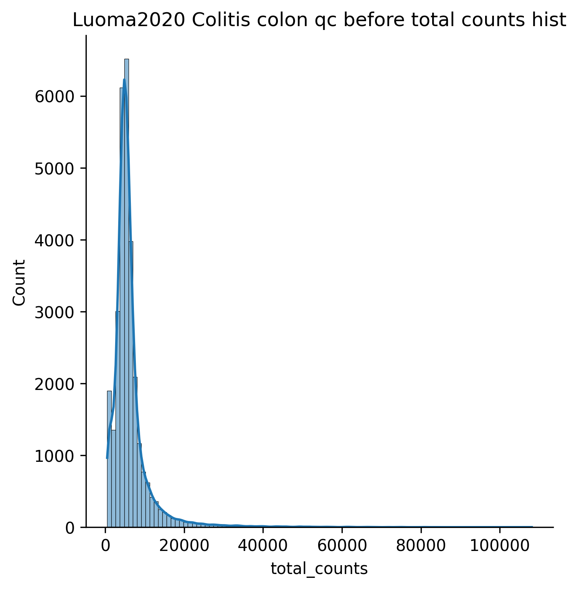 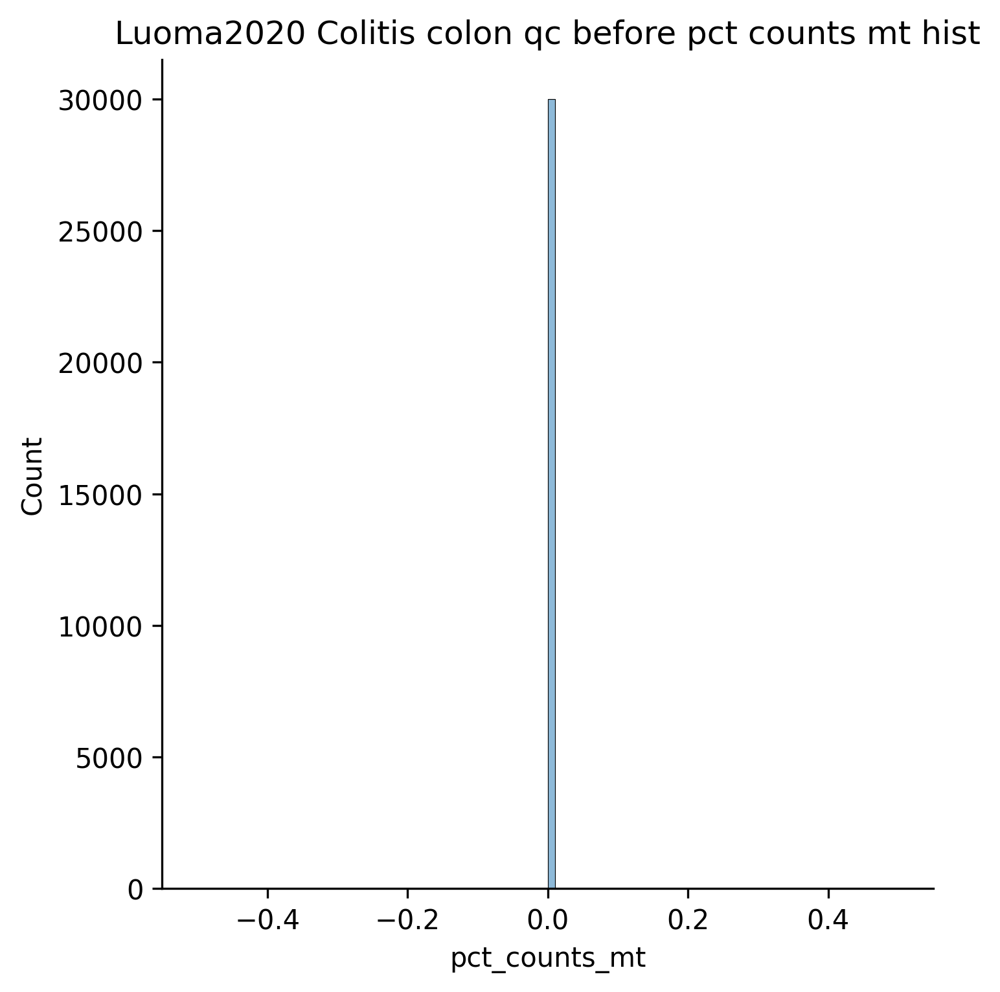 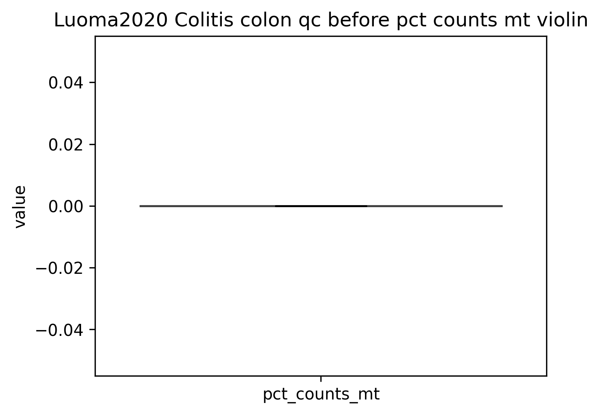 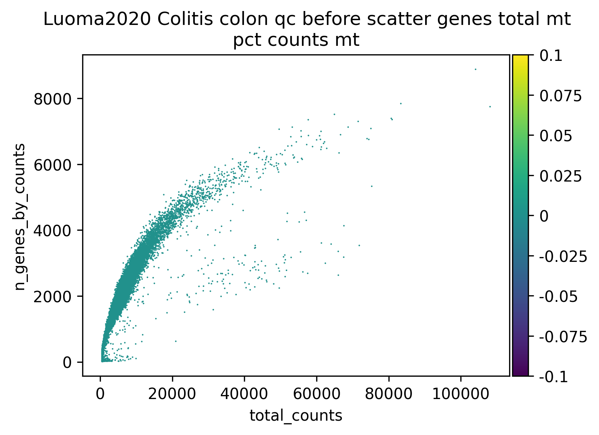
Number of count outliers with MAD > 5: 3103
Number of mitochondrial outliers with MAD > 5 or pct_counts_mt > 8: 0
Filtered out outliers: 3103 (10.34%)
Filtering out genes expressed in less than 20 cells
Removed 15303 genes (54.37%)
After count QC:


1.1.3. Doublet QC
Running scrublet with expected doublet rate 0.05

No doublets predicted
After doublet step: (26897, 15303) (removed 0.00% cells)
1.1.4. Gene exclusion
Excluding genes matching the following patterns:
Note: Showing at most 10 rows and 10 columns from data with 11 rows and 2 columns.
| mt_genes | ['MT-'] |
| ribo_genes | ['RPS', 'RPL'] |
| hb_genes | ['^HBA|^HBB'] |
| stress_genes | ['G0S2', '^JUN', '^FOS', 'CDKN1A'] |
| IFN_genes | ['^IRF', '^IFN'] |
| ccl_genes | ['CCL'] |
| MHC_genes | ['^HLA-[A-Z]'] |
| hist_genes | ['HIST'] |
| comp_genes | ['^C1Q'] |
| ig_genes | ['^IGH', '^IGK', '^IGL'] |
Removing 385 genes (2.52%)
Shape after exclusion panel filtering: (26897, 14918)
load_dataset
function: load_dataset parameters: filename: Agne_Celiac_ds2_CD45.raw_counts_stand.h5ad max_cells: 30000 study: Agne_Celiac_ds2 tissue_type: tissue cache_file: data/load_dataset_0ec3d3245f89.h5ad
load file 9: Agne_Celiac_ds2_CD45.raw_counts_stand.h5ad
file_version: 2026-10-06 12:31:34.844485700
Loaded 'Agne_Celiac_ds2_CD45.raw_counts_stand.h5ad' (backed): 13097 × 33538
Gene names: index → ENSG IDs (13057 without ensembl_id kept via symbol), dropped 0 duplicates → 33538 genes
Pre-computed QC metrics from gene_name column
1.1.5. Loaded: Agne_Celiac_ds2_CD45.raw_counts_stand.h5ad
Shape: 13097 cells × 33538 genes
layers: ['counts'] | obsm: []
obs columns
Note: Showing at most 10 rows and 10 columns from data with 31 rows and 4 columns.
| index | column | dtype | n_unique | top values |
|---|---|---|---|---|
| 0 | study_name | category | 1 | Celiac_ds2_45 (13097) |
| 1 | sample_id | category | 16 | GI4401_DUO_EPI_GEX (2479), GI4345_DUO_45_GEX (1630), GI4345_DUO_EPI_GEX (1497) |
| 2 | donor | category | 8 | Celiac_ds2_45_GI4401 (3148), Celiac_ds2_45_GI4345 (3127), Celiac_ds2_45_GI4290 (2066) |
| 3 | tissue | category | 1 | duodenum (13097) |
| 4 | disease | category | 2 | CeD (11253), H (1844) |
| 5 | tissue_group | category | 1 | tissue (13097) |
| 6 | disease_group | category | 2 | IMID (11253), NORMAL (1844) |
| 7 | tissue_detail | category | 1 | (13097) |
| 8 | disease_detail | category | 3 | active (7006), treated (4247), healthy (1844) |
| 9 | Isolation | category | 2 | EPI (6706), 45 (6391) |
var columns
Note: Showing at most 10 rows and 10 columns from data with 14 rows and 4 columns.
| index | column | dtype | n_unique | sample values |
|---|---|---|---|---|
| 0 | gene_name | object | 33538 | FAM231C (1), MIR1302-2HG (1), MT-CO1 (1) |
| 1 | ensembl_id | category | 20481 | ENSG00000310560 (1), ENSG00000284848 (1), ENSG00000284862 (1) |
| 2 | ensembl_source | category | 5 | direct_hgnc_exact (20471), unmapped (11191), ambiguous_direct_hgnc_exact (1866) |
| 3 | ensembl_gene_tag | category | 2 | single_gene (20480), multiple_genes (1) |
| 4 | mt | bool | min=0 mean=0.000388 max=1 | |
| 5 | ribo | bool | min=0 mean=0.0031 max=1 | |
| 6 | hb | bool | min=0 mean=0.000358 max=1 | |
| 7 | n_cells_by_counts | int64 | min=0 mean=500 max=1.31e+04 | |
| 8 | mean_counts | float64 | min=0 mean=0.102 max=63.5 | |
| 9 | log1p_mean_counts | float64 | min=0 mean=0.0506 max=4.17 |
remap_columns
function: remap_columns parameters: column_map: {"Age": "age", "Chemistry": "chemistry", "Disease": "disease", "Donor": "donor", "Patient": "donor", "PatientID": "donor", "Sample": "sample_id", "SampleID": "sample_id", "Sex": "sex", "Tissue": "tissue_type", "assay": "chemistry", "cohort": "study", "condition": "disease", "condition_detail": "disease_detail", "dataset": "study", "detailed_context": "disease_detail", "diagnosis": "disease", "diagnosis_detail": "disease_detail", "disease_status": "disease", "disease_subtype": "disease_detail", "donor_id": "donor", "gender": "sex", "library_type": "chemistry", "organ": "tissue_type", "patient": "donor", "patient_id": "donor", "protocol": "chemistry", "sample": "sample_id", "sampleID": "sample_id", "sample_type": "tissue_type", "source_tissue": "tissue_type", "subtype": "disease_detail", "tissue": "tissue_type"} defaults: {"assay_chemistry": "5'", "cell_sort": "CD45+", "chemistry": "10x_5v1", "data_source": "in-house (Agne)", "disease": "CeD", "disease_detail": "Celiac disease (duodenum, CD45 sort)", "tissue_detail": "small intestine (duodenum)"} cache_file: data/remap_columns_95a34a9ae531.h5ad
remap_columns: no renames applied (targets already present or sources absent)
Default applied: assay_chemistry = '5''
Default applied: data_source = 'in-house (Agne)'
Default applied: cell_sort = 'CD45+'
qc_full
function: qc_full parameters: excluded_gene_patterns: null expected_doublet_rate: 0.05 frac_treshold: 0.05 low_count_treshold: 1000 mad_outlier_var: 5 min_cells_per_gene: 20 mitochondria_cutoff_percentage: 8 name: Agne_Celiac_ds2_CD45_duodenum cache_file: data/qc_full_6ade98a25e58.h5ad
1.2. Quality Control
1.2.1. Ambient RNA QC
Checking if a cleanup is necessary, flagging cells with less than 1000 counts as potential ambient RNA contamination
No significant RNA contamination detected, skipping cleanup
1.2.2. Count QC
| index | count | mean | std | min | 25% | 50% | 75% | max |
|---|---|---|---|---|---|---|---|---|
| total_counts | 13097 | 3416.31 | 1936.25 | 678 | 2010 | 3019 | 4457 | 59739 |
| n_genes_by_counts | 13097 | 1279.11 | 515.86 | 501 | 869 | 1194 | 1605 | 6197 |
| pct_counts_mt | 13097 | 0 | 0 | 0 | 0 | 0 | 0 | 0 |
| pct_counts_ribo | 13097 | 1.63 | 0.53 | 0 | 1.28 | 1.61 | 1.95 | 4.74 |
| pct_counts_hb | 13097 | 0 | 0 | 0 | 0 | 0 | 0 | 0 |
| pct_counts_in_top_20_genes | 13097 | 21.79 | 3.01 | 13.30 | 19.82 | 21.47 | 23.39 | 67.24 |
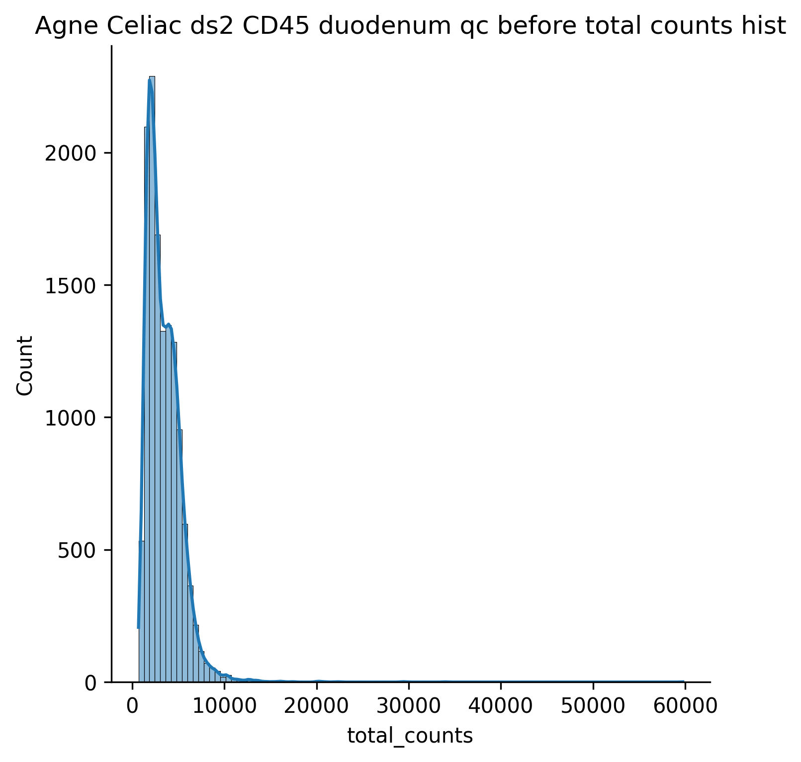 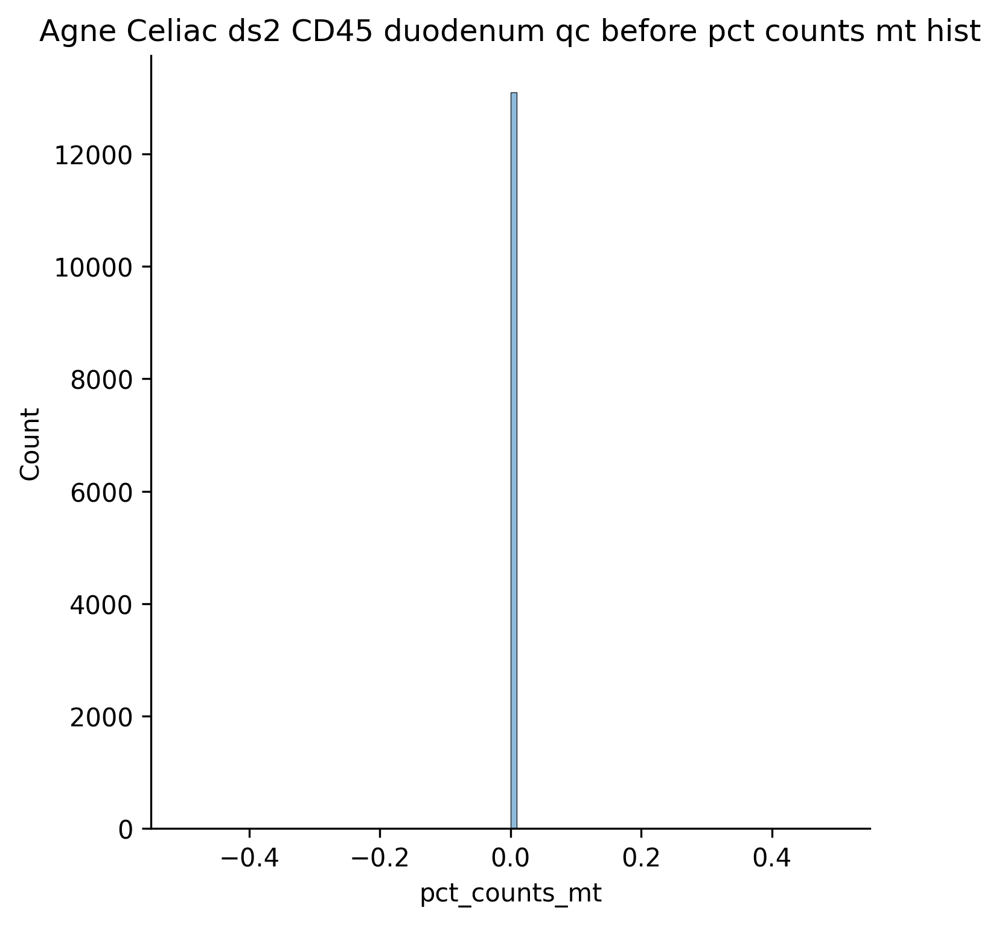 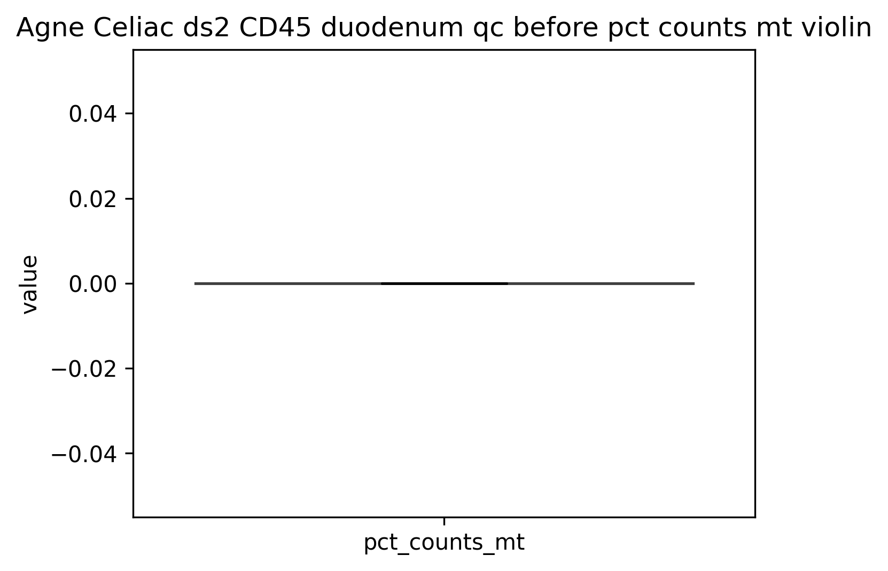 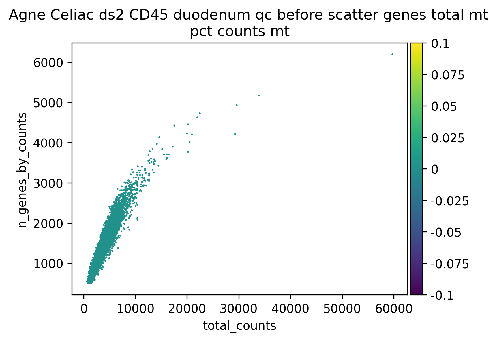
Number of count outliers with MAD > 5: 154
Number of mitochondrial outliers with MAD > 5 or pct_counts_mt > 8: 0
Filtered out outliers: 154 (1.18%)
Filtering out genes expressed in less than 20 cells
Removed 12995 genes (61.25%)
After count QC:
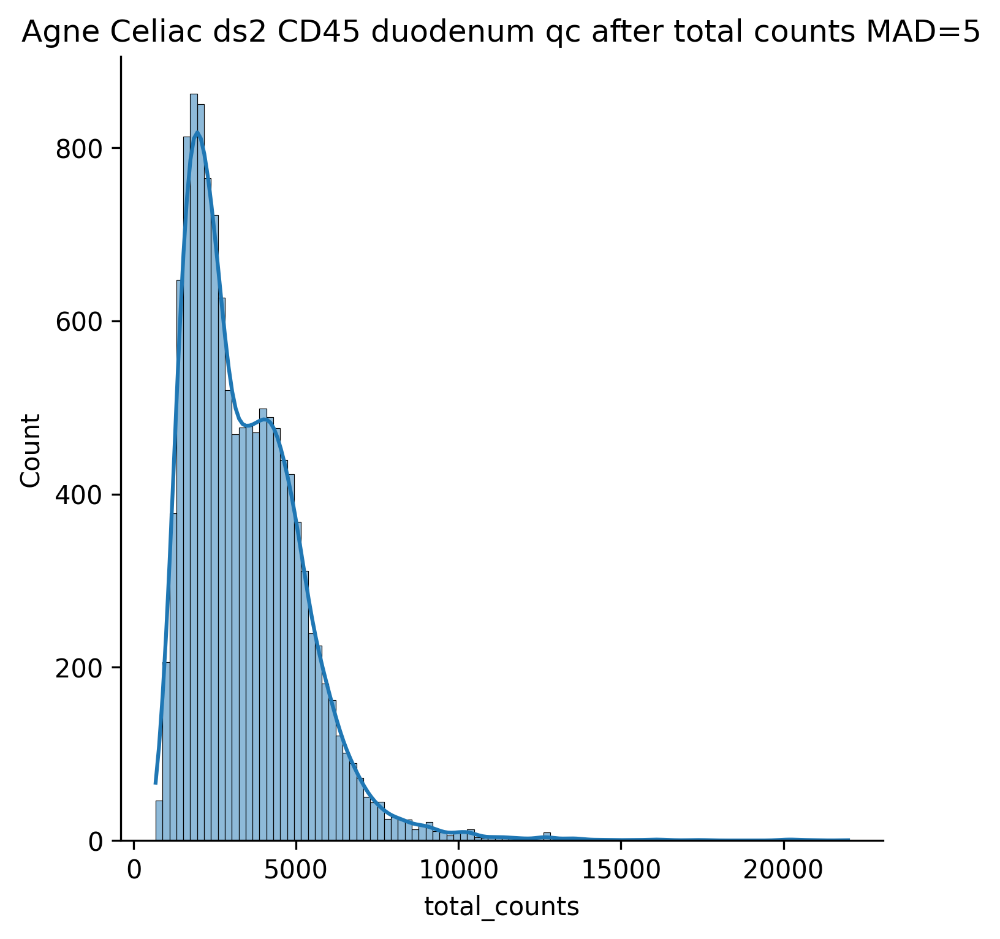 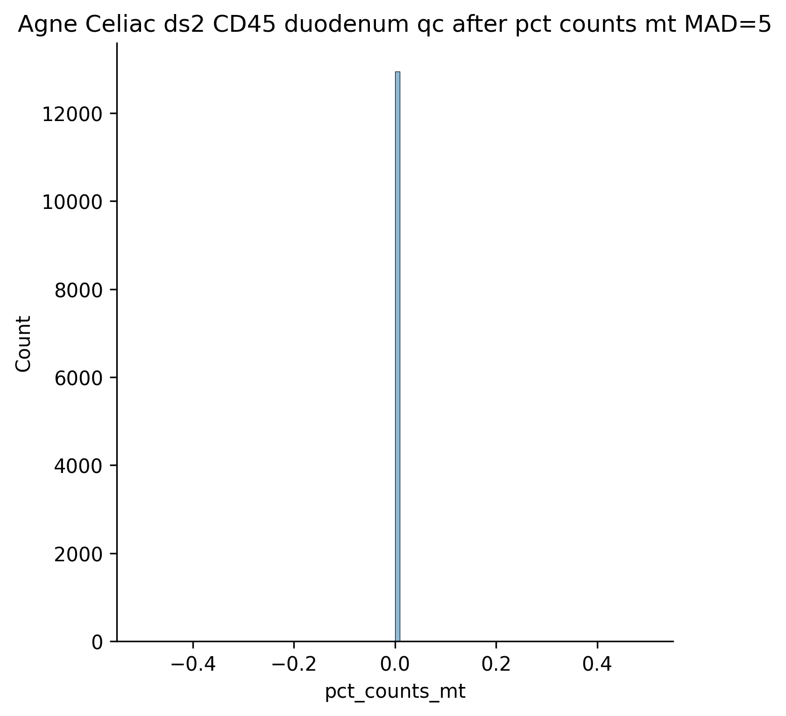 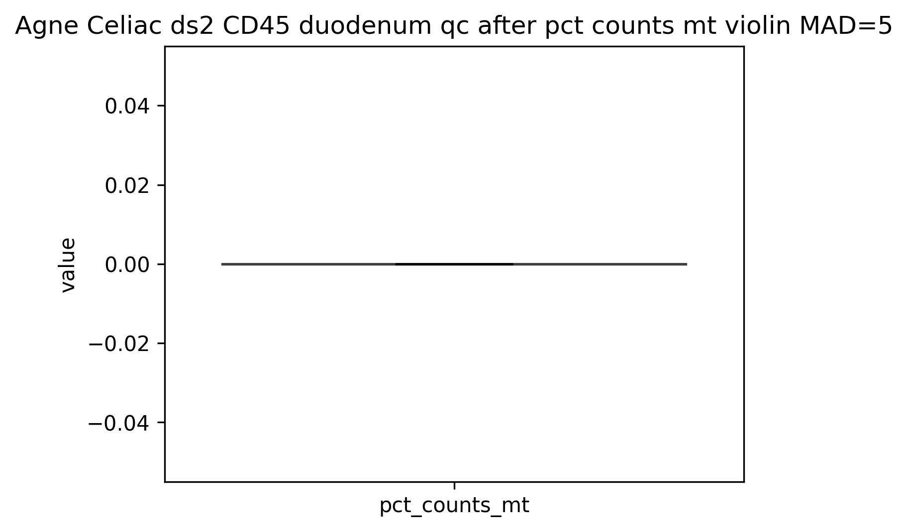 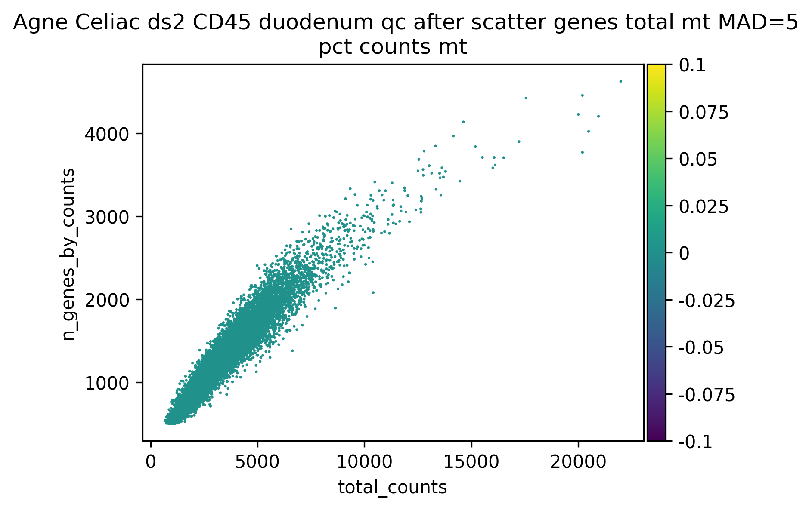
1.2.3. Doublet QC
Running scrublet with expected doublet rate 0.05
No doublets predicted
After doublet step: (12943, 12995) (removed 0.00% cells)
1.2.4. Gene exclusion
Excluding genes matching the following patterns:
Note: Showing at most 10 rows and 10 columns from data with 11 rows and 2 columns.
| mt_genes | ['MT-'] |
| ribo_genes | ['RPS', 'RPL'] |
| hb_genes | ['^HBA|^HBB'] |
| stress_genes | ['G0S2', '^JUN', '^FOS', 'CDKN1A'] |
| IFN_genes | ['^IRF', '^IFN'] |
| ccl_genes | ['CCL'] |
| MHC_genes | ['^HLA-[A-Z]'] |
| hist_genes | ['HIST'] |
| comp_genes | ['^C1Q'] |
| ig_genes | ['^IGH', '^IGK', '^IGL'] |
Removing 388 genes (2.99%)
Shape after exclusion panel filtering: (12943, 12607)
load_dataset
function: load_dataset parameters: filename: GSE173303.raw_counts_stand.h5ad max_cells: 30000 study: Kim2022 tissue_type: null cache_file: data/load_dataset_d8050e0a1767.h5ad
load file 10: GSE173303.raw_counts_stand.h5ad
file_version: 2026-09-09 09:26:45.339106903
Loaded 'GSE173303.raw_counts_stand.h5ad' (backed): 89717 × 21831
Subsampled to 30000 cells (backed → memory)
Gene names: index → ENSG IDs (6160 without ensembl_id kept via symbol), dropped 0 duplicates → 21831 genes
Pre-computed QC metrics from gene_name column
1.2.5. Loaded: GSE173303.raw_counts_stand.h5ad
Shape: 30000 cells × 21831 genes
layers: ['counts'] | obsm: []
obs columns
Note: Showing at most 10 rows and 10 columns from data with 29 rows and 4 columns.
| index | column | dtype | n_unique | top values |
|---|---|---|---|---|
| 0 | study_id | category | 1 | Kim2022 (30000) |
| 1 | study | category | 1 | GSE173303 (30000) |
| 2 | sample_id | category | 16 | GSM5265182 (3608), GSM5265188 (2785), GSM5265186 (2729) |
| 3 | original_barcode | object | 30000 | A7B_TTTGTCATCAGAGACG (1), 45_AAACCTGAGACTAGAT (1), 45_AAACCTGAGAGAGCTC (1) |
| 4 | donor | category | 8 | donor_65 (4915), donor_45 (4778), donor_7 (4766) |
| 5 | tissue_group | category | 2 | PBMC (19687), tissue (10313) |
| 6 | tissue | category | 2 | PBMC (19687), synovial fluid (10313) |
| 7 | disease_group | category | 1 | IMID (30000) |
| 8 | disease | category | 1 | RA (30000) |
| 9 | disease_detail | category | 1 | ICI induced (30000) |
var columns
Note: Showing at most 10 rows and 10 columns from data with 14 rows and 4 columns.
| index | column | dtype | n_unique | sample values |
|---|---|---|---|---|
| 0 | gene_name | object | 21831 | KRTAP10-9 (1), AL627309.1 (1), AL669831.5 (1) |
| 1 | ensembl_id | category | 15671 | ENSG00000310560 (1), ENSG00000000003 (1), ENSG00000000419 (1) |
| 2 | ensembl_source | category | 5 | direct_hgnc_exact (15663), unmapped (4911), ambiguous_direct_hgnc_exact (1249) |
| 3 | ensembl_gene_tag | category | 2 | single_gene (15670), multiple_genes (1) |
| 4 | mt | bool | min=0 mean=0.000595 max=1 | |
| 5 | ribo | bool | min=0 mean=0.00467 max=1 | |
| 6 | hb | bool | min=0 mean=0.00055 max=1 | |
| 7 | n_cells_by_counts | int64 | min=0 mean=2.18e+03 max=3e+04 | |
| 8 | mean_counts | float64 | min=0 mean=0.228 max=71.2 | |
| 9 | log1p_mean_counts | float64 | min=0 mean=0.105 max=4.28 |
remap_columns
function: remap_columns parameters: column_map: {"Age": "age", "Chemistry": "chemistry", "Disease": "disease", "Donor": "donor", "Patient": "donor", "PatientID": "donor", "Sample": "sample_id", "SampleID": "sample_id", "Sex": "sex", "Tissue": "tissue_type", "assay": "chemistry", "cohort": "study", "condition": "disease", "condition_detail": "disease_detail", "dataset": "study", "detailed_context": "disease_detail", "diagnosis": "disease", "diagnosis_detail": "disease_detail", "disease_status": "disease", "disease_subtype": "disease_detail", "donor_id": "donor", "gender": "sex", "library_type": "chemistry", "organ": "tissue_type", "patient": "donor", "patient_id": "donor", "protocol": "chemistry", "sample": "sample_id", "sampleID": "sample_id", "sample_type": "tissue_type", "source_tissue": "tissue_type", "subtype": "disease_detail", "tissue": "tissue_type"} defaults: {"assay_chemistry": "5'", "cellranger": "3.1.0", "chemistry": "10x_5v1", "data_source": "GEO GSE173303", "disease": "RA", "disease_detail": "CPI-induced rheumatoid arthritis"} cache_file: data/remap_columns_3b476120a9e3.h5ad
Remapped columns: tissue → tissue_type
Default applied: assay_chemistry = '5''
Default applied: data_source = 'GEO GSE173303'
Default applied: cellranger = '3.1.0'
qc_full
function: qc_full parameters: excluded_gene_patterns: null expected_doublet_rate: 0.05 frac_treshold: 0.05 low_count_treshold: 1000 mad_outlier_var: 5 min_cells_per_gene: 20 mitochondria_cutoff_percentage: 8 name: Kim2022_RA_synovial cache_file: data/qc_full_ab5d1fa9221e.h5ad
1.3. Quality Control
1.3.1. Ambient RNA QC
Checking if a cleanup is necessary, flagging cells with less than 1000 counts as potential ambient RNA contamination
Potential RNA contamination detected (9.1% of cells < 1000 counts)
IGNORE_AMBIENT_RNA set — skipping cleanup and continuing (count QC still removes low-count cells)
1.3.2. Count QC
| index | count | mean | std | min | 25% | 50% | 75% | max |
|---|---|---|---|---|---|---|---|---|
| total_counts | 30000 | 4972.74 | 4235.67 | 353 | 2374 | 4258 | 6045 | 63073 |
| n_genes_by_counts | 30000 | 1586.19 | 835.07 | 202 | 987 | 1536 | 1982.25 | 7092 |
| pct_counts_mt | 30000 | 0 | 0 | 0 | 0 | 0 | 0 | 0 |
| pct_counts_ribo | 30000 | 2.10 | 0.93 | 0 | 1.45 | 2.01 | 2.68 | 5.47 |
| pct_counts_hb | 30000 | 0 | 0 | 0 | 0 | 0 | 0 | 0 |
| pct_counts_in_top_20_genes | 30000 | 22.31 | 4.81 | 8.22 | 19.44 | 21.42 | 24.14 | 94.66 |
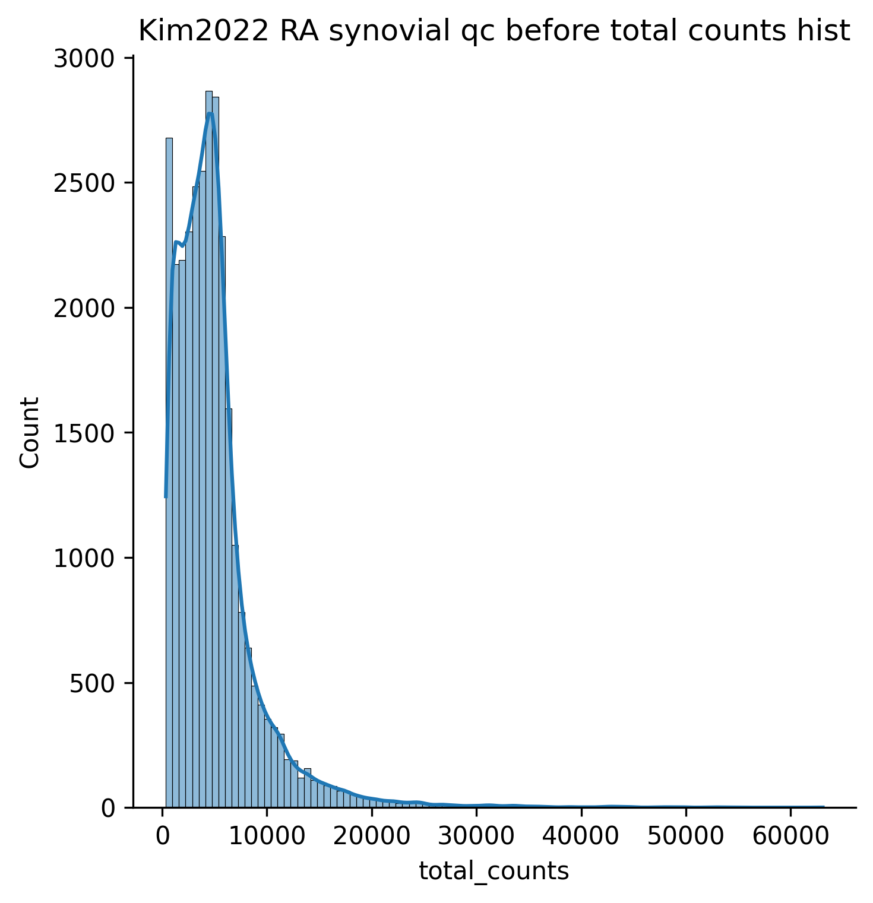 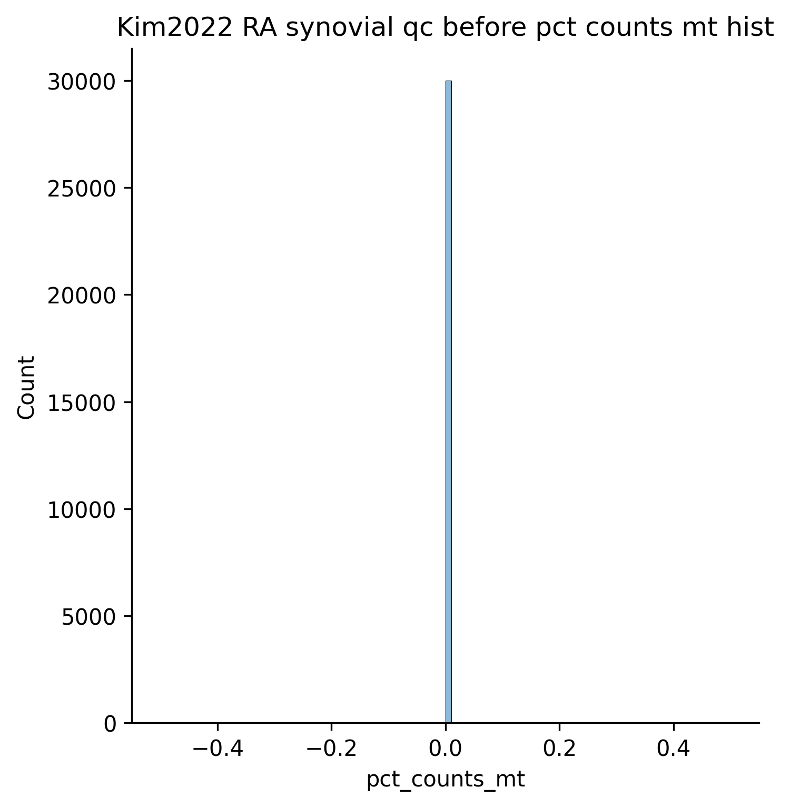 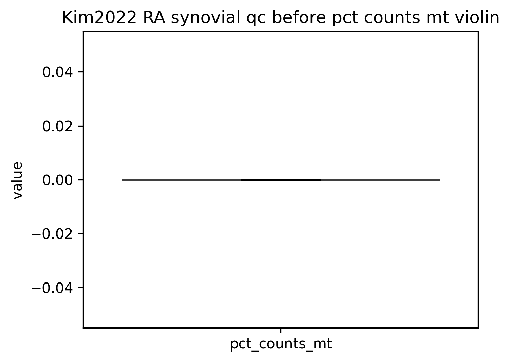 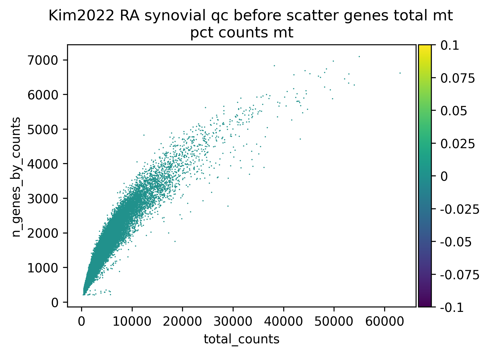
Number of count outliers with MAD > 5: 806
Number of mitochondrial outliers with MAD > 5 or pct_counts_mt > 8: 0
Filtered out outliers: 806 (2.69%)
Filtering out genes expressed in less than 20 cells
Removed 16231 genes (25.65%)
After count QC:
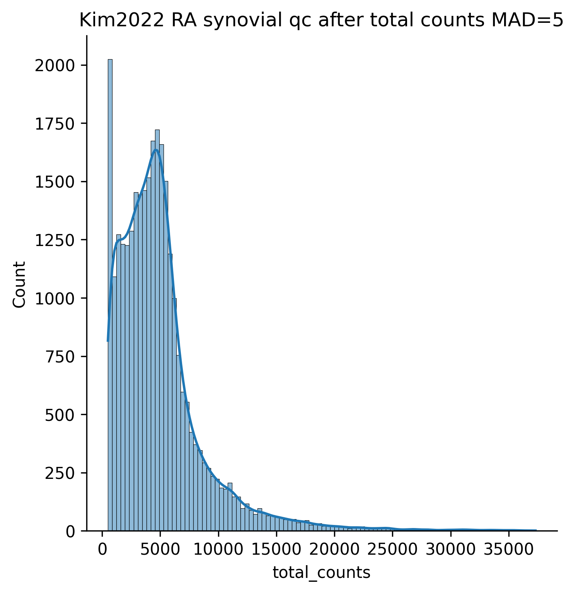 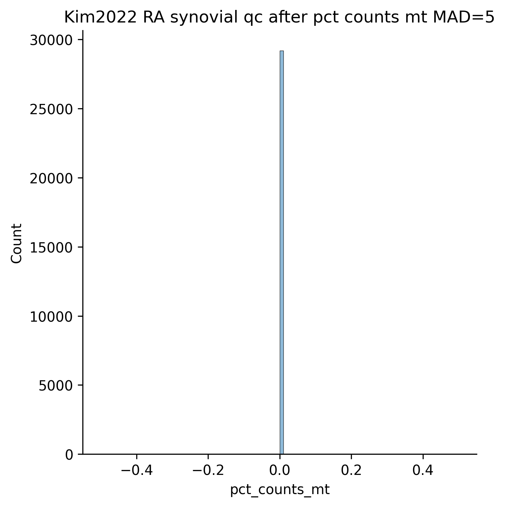 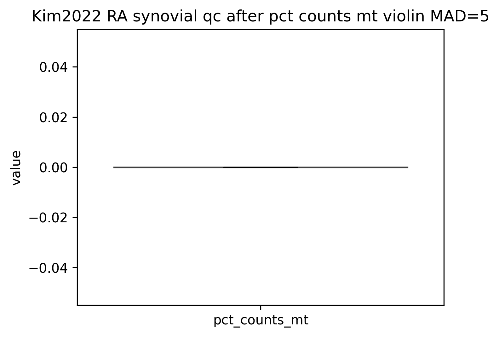 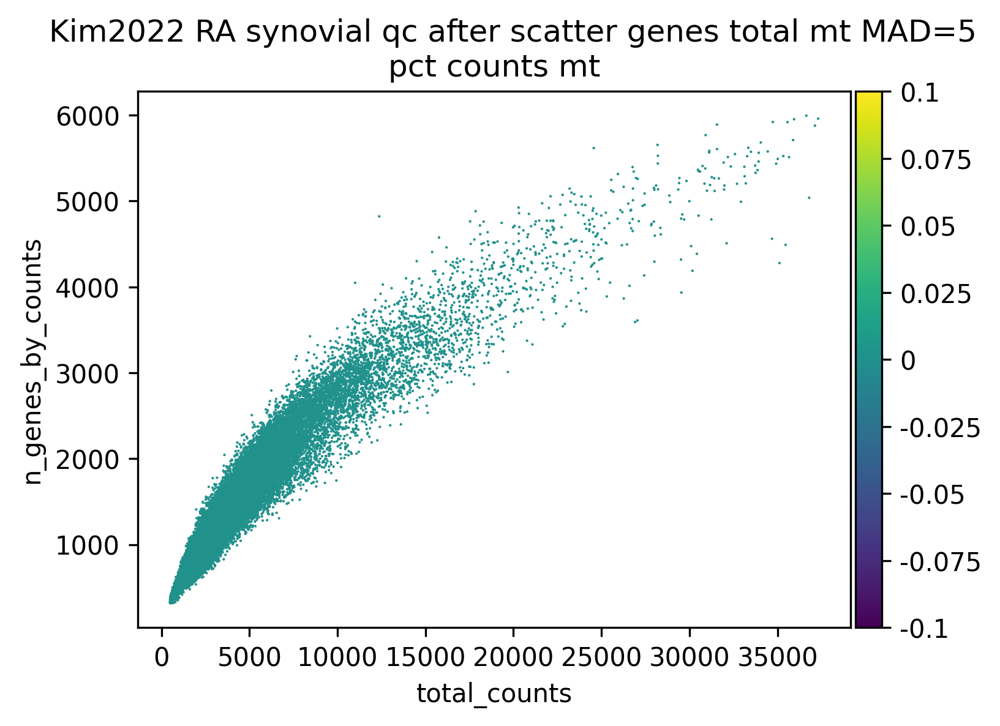
1.3.3. Doublet QC
Running scrublet with expected doublet rate 0.05
There are 2 predicted doublets, applying filter
After doublet step: (29189, 16231) (removed 0.02% cells)
1.3.4. Gene exclusion
Excluding genes matching the following patterns:
Note: Showing at most 10 rows and 10 columns from data with 11 rows and 2 columns.
| mt_genes | ['MT-'] |
| ribo_genes | ['RPS', 'RPL'] |
| hb_genes | ['^HBA|^HBB'] |
| stress_genes | ['G0S2', '^JUN', '^FOS', 'CDKN1A'] |
| IFN_genes | ['^IRF', '^IFN'] |
| ccl_genes | ['CCL'] |
| MHC_genes | ['^HLA-[A-Z]'] |
| hist_genes | ['HIST'] |
| comp_genes | ['^C1Q'] |
| ig_genes | ['^IGH', '^IGK', '^IGL'] |
Removing 434 genes (2.67%)
Shape after exclusion panel filtering: (29189, 15797)
load_dataset
function: load_dataset parameters: filename: GSE166489.raw_counts_stand.h5ad max_cells: 30000 study: Ramaswamy2021 tissue_type: PBMC cache_file: data/load_dataset_7dc3aa514144.h5ad
load file 11: GSE166489.raw_counts_stand.h5ad
file_version: 2026-09-09 09:28:01.893982155
Loaded 'GSE166489.raw_counts_stand.h5ad' (backed): 165765 × 33538
Subsampled to 30000 cells (backed → memory)
Gene names: index → ENSG IDs (13057 without ensembl_id kept via symbol), dropped 0 duplicates → 33538 genes
Pre-computed QC metrics from gene_name column
1.3.5. Loaded: GSE166489.raw_counts_stand.h5ad
Shape: 30000 cells × 33538 genes
layers: ['counts'] | obsm: []
obs columns
Note: Showing at most 10 rows and 10 columns from data with 29 rows and 4 columns.
| index | column | dtype | n_unique | top values |
|---|---|---|---|---|
| 0 | study_id | category | 1 | Ramaswamy2021 (30000) |
| 1 | study | category | 1 | GSE166489 (30000) |
| 2 | sample_id | category | 18 | GSM5073059 (2203), GSM5073072 (2083), GSM5073068 (2058) |
| 3 | donor | category | 18 | donor_5 (2203), donor_18 (2083), donor_14 (2058) |
| 4 | tissue_group | category | 1 | PBMC (30000) |
| 5 | disease_group | category | 1 | IMID (30000) |
| 6 | tissue | category | 1 | PBMC (30000) |
| 7 | tissue_detail | category | 2 | pediatric (24571), adult (5429) |
| 8 | disease | category | 3 | H (16342), MIS-C (9925), Recovered MIS-C (3733) |
| 9 | disease_detail | category | 2 | severe (7963), moderate (5695) |
var columns
Note: Showing at most 10 rows and 10 columns from data with 14 rows and 4 columns.
| index | column | dtype | n_unique | sample values |
|---|---|---|---|---|
| 0 | gene_name | object | 33538 | FAM231C (1), MIR1302-2HG (1), MT-CO1 (1) |
| 1 | ensembl_id | category | 20481 | ENSG00000310560 (1), ENSG00000284848 (1), ENSG00000284862 (1) |
| 2 | ensembl_source | category | 5 | direct_hgnc_exact (20471), unmapped (11191), ambiguous_direct_hgnc_exact (1866) |
| 3 | ensembl_gene_tag | category | 2 | single_gene (20480), multiple_genes (1) |
| 4 | mt | bool | min=0 mean=0.000388 max=1 | |
| 5 | ribo | bool | min=0 mean=0.0031 max=1 | |
| 6 | hb | bool | min=0 mean=0.000358 max=1 | |
| 7 | n_cells_by_counts | int64 | min=0 mean=1.15e+03 max=2.96e+04 | |
| 8 | mean_counts | float64 | min=0 mean=0.118 max=67.4 | |
| 9 | log1p_mean_counts | float64 | min=0 mean=0.0543 max=4.22 |
remap_columns
function: remap_columns parameters: column_map: {"Age": "age", "Chemistry": "chemistry", "Disease": "disease", "Donor": "donor", "Patient": "donor", "PatientID": "donor", "Sample": "sample_id", "SampleID": "sample_id", "Sex": "sex", "Tissue": "tissue_type", "assay": "chemistry", "cohort": "study", "condition": "disease", "condition_detail": "disease_detail", "dataset": "study", "detailed_context": "disease_detail", "diagnosis": "disease", "diagnosis_detail": "disease_detail", "disease_status": "disease", "disease_subtype": "disease_detail", "donor_id": "donor", "gender": "sex", "library_type": "chemistry", "organ": "tissue_type", "patient": "donor", "patient_id": "donor", "protocol": "chemistry", "sample": "sample_id", "sampleID": "sample_id", "sample_type": "tissue_type", "source_tissue": "tissue_type", "subtype": "disease_detail", "tissue": "tissue_type"} defaults: {"assay_chemistry": "5'", "cellranger": "3.1.0", "chemistry": "10x_5v1", "data_source": "GEO GSE166489", "disease": "MIS-C", "disease_detail": "Multisystem inflammatory syndrome in children"} cache_file: data/remap_columns_7ce21be16f0a.h5ad
remap_columns: no renames applied (targets already present or sources absent)
Default applied: assay_chemistry = '5''
Default applied: data_source = 'GEO GSE166489'
Default applied: cellranger = '3.1.0'
qc_full
function: qc_full parameters: excluded_gene_patterns: null expected_doublet_rate: 0.05 frac_treshold: 0.05 low_count_treshold: 1000 mad_outlier_var: 5 min_cells_per_gene: 20 mitochondria_cutoff_percentage: 8 name: Ramaswamy2021_MISC_PBMC cache_file: data/qc_full_d701c0c587ce.h5ad
1.4. Quality Control
1.4.1. Ambient RNA QC
Checking if a cleanup is necessary, flagging cells with less than 1000 counts as potential ambient RNA contamination
Potential RNA contamination detected (6.1% of cells < 1000 counts)
IGNORE_AMBIENT_RNA set — skipping cleanup and continuing (count QC still removes low-count cells)
1.4.2. Count QC
| index | count | mean | std | min | 25% | 50% | 75% | max |
|---|---|---|---|---|---|---|---|---|
| total_counts | 30000 | 3954.13 | 3128.31 | 500 | 2469 | 3417 | 4578 | 79005 |
| n_genes_by_counts | 30000 | 1282.57 | 602.35 | 17 | 956 | 1214 | 1502 | 7197 |
| pct_counts_mt | 30000 | 0 | 0 | 0 | 0 | 0 | 0 | 0 |
| pct_counts_ribo | 30000 | 2.57 | 1.12 | 0 | 1.80 | 2.69 | 3.44 | 5.83 |
| pct_counts_hb | 30000 | 0 | 0 | 0 | 0 | 0 | 0 | 0 |
| pct_counts_in_top_20_genes | 30000 | 25.59 | 9.32 | 13.07 | 21.33 | 23.97 | 26.73 | 100 |
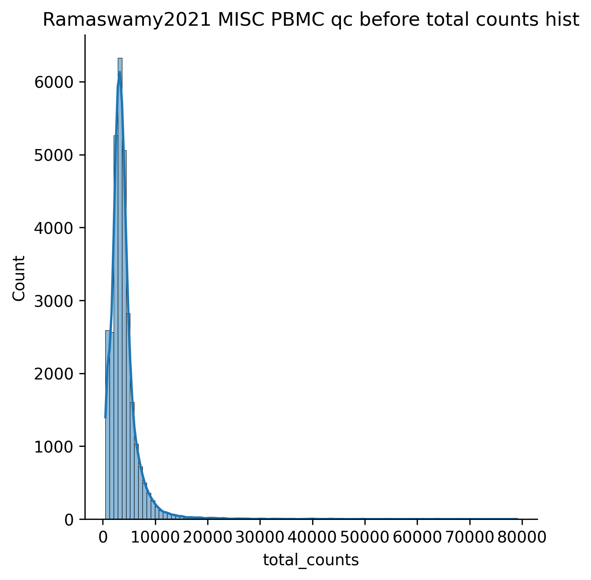 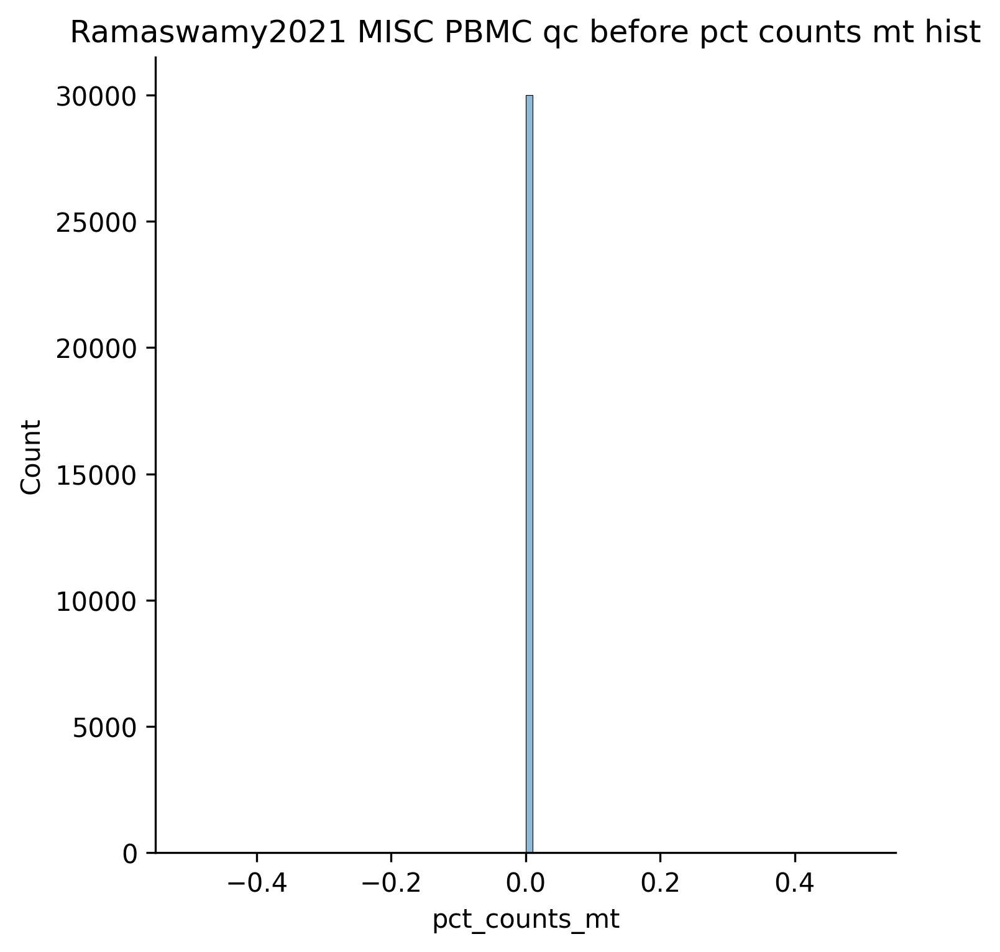 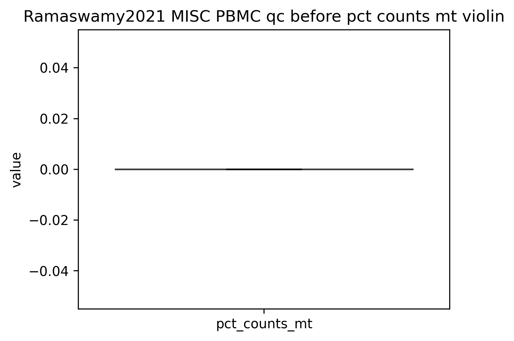 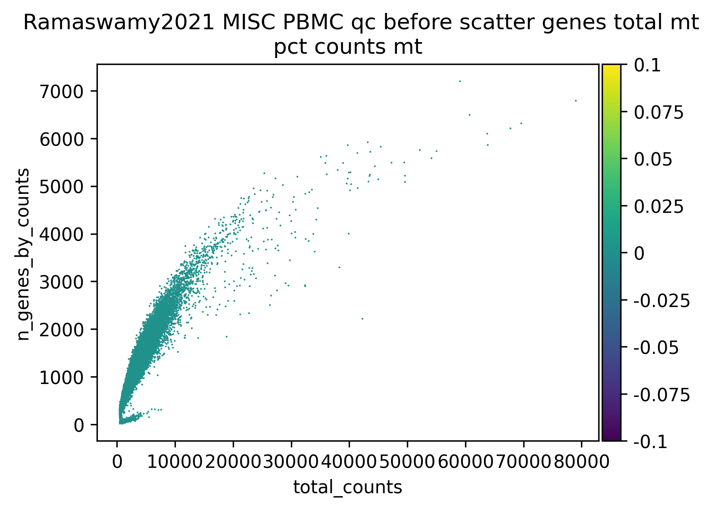
Number of count outliers with MAD > 5: 2426
Number of mitochondrial outliers with MAD > 5 or pct_counts_mt > 8: 0
Filtered out outliers: 2426 (8.09%)
Filtering out genes expressed in less than 20 cells
Removed 15711 genes (53.15%)
After count QC:
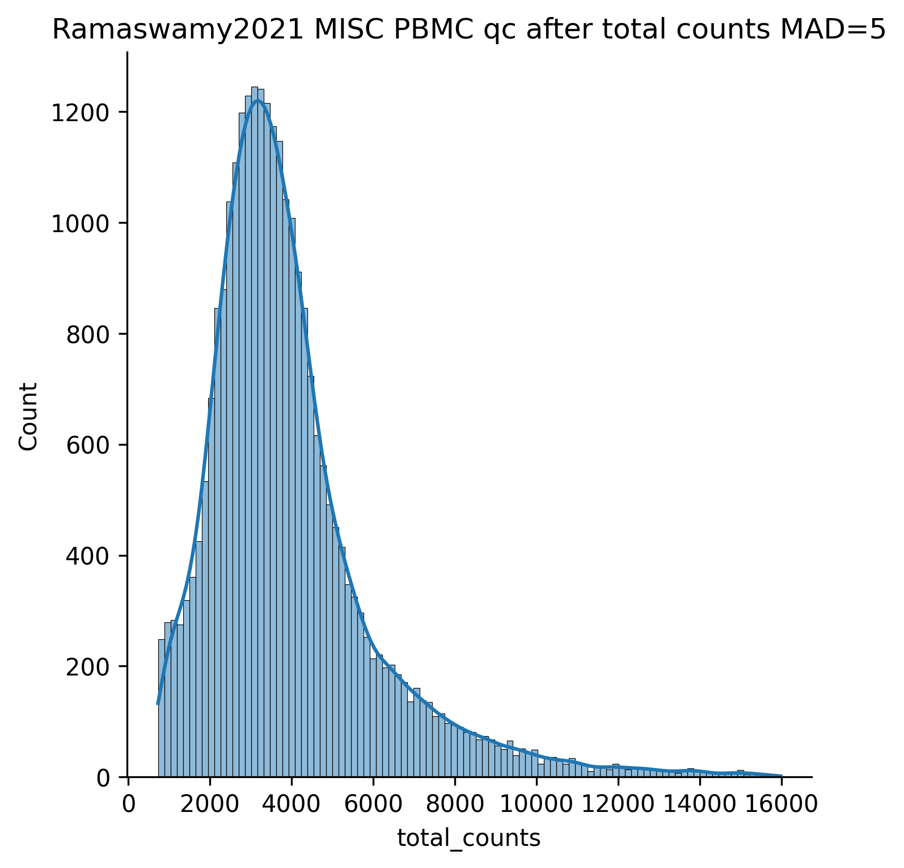 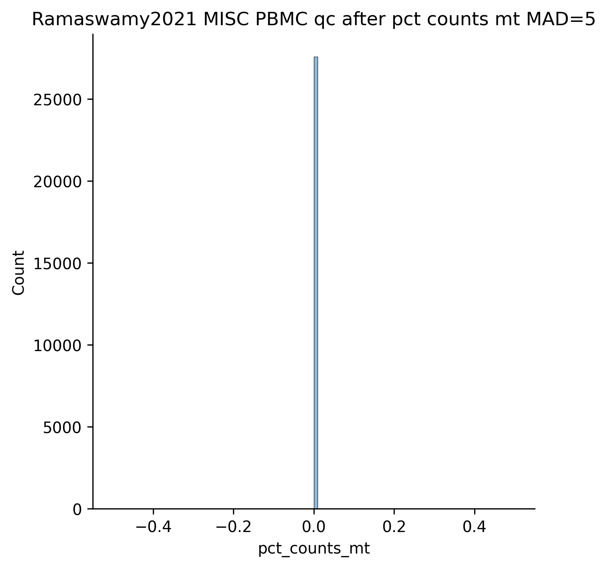 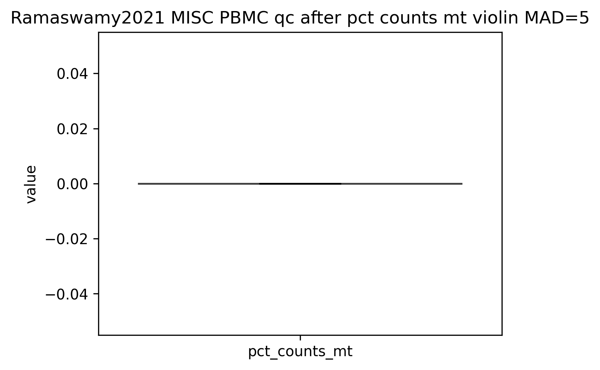 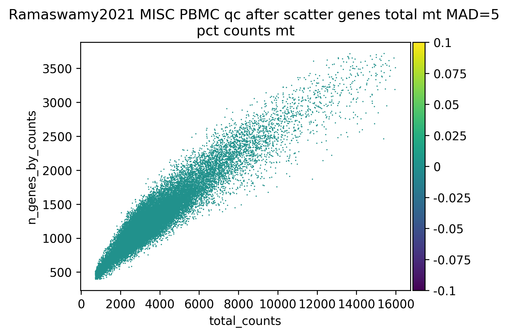
1.4.3. Doublet QC
Running scrublet with expected doublet rate 0.05
There are 2 predicted doublets, applying filter
After doublet step: (26688, 15711) (removed 3.21% cells)
1.4.4. Gene exclusion
Excluding genes matching the following patterns:
Note: Showing at most 10 rows and 10 columns from data with 11 rows and 2 columns.
| mt_genes | ['MT-'] |
| ribo_genes | ['RPS', 'RPL'] |
| hb_genes | ['^HBA|^HBB'] |
| stress_genes | ['G0S2', '^JUN', '^FOS', 'CDKN1A'] |
| IFN_genes | ['^IRF', '^IFN'] |
| ccl_genes | ['CCL'] |
| MHC_genes | ['^HLA-[A-Z]'] |
| hist_genes | ['HIST'] |
| comp_genes | ['^C1Q'] |
| ig_genes | ['^IGH', '^IGK', '^IGL'] |
Removing 444 genes (2.83%)
Shape after exclusion panel filtering: (26688, 15267)
load_dataset
function: load_dataset parameters: filename: GSE212797.raw_counts_stand.h5ad max_cells: 30000 study: Rahim2023 tissue_type: null cache_file: data/load_dataset_79f3c6017b7f.h5ad
load file 12: GSE212797.raw_counts_stand.h5ad
file_version: 2026-09-09 09:27:44.672885485
Loaded 'GSE212797.raw_counts_stand.h5ad' (backed): 8245 × 13305
Gene names: index → ENSG IDs (1504 without ensembl_id kept via symbol), dropped 0 duplicates → 13305 genes
Pre-computed QC metrics from gene_name column
1.4.5. Loaded: GSE212797.raw_counts_stand.h5ad
Shape: 8245 cells × 13305 genes
layers: ['counts'] | obsm: []
obs columns
Note: Showing at most 10 rows and 10 columns from data with 27 rows and 4 columns.
| index | column | dtype | n_unique | top values |
|---|---|---|---|---|
| 0 | study_id | category | 1 | GSE212797 (8245) |
| 1 | sample_id | category | 6 | GSM6552609 (4120), GSM6552605 (770), GSM6552600 (453) |
| 2 | donor | category | 5 | donor_129 (3687), donor_118 (1471), donor_126 (1218) |
| 3 | batch | category | 8 | batch_6 (4120), batch_3 (1018), batch_1 (839) |
| 4 | tissue_group | category | 2 | TIL (6747), tissue (1498) |
| 5 | tissue | category | 2 | mouth/throat (6747), lymph_node (1498) |
| 6 | disease_group | category | 1 | CANCER (8245) |
| 7 | disease | category | 1 | HNSCC (8245) |
| 8 | chemistry | category | 1 | 10x_5p_v1 (8245) |
| 9 | study | object | 1 | Rahim2023 (8245) |
var columns
Note: Showing at most 10 rows and 10 columns from data with 14 rows and 4 columns.
| index | column | dtype | n_unique | sample values |
|---|---|---|---|---|
| 0 | gene_name | object | 13305 | AC240274.1 (1), LINC01128 (1), LINC00115 (1) |
| 1 | ensembl_id | category | 11801 | ENSG00000293495 (1), ENSG00000000003 (1), ENSG00000000419 (1) |
| 2 | ensembl_source | category | 5 | direct_hgnc_exact (11797), ambiguous_direct_hgnc_exact (955), unmapped (549) |
| 3 | ensembl_gene_tag | category | 1 | single_gene (11801) |
| 4 | mt | bool | min=0 mean=0.000977 max=1 | |
| 5 | ribo | bool | min=0 mean=0.00729 max=1 | |
| 6 | hb | bool | min=0 mean=0.000451 max=1 | |
| 7 | n_cells_by_counts | int64 | min=3 mean=511 max=8.24e+03 | |
| 8 | mean_counts | float64 | min=0.000364 mean=0.146 max=37.1 | |
| 9 | log1p_mean_counts | float64 | min=0.000364 mean=0.0823 max=3.64 |
remap_columns
function: remap_columns parameters: column_map: {"Age": "age", "Chemistry": "chemistry", "Disease": "disease", "Donor": "donor", "Patient": "donor", "PatientID": "donor", "Sample": "sample_id", "SampleID": "sample_id", "Sex": "sex", "Tissue": "tissue_type", "assay": "chemistry", "cohort": "study", "condition": "disease", "condition_detail": "disease_detail", "dataset": "study", "detailed_context": "disease_detail", "diagnosis": "disease", "diagnosis_detail": "disease_detail", "disease_status": "disease", "disease_subtype": "disease_detail", "donor_id": "donor", "gender": "sex", "library_type": "chemistry", "organ": "tissue_type", "patient": "donor", "patient_id": "donor", "protocol": "chemistry", "sample": "sample_id", "sampleID": "sample_id", "sample_type": "tissue_type", "source_tissue": "tissue_type", "subtype": "disease_detail", "tissue": "tissue_type"} defaults: {"assay_chemistry": "5'", "cell_sort": "CD8+ (author subset)", "cellranger": "3.0.2", "chemistry": "10x_5v1", "data_source": "GEO GSE212797", "disease": "HNSCC", "disease_detail": "Head and neck squamous cell carcinoma"} cache_file: data/remap_columns_fe040d678838.h5ad
Remapped columns: tissue → tissue_type
Default applied: disease_detail = 'Head and neck squamous cell carcinoma'
Default applied: assay_chemistry = '5''
Default applied: data_source = 'GEO GSE212797'
Default applied: cell_sort = 'CD8+ (author subset)'
Default applied: cellranger = '3.0.2'
qc_full
function: qc_full parameters: excluded_gene_patterns: null expected_doublet_rate: 0.05 frac_treshold: 0.05 low_count_treshold: 1000 mad_outlier_var: 5 min_cells_per_gene: 20 mitochondria_cutoff_percentage: 8 name: Rahim2023_HNSCC_LN cache_file: data/qc_full_4076bec8c83b.h5ad
1.5. Quality Control
1.5.1. Ambient RNA QC
Checking if a cleanup is necessary, flagging cells with less than 1000 counts as potential ambient RNA contamination
Potential RNA contamination detected (21.6% of cells < 1000 counts)
IGNORE_AMBIENT_RNA set — skipping cleanup and continuing (count QC still removes low-count cells)
1.5.2. Count QC
| index | count | mean | std | min | 25% | 50% | 75% | max |
|---|---|---|---|---|---|---|---|---|
| total_counts | 8245 | 1944.09 | 1418.52 | 452 | 1060 | 1544 | 2294 | 15342 |
| n_genes_by_counts | 8245 | 825.39 | 388.38 | 244 | 548 | 760 | 985 | 2955 |
| pct_counts_mt | 8245 | 0 | 0 | 0 | 0 | 0 | 0 | 0 |
| pct_counts_ribo | 8245 | 1.87 | 0.87 | 0 | 1.33 | 1.79 | 2.33 | 6.43 |
| pct_counts_hb | 8245 | 0 | 0 | 0 | 0 | 0 | 0 | 0 |
| pct_counts_in_top_20_genes | 8245 | 23.30 | 5.24 | 9.78 | 19.50 | 21.76 | 26.33 | 58.06 |
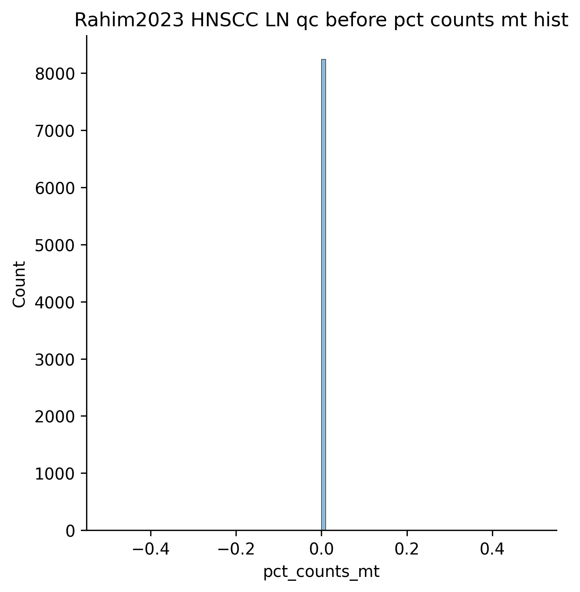 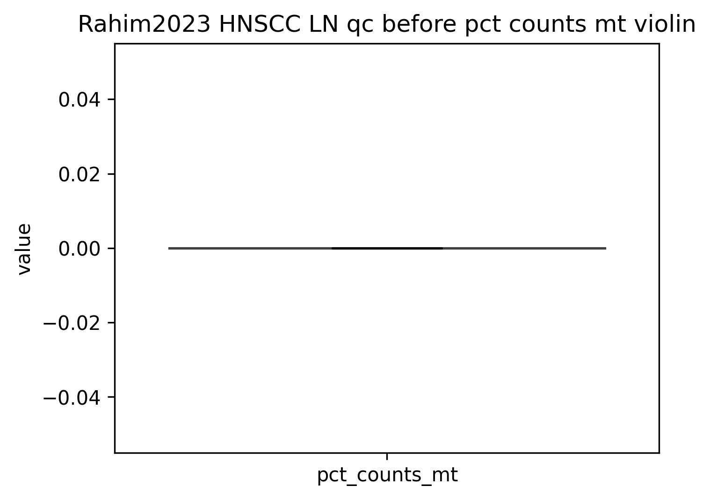 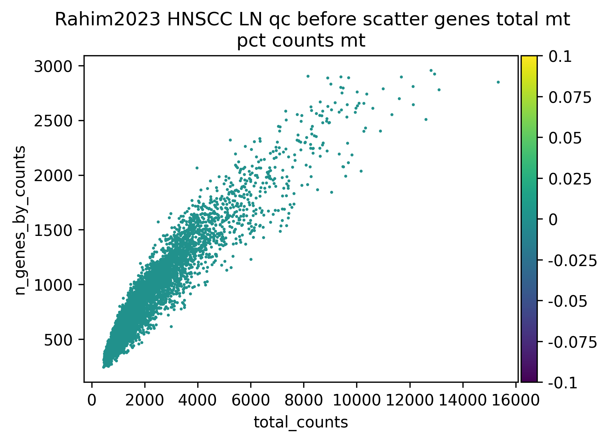
Number of count outliers with MAD > 5: 170
Number of mitochondrial outliers with MAD > 5 or pct_counts_mt > 8: 0
Filtered out outliers: 170 (2.06%)
Filtering out genes expressed in less than 20 cells
Removed 10794 genes (18.87%)
After count QC:
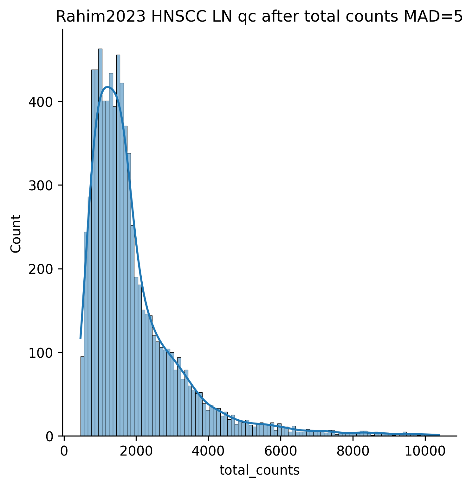 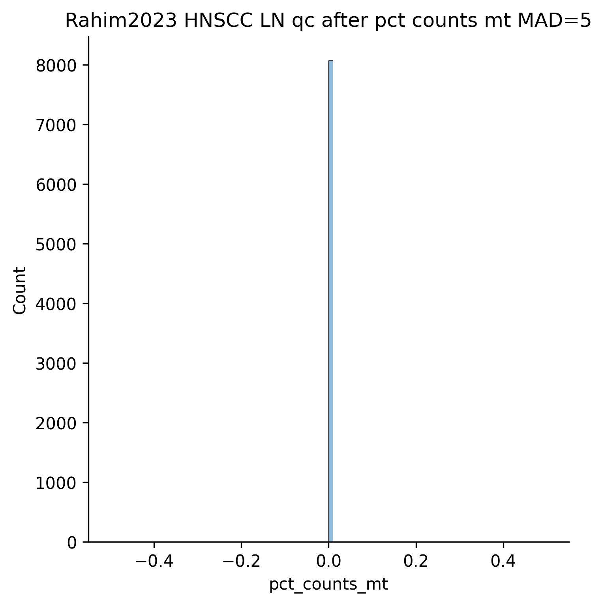 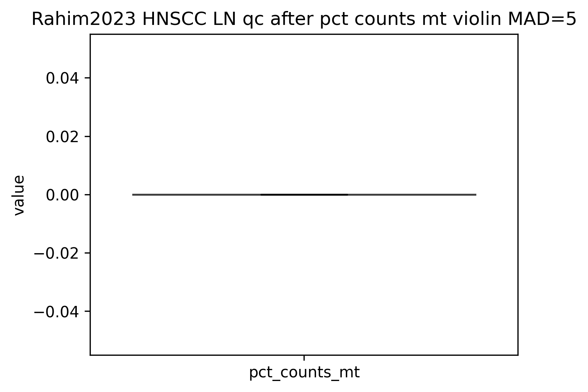 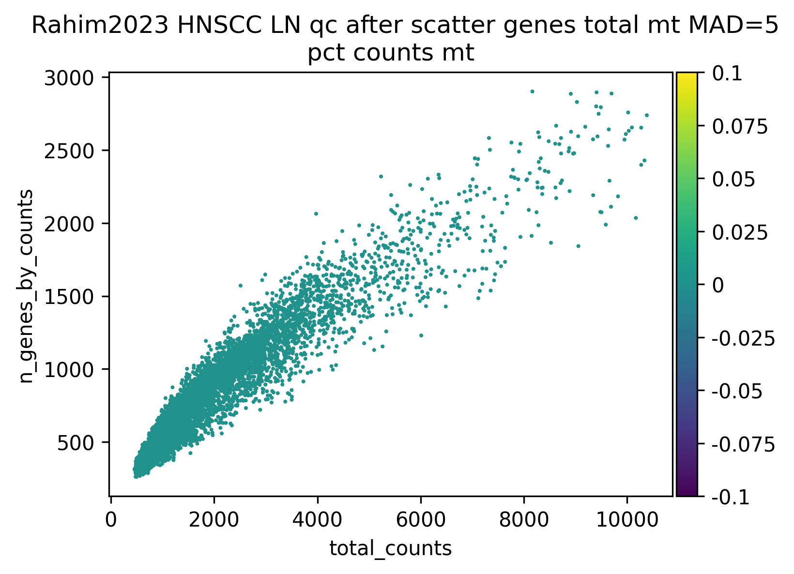
1.5.3. Doublet QC
Running scrublet with expected doublet rate 0.05
There are 2 predicted doublets, applying filter
After doublet step: (8073, 10794) (removed 0.02% cells)
1.5.4. Gene exclusion
Excluding genes matching the following patterns:
Note: Showing at most 10 rows and 10 columns from data with 11 rows and 2 columns.
| mt_genes | ['MT-'] |
| ribo_genes | ['RPS', 'RPL'] |
| hb_genes | ['^HBA|^HBB'] |
| stress_genes | ['G0S2', '^JUN', '^FOS', 'CDKN1A'] |
| IFN_genes | ['^IRF', '^IFN'] |
| ccl_genes | ['CCL'] |
| MHC_genes | ['^HLA-[A-Z]'] |
| hist_genes | ['HIST'] |
| comp_genes | ['^C1Q'] |
| ig_genes | ['^IGH', '^IGK', '^IGL'] |
Removing 342 genes (3.17%)
Shape after exclusion panel filtering: (8073, 10452)
load_dataset
function: load_dataset parameters: filename: GSE145370.raw_counts_stand.h5ad max_cells: 30000 study: Zheng2020 tissue_type: null cache_file: data/load_dataset_0b7aa0f9770a.h5ad
load file 13: GSE145370.raw_counts_stand.h5ad
file_version: 2026-09-09 09:27:06.096428821
Loaded 'GSE145370.raw_counts_stand.h5ad' (backed): 115157 × 33538
Subsampled to 30000 cells (backed → memory)
Gene names: index → ENSG IDs (13057 without ensembl_id kept via symbol), dropped 0 duplicates → 33538 genes
Pre-computed QC metrics from gene_name column
1.5.5. Loaded: GSE145370.raw_counts_stand.h5ad
Shape: 30000 cells × 33538 genes
layers: ['counts'] | obsm: []
obs columns
Note: Showing at most 10 rows and 10 columns from data with 29 rows and 4 columns.
| index | column | dtype | n_unique | top values |
|---|---|---|---|---|
| 0 | study_id | category | 1 | GSE145370 (30000) |
| 1 | sample_id | category | 14 | GSM4317413 (4121), GSM4317409 (3264), GSM4317411 (2893) |
| 2 | original_barcode | category | 29432 | CGGGTCACATACTACG-1 (3), CGCTATCCACCCATTC-1 (3), GCACTCTTCCTTAATC-1 (3) |
| 3 | donor | category | 7 | S135 (5701), S150 (5073), S133 (4831) |
| 4 | tissue_group | category | 2 | TIL (18430), tissue (11570) |
| 5 | tissue | category | 1 | esophagus (30000) |
| 6 | tissue_detail | category | 2 | malignant tissue (18430), adjacent normal tissue (11570) |
| 7 | disease_group | category | 1 | CANCER (30000) |
| 8 | disease | category | 1 | ESCC (30000) |
| 9 | disease_detail | category | 4 | pathological stage IIIB (13881), pathological stage IIA (9596), pathological stage IIIA (3466) |
var columns
Note: Showing at most 10 rows and 10 columns from data with 14 rows and 4 columns.
| index | column | dtype | n_unique | sample values |
|---|---|---|---|---|
| 0 | gene_name | object | 33538 | FAM231C (1), MIR1302-2HG (1), MT-CO1 (1) |
| 1 | ensembl_id | category | 20481 | ENSG00000310560 (1), ENSG00000284848 (1), ENSG00000284862 (1) |
| 2 | ensembl_source | category | 5 | direct_hgnc_exact (20471), unmapped (11191), ambiguous_direct_hgnc_exact (1866) |
| 3 | ensembl_gene_tag | category | 2 | single_gene (20480), multiple_genes (1) |
| 4 | mt | bool | min=0 mean=0.000388 max=1 | |
| 5 | ribo | bool | min=0 mean=0.0031 max=1 | |
| 6 | hb | bool | min=0 mean=0.000358 max=1 | |
| 7 | n_cells_by_counts | int64 | min=0 mean=1.11e+03 max=2.95e+04 | |
| 8 | mean_counts | float64 | min=0 mean=0.111 max=45.2 | |
| 9 | log1p_mean_counts | float64 | min=0 mean=0.0579 max=3.83 |
remap_columns
function: remap_columns parameters: column_map: {"Age": "age", "Chemistry": "chemistry", "Disease": "disease", "Donor": "donor", "Patient": "donor", "PatientID": "donor", "Sample": "sample_id", "SampleID": "sample_id", "Sex": "sex", "Tissue": "tissue_type", "assay": "chemistry", "cohort": "study", "condition": "disease", "condition_detail": "disease_detail", "dataset": "study", "detailed_context": "disease_detail", "diagnosis": "disease", "diagnosis_detail": "disease_detail", "disease_status": "disease", "disease_subtype": "disease_detail", "donor_id": "donor", "gender": "sex", "library_type": "chemistry", "organ": "tissue_type", "patient": "donor", "patient_id": "donor", "protocol": "chemistry", "sample": "sample_id", "sampleID": "sample_id", "sample_type": "tissue_type", "source_tissue": "tissue_type", "subtype": "disease_detail", "tissue": "tissue_type"} defaults: {"assay_chemistry": "5'", "cellranger": "3.1.0", "chemistry": "10x_5v1", "data_source": "GEO GSE145370", "disease": "ESCC", "disease_detail": "Esophageal squamous cell carcinoma", "tissue_detail": "esophagus"} cache_file: data/remap_columns_090c4b42a13d.h5ad
Remapped columns: tissue → tissue_type
Default applied: assay_chemistry = '5''
Default applied: data_source = 'GEO GSE145370'
Default applied: cellranger = '3.1.0'
qc_full
function: qc_full parameters: excluded_gene_patterns: null expected_doublet_rate: 0.05 frac_treshold: 0.05 low_count_treshold: 1000 mad_outlier_var: 5 min_cells_per_gene: 20 mitochondria_cutoff_percentage: 8 name: Zheng2020_ESCC_esophagus cache_file: data/qc_full_936673fd05f2.h5ad
1.6. Quality Control
1.6.1. Ambient RNA QC
Checking if a cleanup is necessary, flagging cells with less than 1000 counts as potential ambient RNA contamination
Potential RNA contamination detected (12.0% of cells < 1000 counts)
IGNORE_AMBIENT_RNA set — skipping cleanup and continuing (count QC still removes low-count cells)
1.6.2. Count QC
| index | count | mean | std | min | 25% | 50% | 75% | max |
|---|---|---|---|---|---|---|---|---|
| total_counts | 30000 | 3735.91 | 4174.28 | 500 | 1522 | 2548.50 | 4115.25 | 63219 |
| n_genes_by_counts | 30000 | 1240.32 | 787 | 19 | 743 | 1051 | 1500 | 8693 |
| pct_counts_mt | 30000 | 0 | 0 | 0 | 0 | 0 | 0 | 0 |
| pct_counts_ribo | 30000 | 1.49 | 0.83 | 0 | 0.91 | 1.37 | 1.95 | 5.64 |
| pct_counts_hb | 30000 | 0 | 0 | 0 | 0 | 0 | 0 | 0 |
| pct_counts_in_top_20_genes | 30000 | 24.98 | 12.68 | 10.56 | 19.05 | 21.64 | 25.03 | 100 |
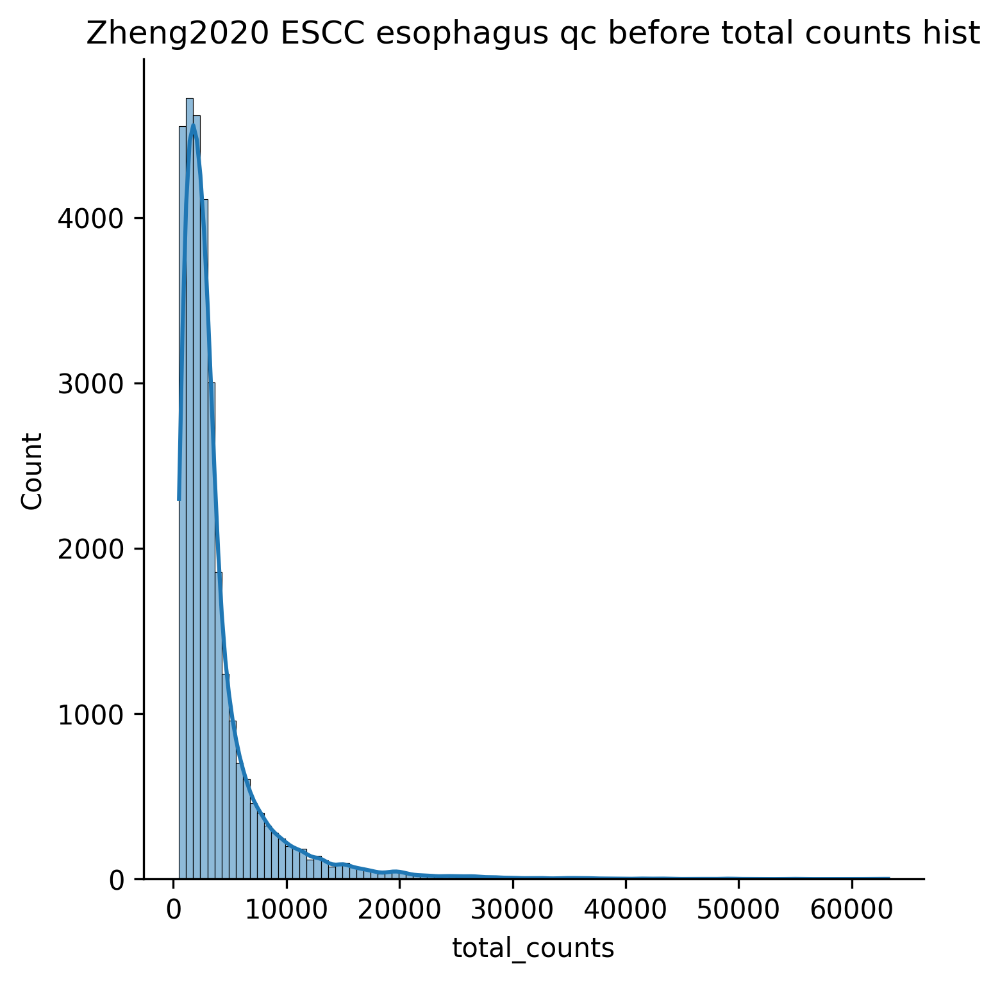 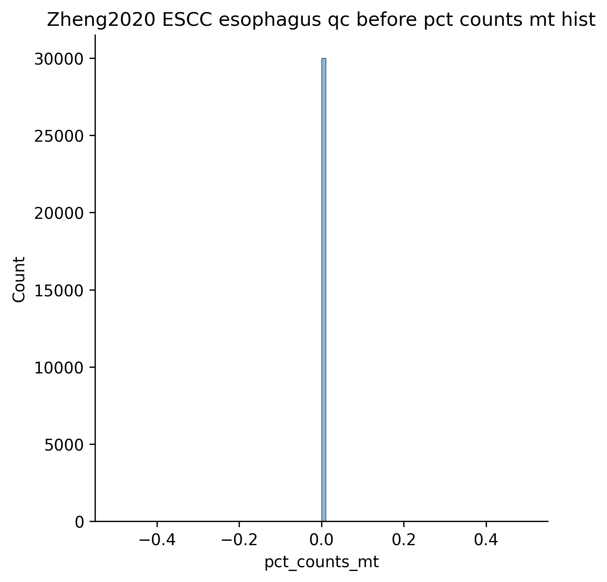 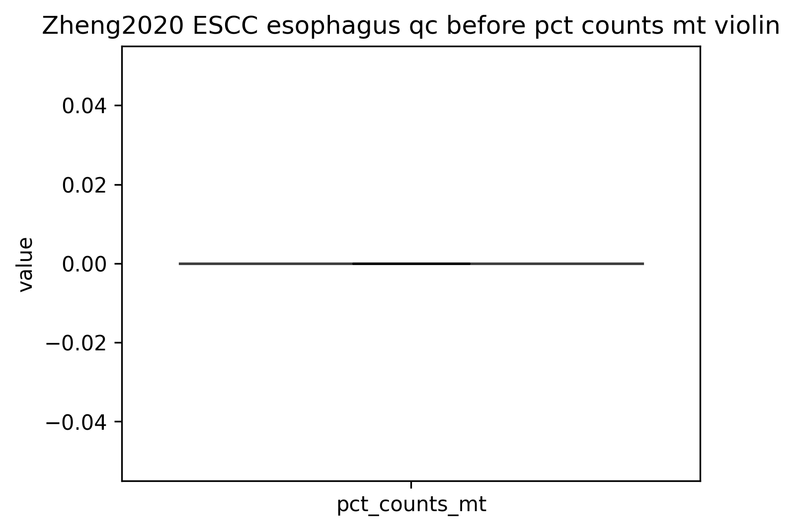 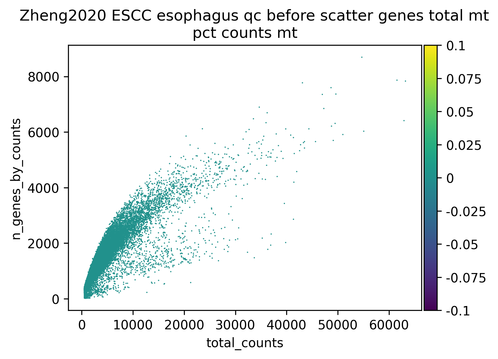
Number of count outliers with MAD > 5: 2701
Number of mitochondrial outliers with MAD > 5 or pct_counts_mt > 8: 0
Filtered out outliers: 2701 (9.00%)
Filtering out genes expressed in less than 20 cells
Removed 17044 genes (49.18%)
After count QC:
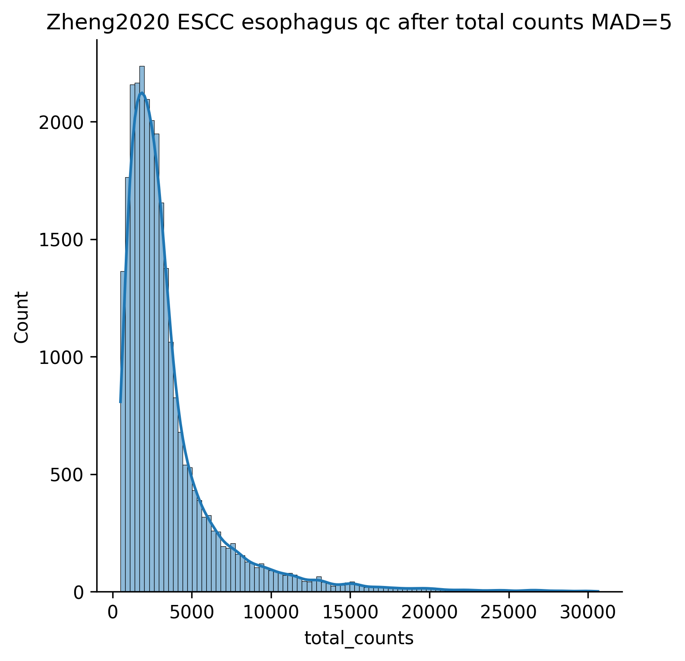 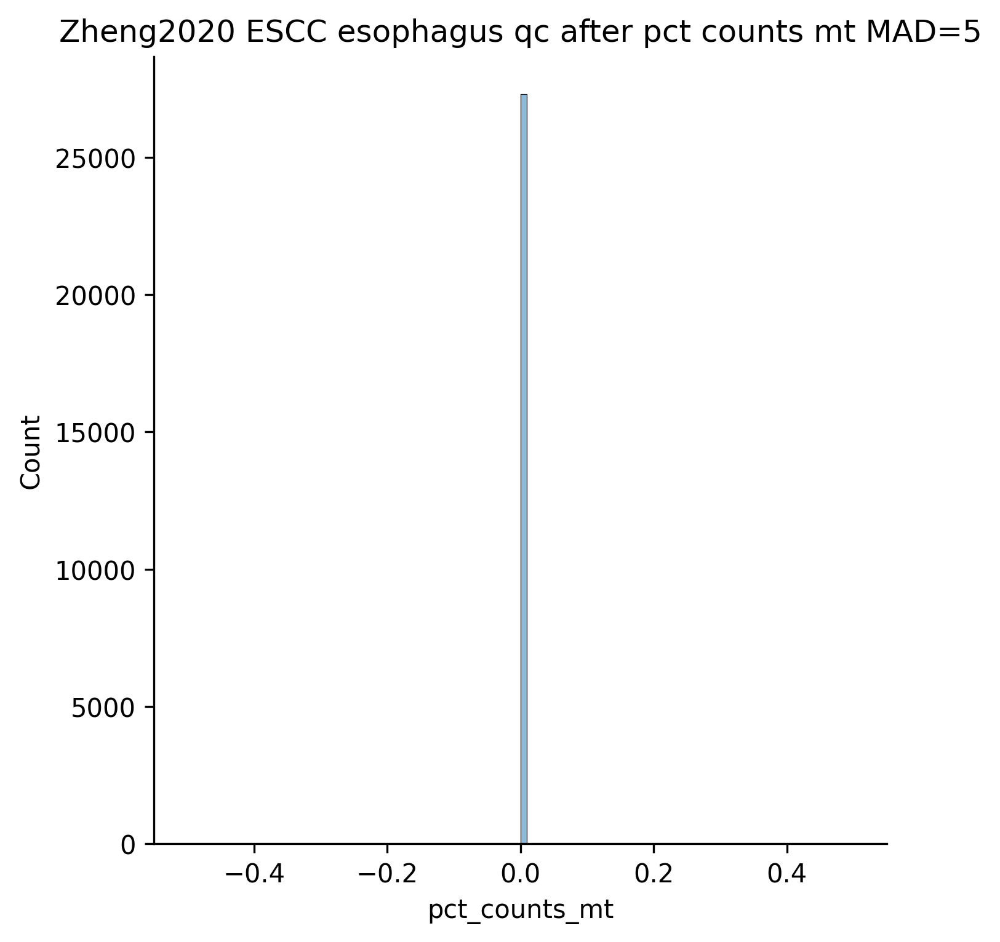 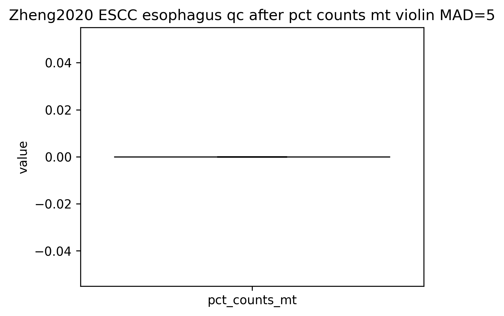 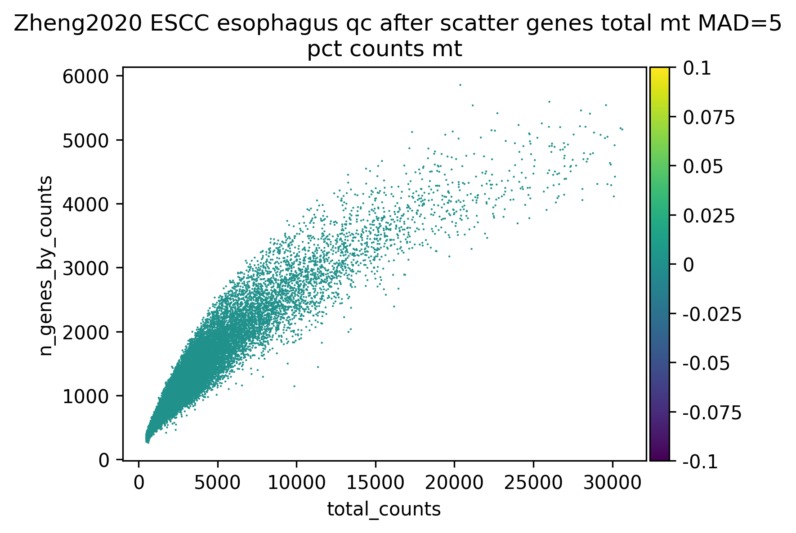
1.6.3. Doublet QC
Running scrublet with expected doublet rate 0.05
No doublets predicted
After doublet step: (27299, 17044) (removed 0.00% cells)
1.6.4. Gene exclusion
Excluding genes matching the following patterns:
Note: Showing at most 10 rows and 10 columns from data with 11 rows and 2 columns.
| mt_genes | ['MT-'] |
| ribo_genes | ['RPS', 'RPL'] |
| hb_genes | ['^HBA|^HBB'] |
| stress_genes | ['G0S2', '^JUN', '^FOS', 'CDKN1A'] |
| IFN_genes | ['^IRF', '^IFN'] |
| ccl_genes | ['CCL'] |
| MHC_genes | ['^HLA-[A-Z]'] |
| hist_genes | ['HIST'] |
| comp_genes | ['^C1Q'] |
| ig_genes | ['^IGH', '^IGK', '^IGL'] |
Removing 463 genes (2.72%)
Shape after exclusion panel filtering: (27299, 16581)
load_dataset
function: load_dataset parameters: filename: GSE156728_BC.raw_counts_stand.h5ad max_cells: 30000 study: Zheng2021 tissue_type: null cache_file: data/load_dataset_17e17a284a9a.h5ad
load file 14: GSE156728_BC.raw_counts_stand.h5ad
file_version: 2026-09-21 14:19:14.784861271
Loaded 'GSE156728_BC.raw_counts_stand.h5ad' (backed): 7354 × 24148
Gene names: index → ENSG IDs (7981 without ensembl_id kept via symbol), dropped 5 duplicates → 24143 genes
Pre-computed QC metrics from gene_name column
1.6.5. Loaded: GSE156728_BC.raw_counts_stand.h5ad
Shape: 7354 cells × 24143 genes
layers: ['counts'] | obsm: []
obs columns
Note: Showing at most 10 rows and 10 columns from data with 31 rows and 4 columns.
| index | column | dtype | n_unique | top values |
|---|---|---|---|---|
| 0 | study_id | category | 1 | GSE156728 (7354) |
| 1 | sample_id | category | 2 | GSM4743191 (5173), GSM4743190 (2181) |
| 2 | original_barcode | object | 7354 | TTTGTCATCACCACCT.4 (1), AAACGGGAGCCACCTG.1 (1), AAACGGGCAAAGAATC.1 (1) |
| 3 | donor | category | 2 | BC.P20190123 (5173), BC.P20190403 (2181) |
| 4 | tissue_group | category | 2 | TIL (4148), tissue (3206) |
| 5 | disease_group | category | 1 | CANCER (7354) |
| 6 | tissue | category | 1 | breast (7354) |
| 7 | disease | category | 1 | BC (7354) |
| 8 | chemistry | category | 1 | 10x_5p_v3 (7354) |
| 9 | sc_tech | category | 1 | 10X (7354) |
var columns
Note: Showing at most 10 rows and 10 columns from data with 14 rows and 4 columns.
| index | column | dtype | n_unique | sample values |
|---|---|---|---|---|
| 0 | gene_name | object | 24143 | AC240274.1 (1), RP11-34P13.3 (1), RP11-34P13.7 (1) |
| 1 | ensembl_id | category | 16167 | ENSG00000293495 (1), ENSG00000000003 (1), ENSG00000000419 (1) |
| 2 | ensembl_source | category | 5 | direct_hgnc_exact (16153), unmapped (6637), ambiguous_direct_hgnc_exact (1339) |
| 3 | ensembl_gene_tag | category | 2 | single_gene (16166), multiple_genes (1) |
| 4 | mt | bool | min=0 mean=0.000538 max=1 | |
| 5 | ribo | bool | min=0 mean=0.00422 max=1 | |
| 6 | hb | bool | min=0 mean=0.000414 max=1 | |
| 7 | n_cells_by_counts | int64 | min=0 mean=530 max=7.35e+03 | |
| 8 | mean_counts | float64 | min=0 mean=0.21 max=131 | |
| 9 | log1p_mean_counts | float64 | min=0 mean=0.0952 max=4.88 |
remap_columns
function: remap_columns parameters: column_map: {"Age": "age", "Chemistry": "chemistry", "Disease": "disease", "Donor": "donor", "Patient": "donor", "PatientID": "donor", "Sample": "sample_id", "SampleID": "sample_id", "Sex": "sex", "Tissue": "tissue_type", "assay": "chemistry", "cohort": "study", "condition": "disease", "condition_detail": "disease_detail", "dataset": "study", "detailed_context": "disease_detail", "diagnosis": "disease", "diagnosis_detail": "disease_detail", "disease_status": "disease", "disease_subtype": "disease_detail", "donor_id": "donor", "gender": "sex", "library_type": "chemistry", "organ": "tissue_type", "patient": "donor", "patient_id": "donor", "protocol": "chemistry", "sample": "sample_id", "sampleID": "sample_id", "sample_type": "tissue_type", "source_tissue": "tissue_type", "subtype": "disease_detail", "tissue": "tissue_type"} defaults: {"assay_chemistry": "5'", "cellranger": "3", "chemistry": "10x_5v3", "data_source": "GEO GSE156728", "disease": "BC", "disease_detail": "Breast cancer", "tissue_detail": "breast"} cache_file: data/remap_columns_ec18ccdf7d23.h5ad
Remapped columns: tissue → tissue_type
Default applied: assay_chemistry = '5''
Default applied: data_source = 'GEO GSE156728'
Default applied: cellranger = '3'
qc_full
function: qc_full parameters: excluded_gene_patterns: null expected_doublet_rate: 0.05 frac_treshold: 0.05 low_count_treshold: 1000 mad_outlier_var: 5 min_cells_per_gene: 20 mitochondria_cutoff_percentage: 8 name: Zheng2021_BC cache_file: data/qc_full_12baad3a16f5.h5ad
1.7. Quality Control
1.7.1. Ambient RNA QC
Checking if a cleanup is necessary, flagging cells with less than 1000 counts as potential ambient RNA contamination
No significant RNA contamination detected, skipping cleanup
1.7.2. Count QC
| index | count | mean | std | min | 25% | 50% | 75% | max |
|---|---|---|---|---|---|---|---|---|
| total_counts | 7354 | 5078.14 | 1966.11 | 637 | 3888.75 | 4762.50 | 5899.75 | 30382 |
| n_genes_by_counts | 7354 | 1739.46 | 437.13 | 452 | 1466 | 1687 | 1953 | 5145 |
| pct_counts_mt | 7354 | 0 | 0 | 0 | 0 | 0 | 0 | 0 |
| pct_counts_ribo | 7354 | 1.87 | 0.60 | 0.14 | 1.45 | 1.81 | 2.21 | 4.96 |
| pct_counts_hb | 7354 | 0 | 0 | 0 | 0 | 0 | 0 | 0 |
| pct_counts_in_top_20_genes | 7354 | 20.35 | 3.14 | 12.33 | 18.46 | 19.86 | 21.52 | 46.22 |

Number of count outliers with MAD > 5: 343
Number of mitochondrial outliers with MAD > 5 or pct_counts_mt > 8: 0
Filtered out outliers: 343 (4.66%)
Filtering out genes expressed in less than 20 cells
Removed 12699 genes (47.40%)
After count QC:
1.7.3. Doublet QC
Running scrublet with expected doublet rate 0.05
There are 2 predicted doublets, applying filter
After doublet step: (7008, 12699) (removed 0.04% cells)
1.7.4. Gene exclusion
Excluding genes matching the following patterns:
Note: Showing at most 10 rows and 10 columns from data with 11 rows and 2 columns.
| mt_genes | ['MT-'] |
| ribo_genes | ['RPS', 'RPL'] |
| hb_genes | ['^HBA|^HBB'] |
| stress_genes | ['G0S2', '^JUN', '^FOS', 'CDKN1A'] |
| IFN_genes | ['^IRF', '^IFN'] |
| ccl_genes | ['CCL'] |
| MHC_genes | ['^HLA-[A-Z]'] |
| hist_genes | ['HIST'] |
| comp_genes | ['^C1Q'] |
| ig_genes | ['^IGH', '^IGK', '^IGL'] |
Removing 341 genes (2.69%)
Shape after exclusion panel filtering: (7008, 12358)
load_dataset
function: load_dataset parameters: filename: GSE156728_ESCA.raw_counts_stand.h5ad max_cells: 30000 study: Zheng2021 tissue_type: null cache_file: data/load_dataset_b964a7eb1fbc.h5ad
load file 15: GSE156728_ESCA.raw_counts_stand.h5ad
file_version: 2026-09-09 09:59:42.533054136
Loaded 'GSE156728_ESCA.raw_counts_stand.h5ad' (backed): 24884 × 24148
Gene names: index → ENSG IDs (7981 without ensembl_id kept via symbol), dropped 5 duplicates → 24143 genes
Pre-computed QC metrics from gene_name column
1.7.5. Loaded: GSE156728_ESCA.raw_counts_stand.h5ad
Shape: 24884 cells × 24143 genes
layers: ['counts'] | obsm: []
obs columns
Note: Showing at most 10 rows and 10 columns from data with 31 rows and 4 columns.
| index | column | dtype | n_unique | top values |
|---|---|---|---|---|
| 0 | study_id | category | 1 | GSE156728 (24884) |
| 1 | sample_id | category | 7 | GSM4743193 (4952), GSM4743196 (4718), GSM4743197 (4558) |
| 2 | original_barcode | object | 24884 | TGGGAAGTCTAACGGT.18 (1), AAACGGGAGCAATATG.5 (1), AAACGGGCAAGCGCTC.5 (1) |
| 3 | donor | category | 7 | ESCA.P20190410 (4952), ESCA.P20181123 (4718), ESCA.P20190613 (4558) |
| 4 | tissue_group | category | 2 | TIL (15116), tissue (9768) |
| 5 | disease_group | category | 1 | CANCER (24884) |
| 6 | tissue | category | 1 | esophagus (24884) |
| 7 | disease | category | 1 | ESCA (24884) |
| 8 | chemistry | category | 1 | 10x_5p_v3 (24884) |
| 9 | sc_tech | category | 1 | 10X (24884) |
var columns
Note: Showing at most 10 rows and 10 columns from data with 14 rows and 4 columns.
| index | column | dtype | n_unique | sample values |
|---|---|---|---|---|
| 0 | gene_name | object | 24143 | AC240274.1 (1), RP11-34P13.3 (1), RP11-34P13.7 (1) |
| 1 | ensembl_id | category | 16167 | ENSG00000293495 (1), ENSG00000000003 (1), ENSG00000000419 (1) |
| 2 | ensembl_source | category | 5 | direct_hgnc_exact (16153), unmapped (6637), ambiguous_direct_hgnc_exact (1339) |
| 3 | ensembl_gene_tag | category | 2 | single_gene (16166), multiple_genes (1) |
| 4 | mt | bool | min=0 mean=0.000538 max=1 | |
| 5 | ribo | bool | min=0 mean=0.00422 max=1 | |
| 6 | hb | bool | min=0 mean=0.000414 max=1 | |
| 7 | n_cells_by_counts | int64 | min=0 mean=1.77e+03 max=2.49e+04 | |
| 8 | mean_counts | float64 | min=0 mean=0.199 max=91 | |
| 9 | log1p_mean_counts | float64 | min=0 mean=0.0983 max=4.52 |
remap_columns
function: remap_columns parameters: column_map: {"Age": "age", "Chemistry": "chemistry", "Disease": "disease", "Donor": "donor", "Patient": "donor", "PatientID": "donor", "Sample": "sample_id", "SampleID": "sample_id", "Sex": "sex", "Tissue": "tissue_type", "assay": "chemistry", "cohort": "study", "condition": "disease", "condition_detail": "disease_detail", "dataset": "study", "detailed_context": "disease_detail", "diagnosis": "disease", "diagnosis_detail": "disease_detail", "disease_status": "disease", "disease_subtype": "disease_detail", "donor_id": "donor", "gender": "sex", "library_type": "chemistry", "organ": "tissue_type", "patient": "donor", "patient_id": "donor", "protocol": "chemistry", "sample": "sample_id", "sampleID": "sample_id", "sample_type": "tissue_type", "source_tissue": "tissue_type", "subtype": "disease_detail", "tissue": "tissue_type"} defaults: {"assay_chemistry": "5'", "cellranger": "3", "chemistry": "10x_5v3", "data_source": "GEO GSE156728", "disease": "ESCA", "disease_detail": "Esophageal cancer", "tissue_detail": "esophagus"} cache_file: data/remap_columns_053463aa1f27.h5ad
Remapped columns: tissue → tissue_type
Default applied: assay_chemistry = '5''
Default applied: data_source = 'GEO GSE156728'
Default applied: cellranger = '3'
qc_full
function: qc_full parameters: excluded_gene_patterns: null expected_doublet_rate: 0.05 frac_treshold: 0.05 low_count_treshold: 1000 mad_outlier_var: 5 min_cells_per_gene: 20 mitochondria_cutoff_percentage: 8 name: Zheng2021_ESCA cache_file: data/qc_full_502019c316f0.h5ad
1.8. Quality Control
1.8.1. Ambient RNA QC
Checking if a cleanup is necessary, flagging cells with less than 1000 counts as potential ambient RNA contamination
No significant RNA contamination detected, skipping cleanup
1.8.2. Count QC
| index | count | mean | std | min | 25% | 50% | 75% | max |
|---|---|---|---|---|---|---|---|---|
| total_counts | 24884 | 4805.51 | 3614.27 | 511 | 3070 | 3952 | 5274 | 85914 |
| n_genes_by_counts | 24884 | 1719.66 | 705.67 | 229 | 1287 | 1548.50 | 1946 | 7564 |
| pct_counts_mt | 24884 | 0 | 0 | 0 | 0 | 0 | 0 | 0 |
| pct_counts_ribo | 24884 | 1.77 | 0.70 | 0 | 1.27 | 1.70 | 2.19 | 5.16 |
| pct_counts_hb | 24884 | 0 | 0 | 0 | 0 | 0 | 0 | 0 |
| pct_counts_in_top_20_genes | 24884 | 20.17 | 3.23 | 10.09 | 18.02 | 19.78 | 21.86 | 70.84 |
Number of count outliers with MAD > 5: 931
Number of mitochondrial outliers with MAD > 5 or pct_counts_mt > 8: 0
Filtered out outliers: 931 (3.74%)
Filtering out genes expressed in less than 20 cells
Removed 15068 genes (37.59%)
After count QC:
1.8.3. Doublet QC
Running scrublet with expected doublet rate 0.05
No doublets predicted
After doublet step: (23953, 15068) (removed 0.00% cells)
1.8.4. Gene exclusion
Excluding genes matching the following patterns:
Note: Showing at most 10 rows and 10 columns from data with 11 rows and 2 columns.
| mt_genes | ['MT-'] |
| ribo_genes | ['RPS', 'RPL'] |
| hb_genes | ['^HBA|^HBB'] |
| stress_genes | ['G0S2', '^JUN', '^FOS', 'CDKN1A'] |
| IFN_genes | ['^IRF', '^IFN'] |
| ccl_genes | ['CCL'] |
| MHC_genes | ['^HLA-[A-Z]'] |
| hist_genes | ['HIST'] |
| comp_genes | ['^C1Q'] |
| ig_genes | ['^IGH', '^IGK', '^IGL'] |
Removing 437 genes (2.90%)
Shape after exclusion panel filtering: (23953, 14631)
load_dataset
function: load_dataset parameters: filename: GSE156728_OV.raw_counts_stand.h5ad max_cells: 30000 study: Zheng2021 tissue_type: null cache_file: data/load_dataset_cc5bbbb51726.h5ad
load file 16: GSE156728_OV.raw_counts_stand.h5ad
file_version: 2026-09-09 09:59:45.069215650
Loaded 'GSE156728_OV.raw_counts_stand.h5ad' (backed): 4523 × 24148
Gene names: index → ENSG IDs (7981 without ensembl_id kept via symbol), dropped 5 duplicates → 24143 genes
Pre-computed QC metrics from gene_name column
1.8.5. Loaded: GSE156728_OV.raw_counts_stand.h5ad
Shape: 4523 cells × 24143 genes
layers: ['counts'] | obsm: []
obs columns
Note: Showing at most 10 rows and 10 columns from data with 30 rows and 4 columns.
| index | column | dtype | n_unique | top values |
|---|---|---|---|---|
| 0 | study_id | category | 1 | GSE156728 (4523) |
| 1 | sample_id | category | 1 | GSM4743199 (4523) |
| 2 | original_barcode | object | 4523 | TTTGTCATCTTGGGTA.34 (1), AAACGGGGTGGGTATG.33 (1), AAACGGGGTGTAATGA.33 (1) |
| 3 | donor | category | 1 | OV.P20190304 (4523) |
| 4 | disease_group | category | 1 | CANCER (4523) |
| 5 | tissue_group | category | 2 | TIL (3613), tissue (910) |
| 6 | disease | category | 1 | OV (4523) |
| 7 | tissue | category | 1 | ovary (4523) |
| 8 | disease_detail | category | 1 | clinical stage II (4523) |
| 9 | tissue_detail | float64 | min=nan mean=nan max=nan |
var columns
Note: Showing at most 10 rows and 10 columns from data with 14 rows and 4 columns.
| index | column | dtype | n_unique | sample values |
|---|---|---|---|---|
| 0 | gene_name | object | 24143 | AC240274.1 (1), RP11-34P13.3 (1), RP11-34P13.7 (1) |
| 1 | ensembl_id | category | 16167 | ENSG00000293495 (1), ENSG00000000003 (1), ENSG00000000419 (1) |
| 2 | ensembl_source | category | 5 | direct_hgnc_exact (16153), unmapped (6637), ambiguous_direct_hgnc_exact (1339) |
| 3 | ensembl_gene_tag | category | 2 | single_gene (16166), multiple_genes (1) |
| 4 | mt | bool | min=0 mean=0.000538 max=1 | |
| 5 | ribo | bool | min=0 mean=0.00422 max=1 | |
| 6 | hb | bool | min=0 mean=0.000414 max=1 | |
| 7 | n_cells_by_counts | int64 | min=0 mean=393 max=4.52e+03 | |
| 8 | mean_counts | float64 | min=0 mean=0.276 max=146 | |
| 9 | log1p_mean_counts | float64 | min=0 mean=0.119 max=4.99 |
remap_columns
function: remap_columns parameters: column_map: {"Age": "age", "Chemistry": "chemistry", "Disease": "disease", "Donor": "donor", "Patient": "donor", "PatientID": "donor", "Sample": "sample_id", "SampleID": "sample_id", "Sex": "sex", "Tissue": "tissue_type", "assay": "chemistry", "cohort": "study", "condition": "disease", "condition_detail": "disease_detail", "dataset": "study", "detailed_context": "disease_detail", "diagnosis": "disease", "diagnosis_detail": "disease_detail", "disease_status": "disease", "disease_subtype": "disease_detail", "donor_id": "donor", "gender": "sex", "library_type": "chemistry", "organ": "tissue_type", "patient": "donor", "patient_id": "donor", "protocol": "chemistry", "sample": "sample_id", "sampleID": "sample_id", "sample_type": "tissue_type", "source_tissue": "tissue_type", "subtype": "disease_detail", "tissue": "tissue_type"} defaults: {"assay_chemistry": "5'", "cellranger": "3", "chemistry": "10x_5v3", "data_source": "GEO GSE156728", "disease": "OC", "disease_detail": "Ovarian cancer", "tissue_detail": "ovary"} cache_file: data/remap_columns_7f7b4dedc8cd.h5ad
Remapped columns: tissue → tissue_type
Default applied: assay_chemistry = '5''
Default applied: data_source = 'GEO GSE156728'
Default applied: cellranger = '3'
qc_full
function: qc_full parameters: excluded_gene_patterns: null expected_doublet_rate: 0.05 frac_treshold: 0.05 low_count_treshold: 1000 mad_outlier_var: 5 min_cells_per_gene: 20 mitochondria_cutoff_percentage: 8 name: Zheng2021_OC cache_file: data/qc_full_fb16c70fc706.h5ad
1.9. Quality Control
1.9.1. Ambient RNA QC
Checking if a cleanup is necessary, flagging cells with less than 1000 counts as potential ambient RNA contamination
No significant RNA contamination detected, skipping cleanup
1.9.2. Count QC
| index | count | mean | std | min | 25% | 50% | 75% | max |
|---|---|---|---|---|---|---|---|---|
| total_counts | 4523 | 6664.85 | 3124.25 | 506 | 4762 | 6261 | 7684 | 53880 |
| n_genes_by_counts | 4523 | 2098.69 | 640.30 | 341 | 1654.50 | 2068 | 2383.50 | 6437 |
| pct_counts_mt | 4523 | 0 | 0 | 0 | 0 | 0 | 0 | 0 |
| pct_counts_ribo | 4523 | 1.48 | 0.55 | 0.10 | 1.11 | 1.38 | 1.73 | 4.24 |
| pct_counts_hb | 4523 | 0 | 0 | 0 | 0 | 0 | 0 | 0 |
| pct_counts_in_top_20_genes | 4523 | 18.75 | 2.27 | 11.93 | 17.40 | 18.51 | 19.83 | 39.96 |

Number of count outliers with MAD > 5: 152
Number of mitochondrial outliers with MAD > 5 or pct_counts_mt > 8: 0
Filtered out outliers: 152 (3.36%)
Filtering out genes expressed in less than 20 cells
Removed 12038 genes (50.14%)
After count QC:
1.9.3. Doublet QC
Running scrublet with expected doublet rate 0.05
There are 2 predicted doublets, applying filter
After doublet step: (4366, 12038) (removed 0.11% cells)
1.9.4. Gene exclusion
Excluding genes matching the following patterns:
Note: Showing at most 10 rows and 10 columns from data with 11 rows and 2 columns.
| mt_genes | ['MT-'] |
| ribo_genes | ['RPS', 'RPL'] |
| hb_genes | ['^HBA|^HBB'] |
| stress_genes | ['G0S2', '^JUN', '^FOS', 'CDKN1A'] |
| IFN_genes | ['^IRF', '^IFN'] |
| ccl_genes | ['CCL'] |
| MHC_genes | ['^HLA-[A-Z]'] |
| hist_genes | ['HIST'] |
| comp_genes | ['^C1Q'] |
| ig_genes | ['^IGH', '^IGK', '^IGL'] |
Removing 324 genes (2.69%)
Shape after exclusion panel filtering: (4366, 11714)
load_dataset
function: load_dataset parameters: filename: GSE156728_PACA.raw_counts_stand.h5ad max_cells: 30000 study: Zheng2021 tissue_type: null cache_file: data/load_dataset_98678bcb1e23.h5ad
load file 17: GSE156728_PACA.raw_counts_stand.h5ad
file_version: 2026-09-09 09:59:46.385299464
Loaded 'GSE156728_PACA.raw_counts_stand.h5ad' (backed): 9860 × 24148
Gene names: index → ENSG IDs (7981 without ensembl_id kept via symbol), dropped 5 duplicates → 24143 genes
Pre-computed QC metrics from gene_name column
1.9.5. Loaded: GSE156728_PACA.raw_counts_stand.h5ad
Shape: 9860 cells × 24143 genes
layers: ['counts'] | obsm: []
obs columns
Note: Showing at most 10 rows and 10 columns from data with 31 rows and 4 columns.
| index | column | dtype | n_unique | top values |
|---|---|---|---|---|
| 0 | study_id | category | 1 | GSE156728 (9860) |
| 1 | sample_id | category | 6 | GSM4743201 (3571), GSM4743203 (2605), GSM4743200 (2010) |
| 2 | original_barcode | object | 9860 | TAGCCGGTCCTGCAGG.41 (1), AAACCTGAGGAGTTGC.35 (1), AAACCTGAGTTTCCTT.35 (1) |
| 3 | donor | category | 6 | PACA.P20181128 (3571), PACA.P20190306 (2605), PACA.P20181121 (2010) |
| 4 | tissue_group | category | 2 | TIL (9355), tissue (505) |
| 5 | disease_group | category | 1 | CANCER (9860) |
| 6 | tissue | category | 1 | pancreas (9860) |
| 7 | disease | category | 1 | PACA (9860) |
| 8 | chemistry | category | 1 | 10x_5p_v3 (9860) |
| 9 | sc_tech | category | 1 | 10X (9860) |
var columns
Note: Showing at most 10 rows and 10 columns from data with 14 rows and 4 columns.
| index | column | dtype | n_unique | sample values |
|---|---|---|---|---|
| 0 | gene_name | object | 24143 | AC240274.1 (1), RP11-34P13.3 (1), RP11-34P13.7 (1) |
| 1 | ensembl_id | category | 16167 | ENSG00000293495 (1), ENSG00000000003 (1), ENSG00000000419 (1) |
| 2 | ensembl_source | category | 5 | direct_hgnc_exact (16153), unmapped (6637), ambiguous_direct_hgnc_exact (1339) |
| 3 | ensembl_gene_tag | category | 2 | single_gene (16166), multiple_genes (1) |
| 4 | mt | bool | min=0 mean=0.000538 max=1 | |
| 5 | ribo | bool | min=0 mean=0.00422 max=1 | |
| 6 | hb | bool | min=0 mean=0.000414 max=1 | |
| 7 | n_cells_by_counts | int64 | min=0 mean=678 max=9.86e+03 | |
| 8 | mean_counts | float64 | min=0 mean=0.188 max=86.8 | |
| 9 | log1p_mean_counts | float64 | min=0 mean=0.0921 max=4.47 |
remap_columns
function: remap_columns parameters: column_map: {"Age": "age", "Chemistry": "chemistry", "Disease": "disease", "Donor": "donor", "Patient": "donor", "PatientID": "donor", "Sample": "sample_id", "SampleID": "sample_id", "Sex": "sex", "Tissue": "tissue_type", "assay": "chemistry", "cohort": "study", "condition": "disease", "condition_detail": "disease_detail", "dataset": "study", "detailed_context": "disease_detail", "diagnosis": "disease", "diagnosis_detail": "disease_detail", "disease_status": "disease", "disease_subtype": "disease_detail", "donor_id": "donor", "gender": "sex", "library_type": "chemistry", "organ": "tissue_type", "patient": "donor", "patient_id": "donor", "protocol": "chemistry", "sample": "sample_id", "sampleID": "sample_id", "sample_type": "tissue_type", "source_tissue": "tissue_type", "subtype": "disease_detail", "tissue": "tissue_type"} defaults: {"assay_chemistry": "5'", "cellranger": "3", "chemistry": "10x_5v3", "data_source": "GEO GSE156728", "disease": "PCC", "disease_detail": "Pancreatic cancer", "tissue_detail": "pancreas"} cache_file: data/remap_columns_3d1b36964451.h5ad
Remapped columns: tissue → tissue_type
Default applied: assay_chemistry = '5''
Default applied: data_source = 'GEO GSE156728'
Default applied: cellranger = '3'
qc_full
function: qc_full parameters: excluded_gene_patterns: null expected_doublet_rate: 0.05 frac_treshold: 0.05 low_count_treshold: 1000 mad_outlier_var: 5 min_cells_per_gene: 20 mitochondria_cutoff_percentage: 8 name: Zheng2021_PCC cache_file: data/qc_full_5425f0c2aecf.h5ad
1.10. Quality Control
1.10.1. Ambient RNA QC
Checking if a cleanup is necessary, flagging cells with less than 1000 counts as potential ambient RNA contamination
No significant RNA contamination detected, skipping cleanup
1.10.2. Count QC
| index | count | mean | std | min | 25% | 50% | 75% | max |
|---|---|---|---|---|---|---|---|---|
| total_counts | 9860 | 4536.55 | 2413.34 | 507 | 3211 | 4142 | 5249.25 | 52389 |
| n_genes_by_counts | 9860 | 1660.80 | 534.90 | 322 | 1339 | 1582 | 1877.25 | 6422 |
| pct_counts_mt | 9860 | 0 | 0 | 0 | 0 | 0 | 0 | 0 |
| pct_counts_ribo | 9860 | 1.69 | 0.56 | 0 | 1.29 | 1.64 | 2.02 | 4.35 |
| pct_counts_hb | 9860 | 0 | 0 | 0 | 0 | 0 | 0 | 0 |
| pct_counts_in_top_20_genes | 9860 | 20.48 | 3.38 | 12.48 | 18.15 | 19.82 | 22.14 | 54.23 |
Number of count outliers with MAD > 5: 372
Number of mitochondrial outliers with MAD > 5 or pct_counts_mt > 8: 0
Filtered out outliers: 372 (3.77%)
Filtering out genes expressed in less than 20 cells
Removed 13349 genes (44.71%)
After count QC:
1.10.3. Doublet QC
Running scrublet with expected doublet rate 0.05
There are 2 predicted doublets, applying filter
After doublet step: (9487, 13349) (removed 0.01% cells)
1.10.4. Gene exclusion
Excluding genes matching the following patterns:
Note: Showing at most 10 rows and 10 columns from data with 11 rows and 2 columns.
| mt_genes | ['MT-'] |
| ribo_genes | ['RPS', 'RPL'] |
| hb_genes | ['^HBA|^HBB'] |
| stress_genes | ['G0S2', '^JUN', '^FOS', 'CDKN1A'] |
| IFN_genes | ['^IRF', '^IFN'] |
| ccl_genes | ['CCL'] |
| MHC_genes | ['^HLA-[A-Z]'] |
| hist_genes | ['HIST'] |
| comp_genes | ['^C1Q'] |
| ig_genes | ['^IGH', '^IGK', '^IGL'] |
Removing 387 genes (2.90%)
Shape after exclusion panel filtering: (9487, 12962)
load_dataset
function: load_dataset parameters: filename: GSE156728_RC.raw_counts_stand.h5ad max_cells: 30000 study: Zheng2021 tissue_type: null cache_file: data/load_dataset_da9185d28be0.h5ad
load file 18: GSE156728_RC.raw_counts_stand.h5ad
file_version: 2026-09-09 09:59:48.962463589
Loaded 'GSE156728_RC.raw_counts_stand.h5ad' (backed): 26649 × 24148
Gene names: index → ENSG IDs (7981 without ensembl_id kept via symbol), dropped 5 duplicates → 24143 genes
Pre-computed QC metrics from gene_name column
1.10.5. Loaded: GSE156728_RC.raw_counts_stand.h5ad
Shape: 26649 cells × 24143 genes
layers: ['counts'] | obsm: []
obs columns
Note: Showing at most 10 rows and 10 columns from data with 31 rows and 4 columns.
| index | column | dtype | n_unique | top values |
|---|---|---|---|---|
| 0 | study_id | category | 1 | GSE156728 (26649) |
| 1 | sample_id | category | 6 | GSM4743210 (8874), GSM4743211 (7692), GSM4743206 (4013) |
| 2 | original_barcode | object | 26649 | TTTGTCATCTGCGTAA.53 (1), AAACCTGCATTTGCCC.42 (1), AAACGGGCAGTCGATT.42 (1) |
| 3 | donor | category | 6 | RC.P20190923 (8874), RC.P20190925 (7692), RC.P20181217 (4013) |
| 4 | tissue_group | category | 2 | TIL (15544), tissue (11105) |
| 5 | disease_group | category | 1 | CANCER (26649) |
| 6 | tissue | category | 1 | kidney (26649) |
| 7 | disease | category | 1 | RC (26649) |
| 8 | chemistry | category | 1 | 10x_5p_v3 (26649) |
| 9 | sc_tech | category | 1 | 10X (26649) |
var columns
Note: Showing at most 10 rows and 10 columns from data with 14 rows and 4 columns.
| index | column | dtype | n_unique | sample values |
|---|---|---|---|---|
| 0 | gene_name | object | 24143 | AC240274.1 (1), RP11-34P13.3 (1), RP11-34P13.7 (1) |
| 1 | ensembl_id | category | 16167 | ENSG00000293495 (1), ENSG00000000003 (1), ENSG00000000419 (1) |
| 2 | ensembl_source | category | 5 | direct_hgnc_exact (16153), unmapped (6637), ambiguous_direct_hgnc_exact (1339) |
| 3 | ensembl_gene_tag | category | 2 | single_gene (16166), multiple_genes (1) |
| 4 | mt | bool | min=0 mean=0.000538 max=1 | |
| 5 | ribo | bool | min=0 mean=0.00422 max=1 | |
| 6 | hb | bool | min=0 mean=0.000414 max=1 | |
| 7 | n_cells_by_counts | int64 | min=0 mean=1.7e+03 max=2.66e+04 | |
| 8 | mean_counts | float64 | min=0 mean=0.175 max=75.8 | |
| 9 | log1p_mean_counts | float64 | min=0 mean=0.0842 max=4.34 |
remap_columns
function: remap_columns parameters: column_map: {"Age": "age", "Chemistry": "chemistry", "Disease": "disease", "Donor": "donor", "Patient": "donor", "PatientID": "donor", "Sample": "sample_id", "SampleID": "sample_id", "Sex": "sex", "Tissue": "tissue_type", "assay": "chemistry", "cohort": "study", "condition": "disease", "condition_detail": "disease_detail", "dataset": "study", "detailed_context": "disease_detail", "diagnosis": "disease", "diagnosis_detail": "disease_detail", "disease_status": "disease", "disease_subtype": "disease_detail", "donor_id": "donor", "gender": "sex", "library_type": "chemistry", "organ": "tissue_type", "patient": "donor", "patient_id": "donor", "protocol": "chemistry", "sample": "sample_id", "sampleID": "sample_id", "sample_type": "tissue_type", "source_tissue": "tissue_type", "subtype": "disease_detail", "tissue": "tissue_type"} defaults: {"assay_chemistry": "5'", "cellranger": "3", "chemistry": "10x_5v3", "data_source": "GEO GSE156728", "disease": "RC", "disease_detail": "Renal carcinoma", "tissue_detail": "kidney"} cache_file: data/remap_columns_7305ed9ceb25.h5ad
Remapped columns: tissue → tissue_type
Default applied: assay_chemistry = '5''
Default applied: data_source = 'GEO GSE156728'
Default applied: cellranger = '3'
qc_full
function: qc_full parameters: excluded_gene_patterns: null expected_doublet_rate: 0.05 frac_treshold: 0.05 low_count_treshold: 1000 mad_outlier_var: 5 min_cells_per_gene: 20 mitochondria_cutoff_percentage: 8 name: Zheng2021_RC cache_file: data/qc_full_752ef1338e22.h5ad
1.11. Quality Control
1.11.1. Ambient RNA QC
Checking if a cleanup is necessary, flagging cells with less than 1000 counts as potential ambient RNA contamination
No significant RNA contamination detected, skipping cleanup
1.11.2. Count QC
| index | count | mean | std | min | 25% | 50% | 75% | max |
|---|---|---|---|---|---|---|---|---|
| total_counts | 26649 | 4224.65 | 2024.57 | 512 | 3095 | 3838 | 4852 | 40723 |
| n_genes_by_counts | 26649 | 1543.15 | 476.36 | 316 | 1253 | 1460 | 1734 | 6001 |
| pct_counts_mt | 26649 | 0 | 0 | 0 | 0 | 0 | 0 | 0 |
| pct_counts_ribo | 26649 | 2.15 | 0.66 | 0.06 | 1.70 | 2.12 | 2.56 | 5.30 |
| pct_counts_hb | 26649 | 0 | 0 | 0 | 0 | 0 | 0 | 0 |
| pct_counts_in_top_20_genes | 26649 | 19.56 | 2.38 | 10.78 | 18.04 | 19.40 | 20.82 | 40.86 |

Number of count outliers with MAD > 5: 782
Number of mitochondrial outliers with MAD > 5 or pct_counts_mt > 8: 0
Filtered out outliers: 782 (2.93%)
Filtering out genes expressed in less than 20 cells
Removed 14576 genes (39.63%)
After count QC:
1.11.3. Doublet QC
Running scrublet with expected doublet rate 0.05
There are 2 predicted doublets, applying filter
After doublet step: (25863, 14576) (removed 0.02% cells)
1.11.4. Gene exclusion
Excluding genes matching the following patterns:
Note: Showing at most 10 rows and 10 columns from data with 11 rows and 2 columns.
| mt_genes | ['MT-'] |
| ribo_genes | ['RPS', 'RPL'] |
| hb_genes | ['^HBA|^HBB'] |
| stress_genes | ['G0S2', '^JUN', '^FOS', 'CDKN1A'] |
| IFN_genes | ['^IRF', '^IFN'] |
| ccl_genes | ['CCL'] |
| MHC_genes | ['^HLA-[A-Z]'] |
| hist_genes | ['HIST'] |
| comp_genes | ['^C1Q'] |
| ig_genes | ['^IGH', '^IGK', '^IGL'] |
Removing 398 genes (2.73%)
Shape after exclusion panel filtering: (25863, 14178)
load_dataset
function: load_dataset parameters: filename: GSE156728_BCL.raw_counts_stand.h5ad max_cells: 30000 study: Zheng2021 tissue_type: null cache_file: data/load_dataset_ed7af5f9ad76.h5ad
load file 19: GSE156728_BCL.raw_counts_stand.h5ad
file_version: 2026-09-09 09:59:38.203778428
Loaded 'GSE156728_BCL.raw_counts_stand.h5ad' (backed): 7719 × 28855
Gene names: index → ENSG IDs (11035 without ensembl_id kept via symbol), dropped 7 duplicates → 28848 genes
Pre-computed QC metrics from gene_name column
1.11.5. Loaded: GSE156728_BCL.raw_counts_stand.h5ad
Shape: 7719 cells × 28848 genes
layers: ['counts'] | obsm: []
obs columns
Note: Showing at most 10 rows and 10 columns from data with 31 rows and 4 columns.
| index | column | dtype | n_unique | top values |
|---|---|---|---|---|
| 0 | study_id | category | 1 | GSE156728 (7719) |
| 1 | sample_id | category | 2 | GSM4743232 (6198), GSM4743233 (1521) |
| 2 | original_barcode | object | 7719 | TTTGTCATCACCTTAT.22 (1), AAACCTGCACTGTGTA.20 (1), AAACCTGGTACTCTCC.20 (1) |
| 3 | donor | category | 2 | L.P20190404 (6198), L.P20181123 (1521) |
| 4 | tissue_group | category | 2 | PBMC (4226), TIL (3493) |
| 5 | disease_group | category | 1 | CANCER (7719) |
| 6 | tissue | category | 2 | PBMC (4226), bone_marrow (3493) |
| 7 | disease | category | 1 | BCL (7719) |
| 8 | chemistry | category | 1 | 10x_5p_v3 (7719) |
| 9 | sc_tech | category | 1 | 10X (7719) |
var columns
Note: Showing at most 10 rows and 10 columns from data with 15 rows and 4 columns.
| index | column | dtype | n_unique | sample values |
|---|---|---|---|---|
| 0 | gene_id | object | 28848 | AC240274.1 (1), RP11-34P13.3 (1), RP11-34P13.7 (1) |
| 1 | ensembl_id | category | 17820 | ENSG00000293511 (1), ENSG00000000003 (1), ENSG00000000005 (1) |
| 2 | ensembl_source | category | 5 | direct_hgnc_exact (17804), unmapped (9505), ambiguous_direct_hgnc_exact (1523) |
| 3 | ensembl_gene_tag | category | 2 | single_gene (17819), multiple_genes (1) |
| 4 | gene_name | object | 28848 | AC240274.1 (1), RP11-34P13.3 (1), RP11-34P13.7 (1) |
| 5 | mt | bool | min=0 mean=0.000451 max=1 | |
| 6 | ribo | bool | min=0 mean=0.00354 max=1 | |
| 7 | hb | bool | min=0 mean=0.000416 max=1 | |
| 8 | n_cells_by_counts | int64 | min=0 mean=482 max=7.72e+03 | |
| 9 | mean_counts | float64 | min=0 mean=0.182 max=89.6 |
remap_columns
function: remap_columns parameters: column_map: {"Age": "age", "Chemistry": "chemistry", "Disease": "disease", "Donor": "donor", "Patient": "donor", "PatientID": "donor", "Sample": "sample_id", "SampleID": "sample_id", "Sex": "sex", "Tissue": "tissue_type", "assay": "chemistry", "cohort": "study", "condition": "disease", "condition_detail": "disease_detail", "dataset": "study", "detailed_context": "disease_detail", "diagnosis": "disease", "diagnosis_detail": "disease_detail", "disease_status": "disease", "disease_subtype": "disease_detail", "donor_id": "donor", "gender": "sex", "library_type": "chemistry", "organ": "tissue_type", "patient": "donor", "patient_id": "donor", "protocol": "chemistry", "sample": "sample_id", "sampleID": "sample_id", "sample_type": "tissue_type", "source_tissue": "tissue_type", "subtype": "disease_detail", "tissue": "tissue_type"} defaults: {"assay_chemistry": "5'", "cellranger": "3", "chemistry": "10x_5v3", "data_source": "GEO GSE156728", "disease": "BCL", "disease_detail": "B-cell lymphoma"} cache_file: data/remap_columns_5e04759cef06.h5ad
Remapped columns: tissue → tissue_type
Default applied: assay_chemistry = '5''
Default applied: data_source = 'GEO GSE156728'
Default applied: cellranger = '3'
qc_full
function: qc_full parameters: excluded_gene_patterns: null expected_doublet_rate: 0.05 frac_treshold: 0.05 low_count_treshold: 1000 mad_outlier_var: 5 min_cells_per_gene: 20 mitochondria_cutoff_percentage: 8 name: Zheng2021_BCL cache_file: data/qc_full_1a96cf1d4a2d.h5ad
1.12. Quality Control
1.12.1. Ambient RNA QC
Checking if a cleanup is necessary, flagging cells with less than 1000 counts as potential ambient RNA contamination
No significant RNA contamination detected, skipping cleanup
1.12.2. Count QC
| index | count | mean | std | min | 25% | 50% | 75% | max |
|---|---|---|---|---|---|---|---|---|
| total_counts | 7719 | 5250.91 | 2406.94 | 955 | 3834.50 | 4964 | 6079 | 57537 |
| n_genes_by_counts | 7719 | 1802.20 | 474.42 | 581 | 1515 | 1758 | 2006 | 6923 |
| pct_counts_mt | 7719 | 0 | 0 | 0 | 0 | 0 | 0 | 0 |
| pct_counts_ribo | 7719 | 2.50 | 0.74 | 0.34 | 1.96 | 2.59 | 3.06 | 4.56 |
| pct_counts_hb | 7719 | 0 | 0 | 0 | 0 | 0 | 0 | 0 |
| pct_counts_in_top_20_genes | 7719 | 19.85 | 2.38 | 12.25 | 18.18 | 19.94 | 21.48 | 45.18 |

Number of count outliers with MAD > 5: 120
Number of mitochondrial outliers with MAD > 5 or pct_counts_mt > 8: 0
Filtered out outliers: 120 (1.55%)
Filtering out genes expressed in less than 20 cells
Removed 12893 genes (55.31%)
After count QC:
1.12.3. Doublet QC
Running scrublet with expected doublet rate 0.05
There are 2 predicted doublets, applying filter
After doublet step: (7589, 12893) (removed 0.13% cells)
1.12.4. Gene exclusion
Excluding genes matching the following patterns:
Note: Showing at most 10 rows and 10 columns from data with 11 rows and 2 columns.
| mt_genes | ['MT-'] |
| ribo_genes | ['RPS', 'RPL'] |
| hb_genes | ['^HBA|^HBB'] |
| stress_genes | ['G0S2', '^JUN', '^FOS', 'CDKN1A'] |
| IFN_genes | ['^IRF', '^IFN'] |
| ccl_genes | ['CCL'] |
| MHC_genes | ['^HLA-[A-Z]'] |
| hist_genes | ['HIST'] |
| comp_genes | ['^C1Q'] |
| ig_genes | ['^IGH', '^IGK', '^IGL'] |
Removing 333 genes (2.58%)
Shape after exclusion panel filtering: (7589, 12560)
load_dataset
function: load_dataset parameters: filename: GSE156728_MM.raw_counts_stand.h5ad max_cells: 30000 study: Zheng2021 tissue_type: null cache_file: data/load_dataset_877771879f6f.h5ad
load file 20: GSE156728_MM.raw_counts_stand.h5ad
file_version: 2026-09-09 09:59:43.902141326
Loaded 'GSE156728_MM.raw_counts_stand.h5ad' (backed): 12274 × 28855
Gene names: index → ENSG IDs (11035 without ensembl_id kept via symbol), dropped 7 duplicates → 28848 genes
Pre-computed QC metrics from gene_name column
1.12.5. Loaded: GSE156728_MM.raw_counts_stand.h5ad
Shape: 12274 cells × 28848 genes
layers: ['counts'] | obsm: []
obs columns
Note: Showing at most 10 rows and 10 columns from data with 31 rows and 4 columns.
| index | column | dtype | n_unique | top values |
|---|---|---|---|---|
| 0 | study_id | category | 1 | GSE156728 (12274) |
| 1 | sample_id | category | 3 | GSM4743235 (5392), GSM4743236 (4615), GSM4743234 (2267) |
| 2 | original_barcode | object | 12274 | TTTGTCATCTATGTGG.31 (1), AAACCTGCATCTCCCA.25 (1), AAACGGGAGGATTCGG.25 (1) |
| 3 | donor | category | 3 | MM.P20190122 (5392), MM.P20190322 (4615), MM.P20181219 (2267) |
| 4 | tissue_group | category | 2 | TIL (8279), PBMC (3995) |
| 5 | disease_group | category | 1 | CANCER (12274) |
| 6 | tissue | category | 2 | bone_marrow (8279), PBMC (3995) |
| 7 | disease | category | 1 | MM (12274) |
| 8 | chemistry | category | 1 | 10x_5p_v3 (12274) |
| 9 | sc_tech | category | 1 | 10X (12274) |
var columns
Note: Showing at most 10 rows and 10 columns from data with 14 rows and 4 columns.
| index | column | dtype | n_unique | sample values |
|---|---|---|---|---|
| 0 | gene_name | object | 28848 | AC240274.1 (1), RP11-34P13.3 (1), RP11-34P13.7 (1) |
| 1 | ensembl_id | category | 17820 | ENSG00000293511 (1), ENSG00000000003 (1), ENSG00000000005 (1) |
| 2 | ensembl_source | category | 5 | direct_hgnc_exact (17804), unmapped (9505), ambiguous_direct_hgnc_exact (1523) |
| 3 | ensembl_gene_tag | category | 2 | single_gene (17819), multiple_genes (1) |
| 4 | mt | bool | min=0 mean=0.000451 max=1 | |
| 5 | ribo | bool | min=0 mean=0.00354 max=1 | |
| 6 | hb | bool | min=0 mean=0.000416 max=1 | |
| 7 | n_cells_by_counts | int64 | min=0 mean=729 max=1.23e+04 | |
| 8 | mean_counts | float64 | min=0 mean=0.174 max=85 | |
| 9 | log1p_mean_counts | float64 | min=0 mean=0.0785 max=4.45 |
remap_columns
function: remap_columns parameters: column_map: {"Age": "age", "Chemistry": "chemistry", "Disease": "disease", "Donor": "donor", "Patient": "donor", "PatientID": "donor", "Sample": "sample_id", "SampleID": "sample_id", "Sex": "sex", "Tissue": "tissue_type", "assay": "chemistry", "cohort": "study", "condition": "disease", "condition_detail": "disease_detail", "dataset": "study", "detailed_context": "disease_detail", "diagnosis": "disease", "diagnosis_detail": "disease_detail", "disease_status": "disease", "disease_subtype": "disease_detail", "donor_id": "donor", "gender": "sex", "library_type": "chemistry", "organ": "tissue_type", "patient": "donor", "patient_id": "donor", "protocol": "chemistry", "sample": "sample_id", "sampleID": "sample_id", "sample_type": "tissue_type", "source_tissue": "tissue_type", "subtype": "disease_detail", "tissue": "tissue_type"} defaults: {"assay_chemistry": "5'", "cellranger": "3", "chemistry": "10x_5v3", "data_source": "GEO GSE156728", "disease": "MM", "disease_detail": "Multiple myeloma"} cache_file: data/remap_columns_24c9f3e7238b.h5ad
Remapped columns: tissue → tissue_type
Default applied: assay_chemistry = '5''
Default applied: data_source = 'GEO GSE156728'
Default applied: cellranger = '3'
qc_full
function: qc_full parameters: excluded_gene_patterns: null expected_doublet_rate: 0.05 frac_treshold: 0.05 low_count_treshold: 1000 mad_outlier_var: 5 min_cells_per_gene: 20 mitochondria_cutoff_percentage: 8 name: Zheng2021_MM cache_file: data/qc_full_42cba8a69a2b.h5ad
1.13. Quality Control
1.13.1. Ambient RNA QC
Checking if a cleanup is necessary, flagging cells with less than 1000 counts as potential ambient RNA contamination
No significant RNA contamination detected, skipping cleanup
1.13.2. Count QC
| index | count | mean | std | min | 25% | 50% | 75% | max |
|---|---|---|---|---|---|---|---|---|
| total_counts | 12274 | 5030.64 | 2723.70 | 879 | 3703 | 4544.50 | 5537 | 56095 |
| n_genes_by_counts | 12274 | 1713.08 | 546.66 | 526 | 1385 | 1617 | 1887 | 6330 |
| pct_counts_mt | 12274 | 0 | 0 | 0 | 0 | 0 | 0 | 0 |
| pct_counts_ribo | 12274 | 2.33 | 0.95 | 0.14 | 1.64 | 2.09 | 2.91 | 5.63 |
| pct_counts_hb | 12274 | 0 | 0 | 0 | 0 | 0 | 0 | 0 |
| pct_counts_in_top_20_genes | 12274 | 20.16 | 3.28 | 12.61 | 17.69 | 19.47 | 22.34 | 34.49 |


Number of count outliers with MAD > 5: 381
Number of mitochondrial outliers with MAD > 5 or pct_counts_mt > 8: 0
Filtered out outliers: 381 (3.10%)
Filtering out genes expressed in less than 20 cells
Removed 13672 genes (52.61%)
After count QC:


1.13.3. Doublet QC
Running scrublet with expected doublet rate 0.05

There are 2 predicted doublets, applying filter
After doublet step: (11880, 13672) (removed 0.11% cells)
1.13.4. Gene exclusion
Excluding genes matching the following patterns:
Note: Showing at most 10 rows and 10 columns from data with 11 rows and 2 columns.
| mt_genes | ['MT-'] |
| ribo_genes | ['RPS', 'RPL'] |
| hb_genes | ['^HBA|^HBB'] |
| stress_genes | ['G0S2', '^JUN', '^FOS', 'CDKN1A'] |
| IFN_genes | ['^IRF', '^IFN'] |
| ccl_genes | ['CCL'] |
| MHC_genes | ['^HLA-[A-Z]'] |
| hist_genes | ['HIST'] |
| comp_genes | ['^C1Q'] |
| ig_genes | ['^IGH', '^IGK', '^IGL'] |
Removing 350 genes (2.56%)
Shape after exclusion panel filtering: (11880, 13322)
2. Integration 'combined'
2.1. Cohort overview

| index | dataset | n_cells | tissue | study | n_diseases |
|---|---|---|---|---|---|
| 0 | Ali2023_BC_OC | 28180 | PBMC | Ali2023 | 2 |
| 1 | Wong2022_PrC_prostate | 29180 | prostate | Wong2022 | 1 |
| 2 | Lee2022_pancreas | 27125 | tissue | GSE165045 | 2 |
| 3 | Chow2023_EC_PBMC | 25032 | PBMC | Chow2023 | 1 |
| 4 | Borcherding2021_ccRCC | 24323 | PBMC | Borcherding2021 | 1 |
| 5 | Agne_CD_ileum | 4079 | tissue | Agne_CD | 2 |
| 6 | Martin_CD_ileum | 23824 | tissue | Martin_CD | 1 |
| 7 | Luoma2020_Colitis_colon | 26897 | tissue | Luoma2020 | 2 |
| 8 | Agne_Celiac_ds2_CD45_duodenum | 12943 | tissue | Agne_Celiac_ds2 | 2 |
| 9 | Kim2022_RA_synovial | 29189 | PBMC | GSE173303 | 1 |
| 10 | Ramaswamy2021_MISC_PBMC | 26688 | PBMC | GSE166489 | 3 |
| 11 | Rahim2023_HNSCC_LN | 8073 | mouth/throat | Rahim2023 | 1 |
| 12 | Zheng2020_ESCC_esophagus | 27299 | esophagus | Zheng2020 | 1 |
| 13 | Zheng2021_BC | 7008 | breast | Zheng2021 | 1 |
| 14 | Zheng2021_ESCA | 23953 | esophagus | Zheng2021 | 1 |
| 15 | Zheng2021_OC | 4366 | ovary | Zheng2021 | 1 |
| 16 | Zheng2021_PCC | 9487 | pancreas | Zheng2021 | 1 |
| 17 | Zheng2021_RC | 25863 | kidney | Zheng2021 | 1 |
| 18 | Zheng2021_BCL | 7589 | PBMC | Zheng2021 | 1 |
| 19 | Zheng2021_MM | 11880 | bone_marrow | Zheng2021 | 1 |
Total: 382,978 cells · 20 datasets · 21 disease values
2.1.1. Cells per disease category (pre-merge, after per-dataset QC, all cell types)
| index | category | PBMC | bone_marrow | breast | esophagus | kidney | lymph_node | mouth/throat | ovary | pancreas | prostate | synovial fluid | tissue | total |
|---|---|---|---|---|---|---|---|---|---|---|---|---|---|---|
| 0 | Healthy | 15048 | 0 | 0 | 0 | 0 | 0 | 0 | 0 | 0 | 0 | 0 | 23057 | 38105 |
| 1 | Cancer | 73327 | 11331 | 8047 | 51252 | 37134 | 1437 | 6636 | 4402 | 9487 | 29180 | 0 | 0 | 232233 |
| 2 | IMID | 30823 | 0 | 0 | 0 | 0 | 0 | 0 | 0 | 0 | 0 | 10006 | 48815 | 89644 |
| 3 | Inflammation | 0 | 0 | 0 | 0 | 0 | 0 | 0 | 0 | 0 | 0 | 0 | 22996 | 22996 |
| 4 | total | 119198 | 11331 | 8047 | 51252 | 37134 | 1437 | 6636 | 4402 | 9487 | 29180 | 10006 | 94868 | 382978 |
38,105 Healthy · 232,233 Cancer · 89,644 IMID · 22,996 Inflammation · 382,978 total
2.2. Dataset merge
Ali2023_BC_OC: 16022 genes, 12497 ENSG-keyed (symbol_col=gene_name); sample ['AL627309.1', 'AL627309.5', 'ENSG00000237491']
Wong2022_PrC_prostate: 20886 genes, 15740 ENSG-keyed (symbol_col=gene_name); sample ['AL627309.1', 'AL627309.5', 'AP006222.2']
Lee2022_pancreas: 16793 genes, 13560 ENSG-keyed (symbol_col=gene_name); sample ['AL669831.5', 'ENSG00000177757', 'ENSG00000225880']
Chow2023_EC_PBMC: 15840 genes, 12523 ENSG-keyed (symbol_col=gene_name); sample ['AL627309.1', 'AL627309.5', 'ENSG00000237491']
Borcherding2021_ccRCC: 15689 genes, 12090 ENSG-keyed (symbol_col=gene_name); sample ['FO538757.2', 'AP006222.2', 'RP4-669L17.10']
Agne_CD_ileum: 13207 genes, 11147 ENSG-keyed (symbol_col=gene_name); sample ['ENSG00000237491', 'ENSG00000228794', 'ENSG00000225880']
Martin_CD_ileum: 14697 genes, 12035 ENSG-keyed (symbol_col=gene_name); sample ['AL669831.5', 'ENSG00000225880', 'ENSG00000230368']
Luoma2020_Colitis_colon: 14918 genes, 12037 ENSG-keyed (symbol_col=gene_name); sample ['AL627309.1', 'AL669831.5', 'ENSG00000225880']
Agne_Celiac_ds2_CD45_duodenum: 12607 genes, 10580 ENSG-keyed (symbol_col=gene_name); sample ['AL669831.5', 'ENSG00000225880', 'ENSG00000230368']
Kim2022_RA_synovial: 15797 genes, 12570 ENSG-keyed (symbol_col=gene_name); sample ['AL627309.1', 'AL669831.5', 'ENSG00000225880']
Ramaswamy2021_MISC_PBMC: 15267 genes, 12323 ENSG-keyed (symbol_col=gene_name); sample ['AL627309.1', 'AL669831.5', 'ENSG00000225880']
Rahim2023_HNSCC_LN: 10452 genes, 9449 ENSG-keyed (symbol_col=gene_name); sample ['ENSG00000228794', 'ENSG00000225880', 'ENSG00000188976']
Zheng2020_ESCC_esophagus: 16581 genes, 13278 ENSG-keyed (symbol_col=gene_name); sample ['AL669831.5', 'ENSG00000225880', 'ENSG00000188976']
Zheng2021_BC: 12358 genes, 10103 ENSG-keyed (symbol_col=gene_name); sample ['FO538757.2', 'RP11-206L10.9', 'ENSG00000225880']
Zheng2021_ESCA: 14631 genes, 11458 ENSG-keyed (symbol_col=gene_name); sample ['FO538757.2', 'RP4-669L17.10', 'RP11-206L10.9']
Zheng2021_OC: 11714 genes, 9750 ENSG-keyed (symbol_col=gene_name); sample ['FO538757.2', 'RP11-206L10.9', 'ENSG00000225880']
Zheng2021_PCC: 12962 genes, 10492 ENSG-keyed (symbol_col=gene_name); sample ['FO538757.2', 'RP11-206L10.9', 'ENSG00000225880']
Zheng2021_RC: 14178 genes, 11216 ENSG-keyed (symbol_col=gene_name); sample ['FO538757.2', 'RP11-206L10.9', 'ENSG00000225880']
Zheng2021_BCL: 12560 genes, 10229 ENSG-keyed (symbol_col=gene_name); sample ['FO538757.2', 'RP11-206L10.9', 'ENSG00000225880']
Zheng2021_MM: 13322 genes, 10727 ENSG-keyed (symbol_col=gene_name); sample ['FO538757.2', 'RP11-206L10.9', 'ENSG00000225880']
Union gene universe across 20 datasets: 25451 genes
load file 21: inhibitory_receptor_list_new.csv
file_version: 2026-05-13 15:49:25.468477661
load file 22: state_markers.csv
file_version: 2026-04-21 10:55:48.543853355
Coverage filter: keeping 11576 / 25451 genes (measured in ≥14/20 datasets; 18 whitelist-rescued)
Lineage markers present in merged set: ['CD3D', 'CD3E', 'CD3G', 'CD8A', 'CD8B', 'CD8B2', 'CD4', 'TRDC', 'TRGC1', 'TRGC2'] (of ['CD3D', 'CD3E', 'CD3G', 'CD8A', 'CD8B', 'CD8B2', 'CD4', 'TRDC', 'TRGC1', 'TRGC2'])
Merged 20 datasets: 382978 cells × 11576 genes
tissue_type: {'PBMC': 119198, 'tissue': 94868, 'esophagus': 51252, 'kidney': 37134, 'prostate': 29180, 'bone_marrow': 11331, 'synovial fluid': 10006, 'pancreas': 9487, 'breast': 8047, 'mouth/throat': 6636, 'ovary': 4402, 'lymph_node': 1437}
study: {'Zheng2021': 90146, 'GSE173303': 29189, 'Wong2022': 29180, 'Ali2023': 28180, 'Zheng2020': 27299, 'GSE165045': 27125, 'Luoma2020': 26897, 'GSE166489': 26688, 'Chow2023': 25032, 'Borcherding2021': 24323, 'Martin_CD': 23824, 'Agne_Celiac_ds2': 12943, 'Rahim2023': 8073, 'Agne_CD': 4079}
source: {'Kim2022_RA_synovial': 29189, 'Wong2022_PrC_prostate': 29180, 'Ali2023_BC_OC': 28180, 'Zheng2020_ESCC_esophagus': 27299, 'Lee2022_pancreas': 27125, 'Luoma2020_Colitis_colon': 26897, 'Ramaswamy2021_MISC_PBMC': 26688, 'Zheng2021_RC': 25863, 'Chow2023_EC_PBMC': 25032, 'Borcherding2021_ccRCC': 24323, 'Zheng2021_ESCA': 23953, 'Martin_CD_ileum': 23824, 'Agne_Celiac_ds2_CD45_duodenum': 12943, 'Zheng2021_MM': 11880, 'Zheng2021_PCC': 9487, 'Rahim2023_HNSCC_LN': 8073, 'Zheng2021_BCL': 7589, 'Zheng2021_BC': 7008, 'Zheng2021_OC': 4366, 'Agne_CD_ileum': 4079}
disease: {'H': 38105, 'BC': 32480, 'RA': 29189, 'PC': 29180, 'CrD': 27641, 'ESCC': 27299, 'RC': 25863, 'EC': 25032, 'ccRCC': 24323, 'ESCA': 23953, 'CP': 22996, 'MM': 11880, 'CeD': 11115, 'Colitis': 10059, 'PACA': 9487, 'MIS-C': 8158, 'HNSCC': 8073, 'BCL': 7589, 'OV': 4366, 'Recovered MIS-C': 3482, 'OC': 2708}
normalise
function: normalise parameters: {} cache_file: data/normalise_7074083240e7.h5ad
2.3. Normalisation
Normalised in reference to total counts
Transformed with log1p


2.4. T cell selection (CD3+; all subtypes)
score_and_select_t_cells
function: score_and_select_t_cells parameters: {} cache_file: data/score_and_select_t_cells_8674f6950106.h5ad
Calculated marker score cd3_score from genes: CD3G, CD3D, CD3E
Calculated marker score cd8_score from genes: CD8A, CD8B, CD8B2
Calculated marker score cd4_score from genes: CD4
Calculated marker score NK cells_score from genes: NKG7, GNLY, KLRD1, NCAM1
Calculated marker score B cells_score from genes: CD79A, MS4A1, CD19
Calculated marker score Macrophages_score from genes: CD68, CSF1R, MRC1
Calculated marker score Fibroblasts_score from genes: COL1A1

T cell selection (CD3+): 382978 → 156463 cells
3. combined: CD8 lineage
select_cd8_cells
function: select_cd8_cells parameters: {} cache_file: data/select_cd8_cells_cf01de2eb37f.h5ad
CD8 subset: 71046 / 156463 cells (45.4%)
tissue_type: {'tissue': 19196, 'PBMC': 17823, 'esophagus': 9598, 'kidney': 7818, 'pancreas': 3406, 'bone_marrow': 3389, 'prostate': 2680, 'breast': 2130, 'mouth/throat': 1948, 'synovial fluid': 1354, 'ovary': 1154, 'lymph_node': 550}
4. COMBINED_CD8 lineage: full processing
normalise
function: normalise parameters: {} cache_file: data/normalise_30d9723cc178.h5ad
4.1. Normalisation
Normalised in reference to total counts
Transformed with log1p


load file 23: inhibitory_receptor_list_new.csv
file_version: 2026-05-13 15:49:25.468477661
feature_selection_full
function: feature_selection_full parameters: batch_key: study display_top_n_genes: 20 marker_file: state_markers.csv n_top_genes: 5000 old_seurat: true whitelist_genes: ["gene", "PDCD1", "BTLA", "CD200R1", "CTLA4", "LAG3", "TIGIT", "HAVCR2", "CLEC12A", "CLEC12B", "CLEC1A", "CLEC1B", "CLEC4A", "CLEC8A", "CLEC9A", "FCRL2", "FCRL3", "FCRL4", "FCRL5", "FCRL6", "FCGR2A", "FCGR2B", "FCGR2C", "KIR2DL1", "KIR2DL2", "KIR2DL3", "KIR2DL4", "KIR2DL5A", "KIR3DL1", "KIR3DL2", "KIR3DL3", "KLRB1", "KLRC1", "KLRF2", "KLRG1", "LILRB1", "LILRB2", "LILRB3", "LILRB4", "LILRB5", "CD72", "CD99L2", "CEACAM1", "MPIG6B", "LAIR1", "NCR2", "PECAM1", "PILRA", "SIRPA", "VSIR", "VSTM1", "VSTM4", "CD22", "CD33", "SIGLEC10", "SIGLEC11", "SIGLEC12", "SIGLEC5", "SIGLEC6", "SIGLEC7", "SIGLEC8", "SIGLEC9", "SLAMF1", "CD244", "LY9", "CD84", "SLAMF6", "SLAMF7", "CD5", "CD3D", "CD3E", "CD3G", "CD8A", "CD8B", "CD8B2", "CD4", "TRDC", "TRGC1", "TRGC2", "NCAM1", "NKG7", "GNLY", "KLRD1", "CD19", "MS4A1", "CD79A", "CD68", "CSF1R", "MRC1", "COL1A1", "COL1A2", "FAP"] cache_file: data/feature_selection_full_067dc5aa3174.h5ad
4.2. Feature selection
load file 24: state_markers.csv
file_version: 2026-04-21 10:55:48.543853355
4.2.1. Highly Variable Gene selection
Batch-aware HVG selection (batch_key='study'): genes ranked by variability within batches, so batch-specific genes (differing panels/platforms) are not selected
HVGs selected: 5024 (including 96 whitelisted genes)


4.2.2. Top 20 expressed genes after selection:

pca_umap
function: pca_umap parameters: name: combined_cd8 cache_file: data/pca_umap_c9a5710a38fd.h5ad
4.3. PCA UMAP (pre-integration reference)

integrate_scanorama
function: integrate_scanorama parameters: batch_cols: ["study", "assay_chemistry"] name: combined_cd8 cache_file: data/integrate_scanorama_297d34aefe3f.h5ad
4.4. Scanorama integration
assay_chemistry (5' / 3' / 3'M): {"5'": 68445, "3'": 2601}
batches (study × assay_chemistry): {"Zheng2021|5'": 24346, "Ali2023|5'": 8727, "Luoma2020|5'": 8060, "Agne_Celiac_ds2|5'": 4679, "GSE166489|5'": 3340, "GSE173303|5'": 3043, "Wong2022|5'": 2680, "Zheng2020|5'": 2649, "Martin_CD|3'": 2601, "Rahim2023|5'": 2498, "GSE165045|5'": 2436, "Borcherding2021|5'": 2394, "Chow2023|5'": 2173, "Agne_CD|5'": 1420}
Split into 14 batches: {"Ali2023|5'": 8727, "Wong2022|5'": 2680, "GSE165045|5'": 2436, "Chow2023|5'": 2173, "Borcherding2021|5'": 2394, "Agne_CD|5'": 1420, "Martin_CD|3'": 2601, "Luoma2020|5'": 8060, "Agne_Celiac_ds2|5'": 4679, "GSE173303|5'": 3043, "GSE166489|5'": 3340, "Rahim2023|5'": 2498, "Zheng2020|5'": 2649, "Zheng2021|5'": 24346}
Integration embedding obsm['X_integrated']: (71046, 30)
Stored layers['integrated_normalized_log1p']: Scanorama-corrected log-scale, range [-0.0972, 0.2056]
umap_integrated
function: umap_integrated parameters: name: combined_cd8 cache_file: data/umap_integrated_2338bcdf0e57.h5ad
4.5. UMAP on integration embedding (X_integrated)
Leiden clusters: 14
4.6. COMBINED_CD8: state labeling
label_states
function: label_states parameters: marker_file: state_markers.csv cache_file: data/label_states_61910afe0c0c.h5ad
load file 25: state_markers.csv
file_version: 2026-04-21 10:55:48.543853355
4.6.1. Labeling states based on markers:
| cytotoxic | effector | exhausted | naive/memory |
|---|---|---|---|
| IFNG1 | RORC | TOX | ID3 |
| PRF1 | TBX21 | ENTPD1 | CCR7 |
| GZMA | CX3CR1 | BATF | SELL |
| GZMB | RORA | LAG3 | CXCR3 |
| GNLY | ZEB2 | TIGIT | LEF1 |
| KLRG1 | TOX2 | TCF7 | |
| ID2 | PDCD1 | ZEB1 | |
| PRDM1 | TRIB1 | CD28 | |
| BHLHE40 | CTLA4 |
State marker genes in dataset: 30 present, 1 missing
Omitted state markers: IFNG1
4.6.2. Assigned state labels:
| state | n_cells | pct_cells |
|---|---|---|
| cytotoxic | 25368 | 35.70 |
| naive/memory | 21213 | 29.90 |
| effector | 13140 | 18.50 |
| exhausted | 11325 | 15.90 |
4.6.3. Cluster-to-state summary by leiden:
| cluster | n_cells | dominant_state | pct_dominant_state |
|---|---|---|---|
| 4 | 6566 | naive/memory | 74.90 |
| 1 | 10251 | cytotoxic | 62.30 |
| 2 | 8496 | naive/memory | 97.40 |
| 11 | 849 | cytotoxic | 58.20 |
| 7 | 4622 | cytotoxic | 58.50 |
| 10 | 1539 | naive/memory | 31.50 |
| 8 | 3964 | effector | 55.50 |
| 3 | 7121 | cytotoxic | 47.90 |
| 6 | 5754 | cytotoxic | 37.40 |
| 13 | 635 | naive/memory | 99.20 |
| 5 | 6124 | cytotoxic | 40.70 |
| 9 | 3400 | cytotoxic | 51.50 |
| 0 | 11014 | effector | 34.60 |
| 12 | 711 | cytotoxic | 87.10 |
Saved cluster summary CSV for manual annotation: /ceph/project/sharmalab/dnimrich/cd8atlas/output/cd8_atlas/data/combined_cd8_cluster_state_summary.csv
5. COMBINED_CD8: studies
| index | dataset | study | n_cells | pct_cells | tissue_type | tissue_group | tissue | disease | disease_group | chemistry |
|---|---|---|---|---|---|---|---|---|---|---|
| 0 | Ali2023_BC_OC | Ali2023 | 8727 | 12.30 | PBMC, breast, ovary | PBMC, TIL | PBMC, breast, ovary | BC, OC | CANCER | 10x_5p_v2 |
| 7 | Luoma2020_Colitis_colon | Luoma2020 | 8060 | 11.30 | tissue | TIL, tissue | colon | Colitis, H | IMID, NORMAL | 10x_5p_v1 |
| 14 | Zheng2021_ESCA | Zheng2021 | 6949 | 9.80 | esophagus | TIL, tissue | esophagus | ESCA | CANCER | 10x_5p_v3 |
| 17 | Zheng2021_RC | Zheng2021 | 6046 | 8.50 | kidney | TIL, tissue | kidney | RC | CANCER | 10x_5p_v3 |
| 8 | Agne_Celiac_ds2_CD45_duodenum | Agne_Celiac_ds2 | 4679 | 6.60 | tissue | tissue | duodenum | CeD, H | IMID, NORMAL | 10x_5p_v1 |
| 16 | Zheng2021_PCC | Zheng2021 | 3406 | 4.80 | pancreas | TIL, tissue | pancreas | PACA | CANCER | 10x_5p_v3 |
| 10 | Ramaswamy2021_MISC_PBMC | GSE166489 | 3340 | 4.70 | PBMC | PBMC | PBMC | H, MIS-C, Recovered MIS-C | IMID | 10x_5p_v1 |
| 19 | Zheng2021_MM | Zheng2021 | 3140 | 4.40 | PBMC, bone_marrow | PBMC, TIL | PBMC, bone_marrow | MM | CANCER | 10x_5p_v3 |
| 9 | Kim2022_RA_synovial | GSE173303 | 3043 | 4.30 | PBMC, synovial fluid | PBMC, tissue | PBMC, synovial fluid | RA | IMID | 10x_5p_v1 |
| 1 | Wong2022_PrC_prostate | Wong2022 | 2680 | 3.80 | prostate | TIL, tissue | prostate | PC | CANCER | 10x_5p_v1, 10x_5p_v2 |
| 12 | Zheng2020_ESCC_esophagus | Zheng2020 | 2649 | 3.70 | esophagus | TIL, tissue | esophagus | ESCC | CANCER | 10x_5p_v1 |
| 6 | Martin_CD_ileum | Martin_CD | 2601 | 3.70 | tissue | tissue | small_intestine | CrD | IMID | 10x_3p_V1, 10x_3p_V2 |
| 11 | Rahim2023_HNSCC_LN | Rahim2023 | 2498 | 3.50 | lymph_node, mouth/throat | TIL, tissue | lymph_node, mouth/throat | HNSCC | CANCER | 10x_5p_v1 |
| 2 | Lee2022_pancreas | GSE165045 | 2436 | 3.40 | tissue | tissue | pancreas | CP, H | INFL | 10x_5p |
| 4 | Borcherding2021_ccRCC | Borcherding2021 | 2394 | 3.40 | PBMC, kidney | PBMC, TIL | PBMC, kidney | ccRCC | CANCER | 10x_5p_v2 |
| 3 | Chow2023_EC_PBMC | Chow2023 | 2173 | 3.10 | PBMC | PBMC | PBMC | EC | CANCER | 10x_5p_v1 |
| 13 | Zheng2021_BC | Zheng2021 | 1837 | 2.60 | breast | TIL, tissue | breast | BC | CANCER | 10x_5p_v3 |
| 18 | Zheng2021_BCL | Zheng2021 | 1826 | 2.60 | PBMC, bone_marrow | PBMC, TIL | PBMC, bone_marrow | BCL | CANCER | 10x_5p_v3 |
| 5 | Agne_CD_ileum | Agne_CD | 1420 | 2 | tissue | tissue | small_intestine | CrD, H | IMID, NORMAL | 10x_5p_v1 |
| 15 | Zheng2021_OC | Zheng2021 | 1142 | 1.60 | ovary | TIL, tissue | ovary | OV | CANCER | 10x_5p_v3 |
5.1. Total: 71,046 cells
6. COMBINED_CD8: PCA, most expressed genes and HVG selection

6.1. Top 20 expressed genes after selection:

| index | stage | n_genes |
|---|---|---|
| 0 | before selection | 11576 |
| 1 | highly variable | 5000 |
| 2 | whitelist-rescued | 24 |
| 3 | after selection | 5024 |


7. COMBINED_CD8: overview UMAP before and after integration
7.1. Before integration (PCA embedding)

7.2. After integration (X_integrated embedding)

8. COMBINED_CD8: sanity check of lineage and contaminant scores
Calculated marker score cd3_score from genes: CD3G, CD3D, CD3E
Calculated marker score cd8_score from genes: CD8A, CD8B, CD8B2
Calculated marker score cd4_score from genes: CD4
Calculated marker score gd_score from genes: TRGC1, TRDC, TRGC2
Calculated marker score NK cells_score from genes: NKG7, GNLY, KLRD1, NCAM1
Calculated marker score B cells_score from genes: CD79A, MS4A1, CD19
Calculated marker score Macrophages_score from genes: CD68, CSF1R, MRC1
Calculated marker score Fibroblasts_score from genes: COL1A1

9. COMBINED_CD8: inhibitory receptor dotplots (log1p)
load file 26: inhibitory_receptor_list_new.csv
file_version: 2026-05-13 15:49:25.468477661
Inhibitory receptor genes expressed (mean log1p > 0.1): 21: SLAMF7, CD84, LAG3, VSIR, CD5, KLRB1, SLAMF1, CD244, LY9, KLRC1, HAVCR2, KLRG1, SLAMF6, CTLA4, CD200R1, FCRL6, TIGIT, PECAM1, KIR2DL4, LAIR1, PDCD1
9.1. IR × disease_group
Plotting 21 genes from adata.var[inhibitory_receptor_genes_expressed]

9.2. IR × tissue_group
Plotting 21 genes from adata.var[inhibitory_receptor_genes_expressed]

9.3. IR × tissue
Plotting 21 genes from adata.var[inhibitory_receptor_genes_expressed]

9.4. IR × state_label
Plotting 21 genes from adata.var[inhibitory_receptor_genes_expressed]

10. COMBINED_CD8: UMAP of all obs columns
Integrated output (this object, with every column below) stored in: /ceph/project/sharmalab/dnimrich/cd8atlas/output/cd8_atlas/data/combined_cd8_integrated.h5ad
Plotting 65 obs columns; skipped (donor/sample, all-NaN or >200 categories): ['sample_id', 'original_barcode', 'donor', 'mutations']

load file 27: INFLAMMATION_ATLAS_afterQC_sampleMetadata.csv
file_version: 2026-07-07 14:00:36.573666524
load file 28: inhibitory_receptor_list_new.csv
file_version: 2026-05-13 15:49:25.468477661
Compartment from tissue_type: {'PBMC': {'PBMC': 17823, 'tissue': 0}, 'bone_marrow': {'PBMC': 0, 'tissue': 3389}, 'breast': {'PBMC': 0, 'tissue': 2130}, 'esophagus': {'PBMC': 0, 'tissue': 9598}, 'kidney': {'PBMC': 0, 'tissue': 7818}, 'lymph_node': {'PBMC': 0, 'tissue': 550}, 'mouth/throat': {'PBMC': 0, 'tissue': 1948}, 'ovary': {'PBMC': 0, 'tissue': 1154}, 'pancreas': {'PBMC': 0, 'tissue': 3406}, 'prostate': {'PBMC': 0, 'tissue': 2680}, 'synovial fluid': {'PBMC': 0, 'tissue': 1354}, 'tissue': {'PBMC': 0, 'tissue': 19196}}
11. COMBINED_CD8 atlas summary: studies, diseases, cell states
11.1. Which studies were integrated?

| index | study | n_cells | pct_cells | sub_studies | tissues | diseases | chemistry | assay | tissue_detail |
|---|---|---|---|---|---|---|---|---|---|
| 13 | Zheng2021 | 24346 | 34.30 | 1 | PBMC, bone_marrow, breast, esophagus, kidney, ovary, pancreas | Esophageal cancer, Renal carcinoma, Pancreatic cancer, Multiple myeloma, Breast cancer, B-cell lymphoma, Ovarian cancer | 10x_5p_v3 | 5' | |
| 2 | Ali2023 | 8727 | 12.30 | 1 | PBMC, breast, ovary | Breast cancer, Ovarian cancer | 10x_5p_v2 | 5' | |
| 7 | Luoma2020 | 8060 | 11.30 | 1 | tissue | Healthy, CPI-induced colitis | 10x_5p_v1 | 5' | Ascending, Descending, sigmoidal colon/rectum, Ascending, transverse, descending, sigmoidal colon/rectum, Descending, sigmoidal colon/rectum, Sigmoidal colon, sigmoidal colon/rectum |
| 1 | Agne_Celiac_ds2 | 4679 | 6.60 | 1 | tissue | Celiac disease, Healthy | 10x_5p_v1 | 5' | |
| 10 | Ramaswamy2021 | 3340 | 4.70 | 1 | PBMC | Healthy, MIS-C, MIS-C (recovered) | 10x_5p_v1 | 5' | adult, pediatric |
| 5 | Kim2022 | 3043 | 4.30 | 1 | PBMC, synovial fluid | Rheumatoid arthritis | 10x_5p_v1 | 5' | |
| 11 | Wong2022 | 2680 | 3.80 | 1 | prostate | Prostate cancer | 10x_5p_v1, 10x_5p_v2 | 5' | non tumour tissue from patient, tumour itself |
| 12 | Zheng2020 | 2649 | 3.70 | 1 | esophagus | Esophageal SCC | 10x_5p_v1 | 5' | adjacent normal tissue, malignant tissue |
| 8 | Martin_CD | 2601 | 3.70 | 1 | tissue | Crohn's disease | 10x_3p_V1, 10x_3p_V2 | 3' | ileal |
| 9 | Rahim2023 | 2498 | 3.50 | 1 | lymph_node, mouth/throat | Head and neck SCC | 10x_5p_v1 | 5' | |
| 6 | Lee2022 | 2436 | 3.40 | 1 | tissue | Chronic pancreatitis, Healthy | 10x_5p | 5' | |
| 3 | Borcherding2021 | 2394 | 3.40 | 1 | PBMC, kidney | Clear cell renal carcinoma | 10x_5p_v2 | 5' | |
| 4 | Chow2023 | 2173 | 3.10 | 1 | PBMC | Endometrial cancer | 10x_5p_v1 | 5' | epi-MMRd, mut-MMRd |
| 0 | Agne_CD | 1420 | 2 | 1 | tissue | Crohn's disease, Healthy | 10x_5p_v1 | 5' | ileal/epithelium |
11.2. Which diseases does it span?

| index | disease | group | n_cells | PBMC | tissue | studies |
|---|---|---|---|---|---|---|
| 0 | Celiac disease | IMIDs | 4046 | 0 | 4046 | Agne_Celiac_ds2 |
| 1 | Crohn's disease | IMIDs | 3868 | 0 | 3868 | Martin_CD, Agne_CD |
| 2 | CPI-induced colitis | IMIDs | 3052 | 0 | 3052 | Luoma2020 |
| 3 | Rheumatoid arthritis | IMIDs | 3043 | 1689 | 1354 | Kim2022 |
| 4 | MIS-C | IMIDs | 1167 | 1167 | 0 | Ramaswamy2021 |
| 5 | MIS-C (recovered) | IMIDs | 473 | 473 | 0 | Ramaswamy2021 |
| 6 | Chronic pancreatitis | Chronic Inflamm. | 2070 | 0 | 2070 | Lee2022 |
| 7 | Breast cancer | Solid Tumors | 9723 | 7593 | 2130 | Ali2023, Zheng2021 |
| 8 | Esophageal cancer | Solid Tumors | 6949 | 0 | 6949 | Zheng2021 |
| 9 | Renal carcinoma | Solid Tumors | 6046 | 0 | 6046 | Zheng2021 |
| 10 | Pancreatic cancer | Solid Tumors | 3406 | 0 | 3406 | Zheng2021 |
| 11 | Prostate cancer | Solid Tumors | 2680 | 0 | 2680 | Wong2022 |
| 12 | Esophageal SCC | Solid Tumors | 2649 | 0 | 2649 | Zheng2020 |
| 13 | Head and neck SCC | Solid Tumors | 2498 | 0 | 2498 | Rahim2023 |
| 14 | Clear cell renal carcinoma | Solid Tumors | 2394 | 622 | 1772 | Borcherding2021 |
| 15 | Endometrial cancer | Solid Tumors | 2173 | 2173 | 0 | Chow2023 |
| 16 | Ovarian cancer | Solid Tumors | 1983 | 829 | 1154 | Zheng2021, Ali2023 |
| 17 | Multiple myeloma | Blood cancers | 3140 | 766 | 2374 | Zheng2021 |
| 18 | B-cell lymphoma | Blood cancers | 1826 | 811 | 1015 | Zheng2021 |
| 19 | Healthy | Healthy controls | 7860 | 1700 | 6160 | Luoma2020, Ramaswamy2021, Agne_Celiac_ds2, Lee2022, Agne_CD |
11.2.1. Cells per disease category (COMBINED_CD8 cells after selection)
| index | category | PBMC | bone_marrow | breast | esophagus | kidney | lymph_node | mouth/throat | ovary | pancreas | prostate | synovial fluid | tissue | total |
|---|---|---|---|---|---|---|---|---|---|---|---|---|---|---|
| 0 | Healthy | 1700 | 0 | 0 | 0 | 0 | 0 | 0 | 0 | 0 | 0 | 0 | 6160 | 7860 |
| 1 | Cancer | 12794 | 3389 | 2130 | 9598 | 7818 | 550 | 1948 | 1154 | 3406 | 2680 | 0 | 0 | 45467 |
| 2 | IMID | 3329 | 0 | 0 | 0 | 0 | 0 | 0 | 0 | 0 | 0 | 1354 | 10966 | 15649 |
| 3 | Inflammation | 0 | 0 | 0 | 0 | 0 | 0 | 0 | 0 | 0 | 0 | 0 | 2070 | 2070 |
| 4 | total | 17823 | 3389 | 2130 | 9598 | 7818 | 550 | 1948 | 1154 | 3406 | 2680 | 1354 | 19196 | 71046 |
7,860 Healthy · 45,467 Cancer · 15,649 IMID · 2,070 Inflammation · 71,046 total
11.3. Which cell states were captured?

11.4. UMAPs: all cells, cell states, diseases


12. COMBINED_CD8 atlas summary: inhibitory receptors
Detection = ≥1 raw count. Tiers: never < 1% of all cells; always ≥ 10% of cells in every state and every disease × compartment group (groups with ≥ 100 cells); not in data = symbol not in the lineage object.
always (1): CD5
context-dependent (27): LAG3, KLRB1, TIGIT, LY9, VSIR, PDCD1, PECAM1, KLRG1, SLAMF6, CD84, CTLA4, SLAMF1, SLAMF7, LAIR1, KLRC1, HAVCR2, CD244, CD200R1, FCRL6, KIR2DL4, BTLA, FCRL3, CD99L2, CD72, KIR3DL2, LILRB1, KIR2DL3
never (19): CEACAM1, CLEC12A, KIR3DL1, SIGLEC10, FCGR2A, FCGR2B, KIR2DL1, MPIG6B, LILRB3, PILRA, LILRB2, CLEC4A, SIGLEC9, LILRB4, SIRPA, CD33, SIGLEC7, CD22, CLEC1B
not in data (21): CLEC12B, CLEC1A, CLEC8A, CLEC9A, FCRL2, FCRL4, FCRL5, FCGR2C, KIR2DL2, KIR2DL5A, KIR3DL3, KLRF2, LILRB5, NCR2, VSTM1, VSTM4, SIGLEC11, SIGLEC12, SIGLEC5, SIGLEC6, SIGLEC8
12.1. Which inhibitory receptors are expressed, never expressed, always expressed?

| index | category | tier | var_name | pct_cells | min_pct_any_group | top_state | state_spread_pp | top_disease | disease_spread_pp | zero_count_datasets |
|---|---|---|---|---|---|---|---|---|---|---|
| CD5 | Unconventional | always | ENSG00000110448 | 34 | 10.80 | naive/memory | 15.70 | CPI-induced colitis (tissue) | 48.40 | 0 |
| LAG3 | Classical | context-dependent | ENSG00000089692 | 33.60 | 2.30 | exhausted | 46.40 | Ovarian cancer (tissue) | 78.70 | 0 |
| KLRB1 | KLRs | context-dependent | ENSG00000111796 | 31.70 | 5.70 | effector | 35.10 | Crohn's disease (tissue) | 57.60 | 0 |
| TIGIT | Classical | context-dependent | ENSG00000181847 | 30.10 | 2.50 | exhausted | 45.10 | B-cell lymphoma (tissue) | 49.90 | 0 |
| LY9 | SLAMs | context-dependent | ENSG00000122224 | 24.80 | 8.20 | naive/memory | 7.50 | CPI-induced colitis (tissue) | 40 | 0 |
| VSIR | Others | context-dependent | ENSG00000107738 | 19.70 | 0 | naive/memory | 14.70 | MIS-C (PBMC) | 54.10 | 9 |
| PDCD1 | Classical | context-dependent | PDCD1 | 19.10 | 1.10 | exhausted | 32.20 | Clear cell renal carcinoma (tissue) | 49.10 | 0 |
| PECAM1 | Others | context-dependent | ENSG00000261371 | 17.80 | 5.10 | exhausted | 8.40 | CPI-induced colitis (tissue) | 32.80 | 0 |
| KLRG1 | KLRs | context-dependent | ENSG00000139187 | 17.50 | 1.70 | effector | 12.90 | Rheumatoid arthritis (PBMC) | 49.90 | 0 |
| SLAMF6 | SLAMs | context-dependent | ENSG00000162739 | 17 | 7.40 | cytotoxic | 5.30 | CPI-induced colitis (tissue) | 21.50 | 0 |
| CD84 | SLAMs | context-dependent | ENSG00000066294 | 15.80 | 5.10 | exhausted | 6.70 | B-cell lymphoma (tissue) | 22.40 | 0 |
| CTLA4 | Classical | context-dependent | ENSG00000163599 | 15.70 | 1.50 | exhausted | 30.50 | CPI-induced colitis (tissue) | 42.50 | 0 |
| SLAMF1 | SLAMs | context-dependent | ENSG00000117090 | 14.90 | 1.90 | exhausted | 6.80 | CPI-induced colitis (tissue) | 41.40 | 0 |
| SLAMF7 | SLAMs | context-dependent | ENSG00000026751 | 13.30 | 1.50 | cytotoxic | 14.60 | Healthy (tissue) | 30.80 | 0 |
| LAIR1 | Others | context-dependent | LAIR1 | 12.50 | 2 | effector | 2.90 | Healthy (tissue) | 31 | 0 |
| KLRC1 | KLRs | context-dependent | ENSG00000134545 | 11 | 0.80 | cytotoxic | 13.40 | Ovarian cancer (tissue) | 33.20 | 0 |
| HAVCR2 | Classical | context-dependent | ENSG00000135077 | 10.90 | 0.30 | cytotoxic | 16.60 | Clear cell renal carcinoma (tissue) | 39.10 | 0 |
| CD244 | SLAMs | context-dependent | ENSG00000122223 | 10.80 | 1.70 | cytotoxic | 12.50 | CPI-induced colitis (tissue) | 29.30 | 0 |
| CD200R1 | Classical | context-dependent | ENSG00000163606 | 9.70 | 1 | exhausted | 9 | Clear cell renal carcinoma (tissue) | 37.70 | 0 |
| FCRL6 | FCRLs | context-dependent | ENSG00000181036 | 8.90 | 1.70 | cytotoxic | 10.50 | Rheumatoid arthritis (PBMC) | 36.30 | 0 |
| KIR2DL4 | KIRs | context-dependent | KIR2DL4 | 6.40 | 0 | cytotoxic | 11.40 | Celiac disease (tissue) | 27.40 | 1 |
| BTLA | Classical | context-dependent | ENSG00000186265 | 4.40 | 0.80 | exhausted | 2.70 | CPI-induced colitis (tissue) | 10.60 | 0 |
| FCRL3 | FCRLs | context-dependent | ENSG00000160856 | 4.30 | 0.50 | exhausted | 3.20 | B-cell lymphoma (tissue) | 23.60 | 0 |
| CD99L2 | Others | context-dependent | ENSG00000102181 | 3.40 | 1.30 | cytotoxic | 0.80 | CPI-induced colitis (tissue) | 5.20 | 0 |
| CD72 | Others | context-dependent | ENSG00000137101 | 2 | 0.50 | cytotoxic | 1.60 | Ovarian cancer (tissue) | 4.10 | 0 |
| KIR3DL2 | KIRs | context-dependent | KIR3DL2 | 2 | 0.20 | cytotoxic | 2.50 | Head and neck SCC (tissue) | 5.80 | 0 |
| LILRB1 | LILRBs | context-dependent | LILRB1 | 1.50 | 0.20 | cytotoxic | 2.60 | Rheumatoid arthritis (PBMC) | 8.70 | 0 |
| KIR2DL3 | KIRs | context-dependent | KIR2DL3 | 1.20 | 0 | cytotoxic | 2 | Multiple myeloma (tissue) | 5.40 | 1 |
| CEACAM1 | Others | never | ENSG00000079385 | 1 | 0 | naive/memory | 0.60 | Ovarian cancer (tissue) | 3 | 1 |
| CLEC12A | CLECs | never | ENSG00000172322 | 0.80 | 0 | cytotoxic | 1.30 | Ovarian cancer (tissue) | 9.40 | 2 |
| KIR3DL1 | KIRs | never | KIR3DL1 | 0.50 | 0 | cytotoxic | 0.90 | Healthy (tissue) | 1.30 | 3 |
| SIGLEC10 | SIGLECs | never | ENSG00000142512 | 0.50 | 0 | exhausted | 0.60 | Healthy (tissue) | 2.30 | 3 |
| FCGR2A | Fcs | never | ENSG00000143226 | 0.40 | 0 | exhausted | 0.30 | Ovarian cancer (tissue) | 1.20 | 5 |
| FCGR2B | Fcs | never | ENSG00000072694 | 0.40 | 0 | cytotoxic | 0.40 | Rheumatoid arthritis (PBMC) | 1.40 | 2 |
| KIR2DL1 | KIRs | never | KIR2DL1 | 0.30 | 0 | cytotoxic | 0.70 | Multiple myeloma (tissue) | 1.60 | 2 |
| MPIG6B | Others | never | MPIG6B | 0.20 | 0 | naive/memory | 0.50 | MIS-C (PBMC) | 2.40 | 12 |
| LILRB3 | LILRBs | never | LILRB3 | 0.20 | 0 | naive/memory | 0.10 | Ovarian cancer (PBMC) | 1.30 | 7 |
| PILRA | Others | never | ENSG00000085514 | 0.20 | 0 | cytotoxic | 0.10 | Multiple myeloma (PBMC) | 0.90 | 7 |
| LILRB2 | LILRBs | never | LILRB2 | 0.20 | 0 | cytotoxic | 0.10 | Multiple myeloma (PBMC) | 1.20 | 8 |
| CLEC4A | CLECs | never | ENSG00000111729 | 0.20 | 0 | effector | 0 | Multiple myeloma (PBMC) | 0.70 | 7 |
| SIGLEC9 | SIGLECs | never | ENSG00000129450 | 0.10 | 0 | cytotoxic | 0.10 | B-cell lymphoma (PBMC) | 0.70 | 6 |
| LILRB4 | LILRBs | never | LILRB4 | 0.10 | 0 | exhausted | 0.10 | Esophageal SCC (tissue) | 0.50 | 8 |
| SIRPA | Others | never | ENSG00000198053 | 0.10 | 0 | exhausted | 0.10 | Endometrial cancer (PBMC) | 0.30 | 8 |
| CD33 | SIGLECs | never | ENSG00000105383 | 0.10 | 0 | effector | 0.10 | Clear cell renal carcinoma (tissue) | 0.30 | 10 |
| SIGLEC7 | SIGLECs | never | ENSG00000168995 | 0.10 | 0 | cytotoxic | 0.10 | Rheumatoid arthritis (PBMC) | 0.30 | 10 |
| CD22 | SIGLECs | never | ENSG00000012124 | 0 | 0 | effector | 0 | B-cell lymphoma (tissue) | 0.90 | 12 |
| CLEC1B | CLECs | never | ENSG00000165682 | 0 | 0 | naive/memory | 0 | MIS-C (PBMC) | 0.20 | 17 |
| CLEC12B | CLECs | not in data | nan | nan | nan | nan | nan | nan | nan | |
| CLEC1A | CLECs | not in data | nan | nan | nan | nan | nan | nan | nan | |
| CLEC8A | CLECs | not in data | nan | nan | nan | nan | nan | nan | nan | |
| CLEC9A | CLECs | not in data | nan | nan | nan | nan | nan | nan | nan | |
| FCRL2 | FCRLs | not in data | nan | nan | nan | nan | nan | nan | nan | |
| FCRL4 | FCRLs | not in data | nan | nan | nan | nan | nan | nan | nan | |
| FCRL5 | FCRLs | not in data | nan | nan | nan | nan | nan | nan | nan | |
| FCGR2C | Fcs | not in data | nan | nan | nan | nan | nan | nan | nan | |
| KIR2DL2 | KIRs | not in data | nan | nan | nan | nan | nan | nan | nan | |
| KIR2DL5A | KIRs | not in data | nan | nan | nan | nan | nan | nan | nan | |
| KIR3DL3 | KIRs | not in data | nan | nan | nan | nan | nan | nan | nan | |
| KLRF2 | KLRs | not in data | nan | nan | nan | nan | nan | nan | nan | |
| LILRB5 | LILRBs | not in data | nan | nan | nan | nan | nan | nan | nan | |
| NCR2 | Others | not in data | nan | nan | nan | nan | nan | nan | nan | |
| VSTM1 | Others | not in data | nan | nan | nan | nan | nan | nan | nan | |
| VSTM4 | Others | not in data | nan | nan | nan | nan | nan | nan | nan | |
| SIGLEC11 | SIGLECs | not in data | nan | nan | nan | nan | nan | nan | nan | |
| SIGLEC12 | SIGLECs | not in data | nan | nan | nan | nan | nan | nan | nan | |
| SIGLEC5 | SIGLECs | not in data | nan | nan | nan | nan | nan | nan | nan | |
| SIGLEC6 | SIGLECs | not in data | nan | nan | nan | nan | nan | nan | nan | |
| SIGLEC8 | SIGLECs | not in data | nan | nan | nan | nan | nan | nan | nan |
Broadly detected receptors with zero counts in a whole dataset — probably absent from that dataset's gene list (0-filled at merge), which deflates its groups: VSIR: Borcherding2021_ccRCC, Rahim2023_HNSCC_LN, Zheng2021_BC, Zheng2021_BCL, Zheng2021_ESCA, Zheng2021_MM, Zheng2021_OC, Zheng2021_PCC, Zheng2021_RC

12.2. Does expression depend on cell state or disease?


Largest spread by cell state: LAG3 56% (exhausted) vs 9% (naive/memory); TIGIT 58% (exhausted) vs 13% (naive/memory); KLRB1 52% (effector) vs 17% (naive/memory); PDCD1 38% (exhausted) vs 6% (naive/memory); CTLA4 36% (exhausted) vs 5% (effector)
Largest spread by disease × compartment: LAG3 81% (Ovarian cancer (tissue)) vs 2% (MIS-C (recovered) (PBMC)); KLRB1 63% (Crohn's disease (tissue)) vs 6% (B-cell lymphoma (tissue)); VSIR 54% (MIS-C (PBMC)) vs 0% (Clear cell renal carcinoma (PBMC)); TIGIT 52% (B-cell lymphoma (tissue)) vs 3% (MIS-C (recovered) (PBMC)); KLRG1 52% (Rheumatoid arthritis (PBMC)) vs 2% (Celiac disease (tissue))
Spreads are descriptive: disease groups differ in state composition and are confounded with study and tissue, so disease spread partly reflects those (pseudobulk / mixed model is the test).